QUANTITATIVE METHODS LEVEL 1
Giáo trình Tinh gọn CFA Level 1 (2027) — Trustville
Lời giới thiệu
Tài liệu này được biên soạn và tổng hợp chủ yếu từ nguồn học liệu Curriculum level 1, với sự hỗ trợ tích cực từ AI (phụ trách tự động hóa các phần việc nhàm chán).
Bên cạnh những trích dẫn, công thức và biểu đồ, đôi khi bạn sẽ gặp phần diễn giải bổ sung của Giảng viên biên soạn, hy vọng giúp giải thích rõ ràng hơn.
Năm 2027 đánh dấu sự thay đổi đáng kể trong môn Quantitative Methods, khi CFA đưa trở lại những khung kiến thức cơ bản,
đồng thời mở rộng những ý hiểu sâu sắc giúp học viên xây dựng nền tảng kiến thức về định lượng và thống kê một cách vững vàng.
Vì vậy, Giảng viên Trustville đánh giá nội dung mới của môn học là tương đối thách thức cho học viên so với giáo trình những năm trước đó.
Xin gửi lời cảm ơn trân trọng đến:
anh Lê Hồng Kỳ - Giảng viên Python for Finance tại Trustville - đã hướng dẫn ứng dụng AI tự động hóa,
tập thể học viên TE 17 và CFA 1.25 - đã đề xuất cách tính nhanh giá trị Equity trong phần Changing Dividend Growth Rate,
cùng toàn thể đội ngũ Giảng viên và Học viên Trustville - đã đóng góp nhiều ý tưởng hoàn thiện nội dung tài liệu này.
Mặc dù tài liệu biên soạn được chuẩn bị một cách kỹ lưỡng và cẩn trọng, nhưng cũng không thể tránh khỏi sai sót và lỗi diễn đạt.
Vậy rất mong nhận được ý kiến đóng góp từ các bạn khi sử dụng tài liệu, để giúp cải thiện trong những phiên bản sau.
Mọi ý kiến đóng góp xin gửi về email: dongkhautu@gmail.com .
Chúc các bạn có những giờ học bổ ích và hoàn thành mục tiêu!
Returns of Financial Assets and Instruments
| LEARNING OUTCOMES | |
|---|---|
| a | describe, compare, and interpret returns |
| b | describe, compare, and interpret required rates of return, risk-free rates, risk premia, and inflation |
- Financial Returns
- Total Return
- Arithmetic and Geometric Holding Period Return
- Compounding: Daily, Monthly, Quarterly, and Annual Returns
- Continuous Compounding
- Common Return Measures
- The Required Rate of Return
- Excess Returns
- Real Returns
- Gross and Net Return
- Pre-Tax and After-Tax Nominal Return
- Leveraged Returns
1.1 Financial Returns
| a | describe, compare, and interpret returns |
|---|
Total Return
For capital distributions on equities, we focus on the dividend yield; for bonds, we look at current yield.
- Some expressions of Return:
- Expected returns (ex ante returns): are the anticipated returns on an investment over a specified period.
- Actual returns (ex post returns): are the returns on an investment after the investment period has ended.
- Unrealized returns: changes in value represent while an investor holds an investment.
- Realized returns: when the investment is ultimately sold, gains and losses would be realized at the current market value.
Arithmetic and Geometric Holding Period Return
To ensure accurate comparisons across different investments and time periods, it's crucial that these returns are calculated using a uniform time period.
- arithmetic mean return:
\begin{equation} \bar{r}_A = \frac{r_1 + r_2 + \dots + r_T}{T} = \frac{1}{T}\sum_{t=1}^{T}r_t \label{eq:arithmetic_mean} \end{equation}
- geometric mean return:
\begin{equation} \bar{r}_G = \sqrt[T]{(1 + r_1) \times (1 + r_2) \times \dots \times (1 + r_T)} - 1 = \left[ \prod_{t=1}^{T}(1+r_t) \right]^{1/T} - 1 \label{eq:geometric_mean} \end{equation}
Geometric mean is a more accurate reflection of investment performance over time. Arithmetic average return calculations assume that the amount invested at the beginning of the period does not change, but the base amount changes due to capital appreciation or depreciation. The arithmetic-geometric mean inequality highlights the impact of volatility on investment returns.
Compounding: Daily, Monthly, Quarterly, and Annual Returns
With $c$ is the number of compounding periods in a year,
One major limitation of annualizing returns is the implicit assumption that earned returns can be repeated.
Continuous Compounding
The more frequently we compound returns, the higher the annual return will be; however, there is a limit. As shown in Figure 2:
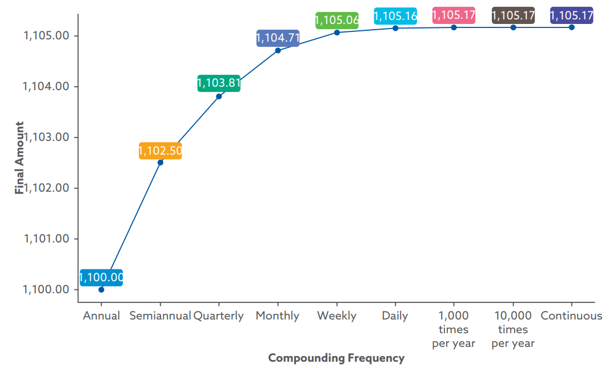
- continuously compounded return:
\begin{equation} \tilde{r}_{t, t+1} = \ln \left( \frac{P_{t+1}}{P_t} \right) = \ln(1 + r_{t, t+1}) \label{eq:continuous_compounding} \end{equation}
The additive property of continuously compounded returns provides calculation advantages:
1.2 Common Return Measures
| b | describe, compare, and interpret required rates of return, risk-free rates, risk premia, and inflation |
|---|
The Required Rate of Return
- opportunity cost: that incurs when delaying consumption, or the value that investors forgo by choosing a course of action.
- required rate of return: the minimum rate of return an investor must receive to accept the investment.
- risk-free rate: is the return on an investment without any default or reinvestment risk.
- It refers to returns on short-term government bonds, such as the 30-day US Treasury bill. The bonds have a short maturity, which reduces their sensitivity to interest rates changes.
- real risk-free rate reflects the time preferences of individuals for current versus future real consumption.
\begin{equation} r_{\text{real\_rf}} = \frac{1 + r_{\text{rf}}}{1 + \text{infl}} - 1 \quad \text{or quick approximation: } r_{\text{real\_rf}} \approx r_{\text{rf}} - \text{infl} \label{eq:real_risk_free} \end{equation}
- Total required returns for any asset can then be approximated as:
\begin{equation} r = r_{\text{rf}} + \text{infl} + \sum_{j=1}^{n} (f_j \times \text{rp}_j) \label{eq:required_return} \end{equation}
- $n$ is the number of risk factors
- $f_{j}$ is the exposure of the security to the $j^{\text{th}}$ risk factor
- $\text{rp}_j$ is the specific risk premium associated with the $j^{\text{th}}$ risk factor
- $\sum_{j=1}^{n} (f_j \times \text{rp}_j)$ is the sum of all risk premia.
As shown in Figure 3:
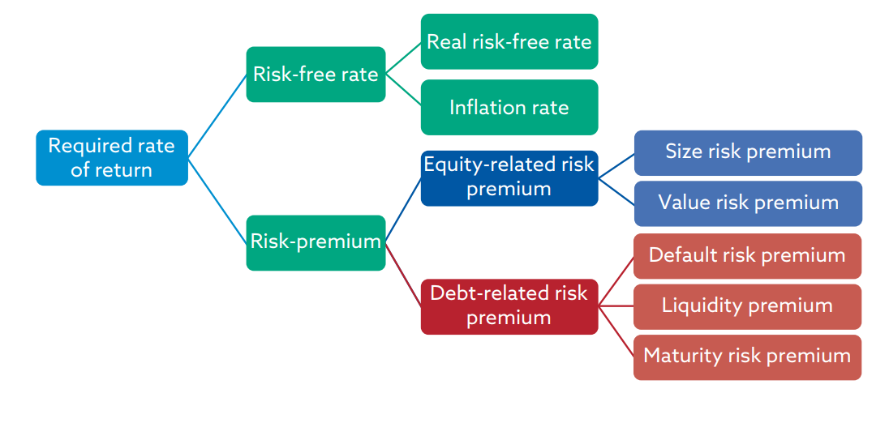
Examples of risk premia for bonds:
- Default risk premium: the additional return for buying a riskier corporate bond instead of a less-risky government bond.
- Liquidity premium: the additional return for holding a bond that may be harder to sell quickly.
- Maturity risk premium: the additional return for holding more interest rate sensitive, longer maturity bonds.
- Size risk premium: the return spread between small and large market-capitalization stocks.
- Value risk premium: the return spread between value stocks (high book-to-market) and growth stocks (low book-to-market).
Excess Returns
Excess returns: the difference between an asset's return and the return on some reference rate or benchmark.
Real Returns
Real returns are inflation-adjusted returns.
Gross and Net Return
Gross return = Total return - Transaction costs
- An appropriate measure for evaluating and comparing the investment skill of managers.
- Excludes indirect expenses related to the management and administration of an investment.
- The return the investor actually earns.
Figure 4 depicts the relationship and shows how costs erode investment returns:
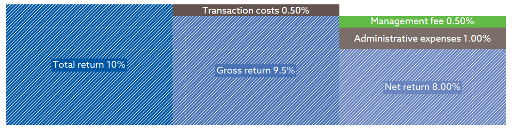
Pre-Tax and After-Tax Nominal Return
After-tax nominal return:
Capital gains tax is a tax on a positive price return. Two forms of capital gains tax rate:
- Short-term capital gains are levied on capital gains on short-term holdings.
- Long-term capital gains are levied on longer-term holdings and receive preferential tax treatment in a number of countries.
- Interest income is taxed as ordinary income in most countries.
- Dividend income may be taxed as ordinary income, at a lower rate, or be exempt from taxes depending on the jurisdiction.
Leveraged Returns
Using leverage to increase the total amount of investible assets is a common feature of investments, whether through borrowing or derivatives. Leverage increases investible capital, magnifying both returns and risks.
- $R_L$ is the leveraged return (Return on Equity)
- $R_A$ is the return on total assets (unleveraged return)
- $R_D$ is the cost of debt (borrowing interest rate)
- $D/E$ is the debt-to-equity ratio.
Types of Returns for Financial Assets, Instruments, and Indicators
| LEARNING OUTCOMES | |
|---|---|
| a | calculate, compare, and interpret different types of returns for financial assets, instruments, and indicators |
- Types of Returns
- Types of Returns: Financial Assets
- Types of Returns: Financial Instruments
- Types of Returns: Financial Indicators
- Long-Term Financial Asset Returns
- Historical Long-Term Asset Returns
- Long-Term Asset Return Components
- Risks and Returns
- Systematic and Unsystematic Risk
- The Risk--Return Trade-Off
- Portfolio Return Calculation
2.1 Types of Returns
| a | calculate, compare, and interpret different types of returns for financial assets, instruments, and indicators |
|---|
Matrix Mapping of Return Types
To provide a scientific and intuitive overview, Table 1 maps the characteristics of price return and capital distribution return across all assets, instruments, and indicators.
| Category | Price Return | Capital Distribution Return |
|---|---|---|
| Financial Assets | ||
| - Cash | None (zero price change). | None (unless held in interest-bearing accounts). |
| - Equities | Highly volatile and uncertain (Capital Appreciation). | Variable and discretionary (Dividends). |
| - Bonds (Debt) | Inversely related to interest rates; higher volatility for long-term bonds. | Fixed and contractual (Coupon payments). |
| - Hybrids | Moderate appreciation potential. | Fixed or structured (Preferred dividends). |
| Financial Instruments | ||
| - Standardized legal agreements | It depends on what it is (equity, bonds, derivatives or securitized debts). | It depends. |
| - Derivatives | Determined by price movements of underlying assets. | None (does not distribute cash flows). |
| Financial Indicators | ||
| - Interest Rates | Inverse relation to debt instrument prices. | None (acts as valuation driver). |
| - FX Rates | Currency appreciation/depreciation ($r_{\text{FX}}$). | None (acts as return multiplier: $1 + r_{\text{FX}}$). |
| - Market Indexes | Reflects aggregate price movements. | Reflects weighted cash distributions of constituents. |
Types of Returns: Financial Assets
Let's detail the characteristics across major financial assets:
- Cash: does not generate any return unless invested. In the short term, excess cash is typically placed in interest-bearing bank accounts or short-term debt instruments.
- Equities: generate returns from capital appreciation and discretionary dividends (variable capital distributions). Rapidly growing companies often choose not to distribute dividends and instead reinvest earnings to fuel growth.
- Bonds (Debt): represent contractual lending agreements that pay fixed interest coupons (fixed capital distributions). Shorter-term bonds are dominated by capital distributions, whereas longer-term bonds exhibit substantial price volatility due to market interest rate movements.
- Hybrids: preferred stock and convertible bonds blend fixed-income features of debt with the growth potential of equity.
Types of Returns: Financial Instruments
- Financial instruments are standardized legal agreements for financial assets (such as equity and bonds), as well as derivatives and securitized debt. The standardization facilitates public trading. For example, Cash Instruments represent direct ownership claims on financial assets (e.g., actual shares of stock or actual corporate bonds).
- Derivatives: financial instruments whose value is derived from the performance of another underlying financial asset or indicator (e.g., stock price, interest rate, index, exchange rate). A call option is a typical example.
Types of Returns: Financial Indicators
Financial indicators do not directly generate cash flows, but are critical to financial market operations.
- Interest Rates: traded through risk-free government bonds. Their level varies inversely with bond prices.
- The Risk-Free Rate: represented by short-term, risk-free government debt (e.g., US Treasury bills).
- Foreign Exchange (FX) Rates: represent the value of one currency expressed in terms of another currency.
When investing internationally, the home-currency return ($r_{\text{home}}$) depends on both the investment return in foreign currency ($r_{\text{foreign}}$) and the currency appreciation/depreciation rate ($r_{\text{FX}}$):
Where:
- Foreign asset return: $r_{\text{foreign}} = -2.91\%$.
- FX rate change (EUR to USD): $r_{\text{FX}} = -6.90\%$.
- Home-currency return calculation:
\[ r_{\text{home}} = (1 - 0.0291)(1 - 0.0690) - 1 = -9.61\% \]
Tác động kép từ trái phiếu giảm giá và EUR mất giá khuếch đại khoản lỗ bằng USD.
- Market Indexes: reflect the aggregate value of a basket of assets (e.g., S&P 500, OMX Copenhagen 25 Index) to indicate market trends.
2.2 Long-Term Financial Asset Returns
Historical Long-Term Asset Returns
Based on historical data for selected major US asset classes between 1979 and 2023 (large-cap stocks, small-cap stocks, corporate bonds, government bonds, and Treasury bills), several trends emerge:
- Equities Outperform Bonds: driven primarily by capital appreciation, equities deliver higher long-term average returns than fixed-income indexes.
- Small-Cap Premium: small-capitalization stocks have periodically outperformed large-capitalization stocks (size premium), though this premium varies over time and can occasionally be negative.
- Corporate vs. Government Debt: corporate bonds offer higher coupon yields on paper, but government bonds can occasionally match or exceed corporate bond performance over specific horizons due to the impact of default losses.
Long-Term Asset Return Components
The relative contribution of capital appreciation and capital distributions has evolved significantly:
- Equities: dividend yields have trended downward over time, particularly following a 1982 regulatory change that established a safe harbor for share buybacks. Companies increasingly repurchase shares to return cash to shareholders, which reduces share count, increases stock value, and provides tax advantages (capital gains tax is generally lower than dividend tax).
- Government Bonds: income return (coupon payments) remains the dominant driver of total returns, historically accounting for approximately 85% of total government bond returns. Capital appreciation plays a minor role, and bond prices suffer capital losses during periods of rising interest rates (such as the early 2020s).
2.3 Risks and Returns
Risk represents the uncertainty of investment returns and can be categorized into macro and micro risks:
- Systematic Risk (Macro Risks): broad, economy-wide risks that affect all financial assets (e.g., inflation risk, market interest rate risk, and market risk). Systematic risk cannot be diversified away.
- Unsystematic Risk (Micro Risks): risks specific to a particular issuer or sector (e.g., credit/default risk, business risk, financial leverage, sector/industry risk). Unsystematic risk can be mitigated through diversification.
The Risk--Return Trade-Off: Investors demand a higher expected return (risk premium) to compensate for taking on higher volatility and uncertainty. Figure 5 shows that historically, higher average annual returns are generally associated with a wider range of annual returns (higher volatility).
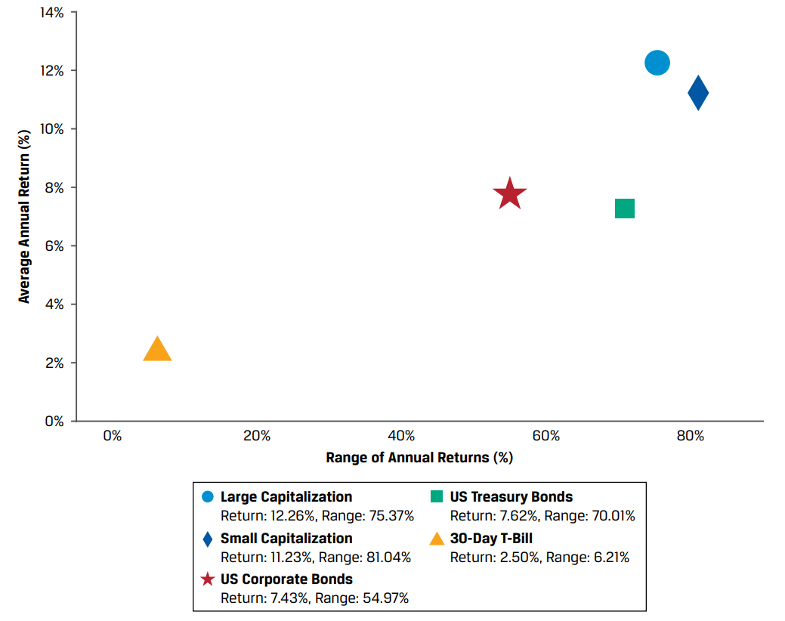
Benchmarking Returns
| LEARNING OUTCOMES | |
|---|---|
| a | calculate and compare money-weighted and time-weighted rates of return |
| b | describe the choices and the implications of the different weighting methods used in index construction and management, and calculate, interpret, and explain the value and the returns of an index |
- Money-Weighted and Time-Weighted Rates of Return
- Index Definition and Calculation
- Price Return and Total Return Indexes
- Index Weightings
- Index Management
- Comparing Index Performance
3.1 Money-Weighted and Time-Weighted Rates of Return
| a | calculate and compare money-weighted and time-weighted rates of return |
|---|
Time-Weighted Rate of Return (TWR)
The time-weighted rate of return measures the compounded rate of growth of an investment portfolio over a specified horizon. To eliminate the distorting effects of external cash flows (which the investment manager typically does not control), the total investment horizon is broken down into subperiods at each cash flow event. The returns for each subperiod are calculated and then geometrically linked:
Note that $r_{\text{TW}}$ gauges a return for the whole time of all subperiod. If you want to estimate a mean return for each subperiod, you have to use $r_{\text{G}}$
Where:
- $r_{\text{TW}}$ is the time-weighted rate of return.
- $T$ is the total number of subperiods.
- $r_t$ is the holding period return for subperiod $t$, calculated between two successive cash flow events.
Because TWR measures performance between periods and filters out investor-driven contributions or withdrawals, it is the standard metric used to evaluate the investment skill of public market fund managers.
Money-Weighted Rate of Return (MWR)
The money-weighted rate of return (or dollar-weighted rate of return) measures the internal rate of return (IRR) of the investment. It accounts for both the size and timing of all cash flows. The MWR is the discount rate that sets the net present value of all cash flows equal to zero:
Where:
- $r_{\text{MW}}$ is the money-weighted rate of return.
- $\text{CF}_t$ is the net cash flow at time $t$.
Case Study
| Time | Outflows |
|---|---|
| 0 | USD200 to purchase the first share |
| 1 | USD225 to purchase the second share |
| Time | Inflows |
| 1 | USD5 dividend received from first share (and not reinvested) |
| 2 | USD10 dividend (USD5 per share $\times$ 2 shares) received |
| 2 | USD470 received from selling two shares at USD235 per share |
Importantly, two investors in the same mutual fund or with the same portfolio of underlying investments may have different money-weighted returns because they invested different amounts in different years.
- Press [CF] $\rightarrow$ [2nd] [CE|C] $\rightarrow$ [CLR WRK] to clear worksheet memory.
- Enter $\text{CF}_0 = -200$: Press 200 $\rightarrow$ [+/-] $\rightarrow$ [ENTER].
- Press [$\downarrow$] to display C01.
- Enter $\text{CF}_1 = -220$: Press 220 $\rightarrow$ [+/-] $\rightarrow$ [ENTER].
- Press [$\downarrow$] $\rightarrow$ [$\downarrow$] to display C02 (F01 defaults to 1).
- Enter $\text{CF}_2 = 480$: Press 480 $\rightarrow$ [ENTER].
- Press [IRR] then [CPT].
$HPR_1 = 15\%, HPR_2 = 6.7\%$, trong khi đó $MWR = IRR = 9.39\%, TWR = 10.76\%$. Bằng một ước tính gần đúng, ta có: (bạn có thể tự tính lại để kiểm tra)
Như vậy, dựa trên quan sát kết quả, ta nhận thấy, lợi suất của tài sản trong kỳ đầu tiên là cao hơn tương đối so với kỳ thứ hai ($HPR_1 > HPR_2$).
Dựa trên công thức xấp xỉ ở trên, ta có nhận xét rằng lợi suất bình quân tính theo MWR sẽ có trọng số dồn vào kỳ thứ hai nhiều hơn (do có dòng tiền phát sinh lớn hơn $|CF_2| > |CF_1|$, ở đây ta chỉ xét về độ lớn của dòng tiền, không xét về dấu).
Vậy nên, có thể hiểu rằng, dòng tiền lớn hơn đang dồn về kỳ có lợi suất thấp, nên nhìn chung sẽ hạ mức lợi suất trung bình xuống (vì vậy mà mức lợi suất này có tên gọi là money-weighted).
Còn nếu sử dụng TWR, ta coi mức lợi suất bình quân tính theo lợi suất từng kỳ với tỷ trọng như nhau, mà không phụ thuộc vào hiệu ứng dòng tiền đổ vào mỗi kỳ nhiều hay ít.
Summary of Differences
Table 2 summarizes the key comparisons between the two return methodologies.
| Dimension | Money-Weighted Return (MWR) | Time-Weighted Return (TWR) |
|---|---|---|
| Core Objective | Measures the actual growth rate of the investor's funds. | Measures the compound growth rate of the portfolio assets. |
| Cash Flow Sensitivity | Highly sensitive to the size and timing of external cash flows. | Completely unaffected by external cash flows. |
| Calculation Base | Internal Rate of Return (IRR) equation. | Geometric linkage of subperiod returns. |
| Performance Bias | Can misrepresent manager skill if they cannot control cash flow timings. | Provides an objective measure of the manager's investment selection skill. |
| Primary Suitability | Recommended for private equity (where managers call capital) and individual investors. | Mandated by GIPS for public market mutual funds and active asset managers. |
3.2 Index Definition and Calculation
| b | describe the choices and the implications of the different weighting methods used in index construction and management, and calculate, interpret, and explain the value and the returns of an index |
|---|
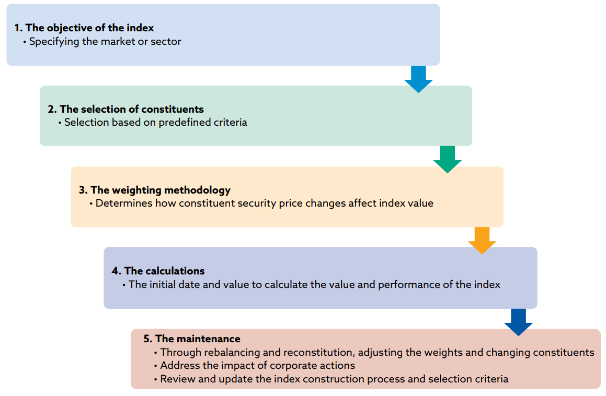
Price Return vs. Total Return Indexes
- Price Return Index ($r_{\text{PR}}$): reflects only the prices of the constituent securities and measures capital appreciation:
\begin{equation} r_{\text{PR}} = \frac{P_{t+1}}{P_t} - 1 \label{eq:price_return_rate} \end{equation}
- Total Return Index ($r_{\text{TR}}$): reflects both the prices and the reinvestment of all capital distributions (dividends/interest):
\begin{equation} r_{\text{TR}} = \frac{P_{t+1} + \text{Div}_{t+1}}{P_t} - 1 \label{eq:total_return_rate} \end{equation}
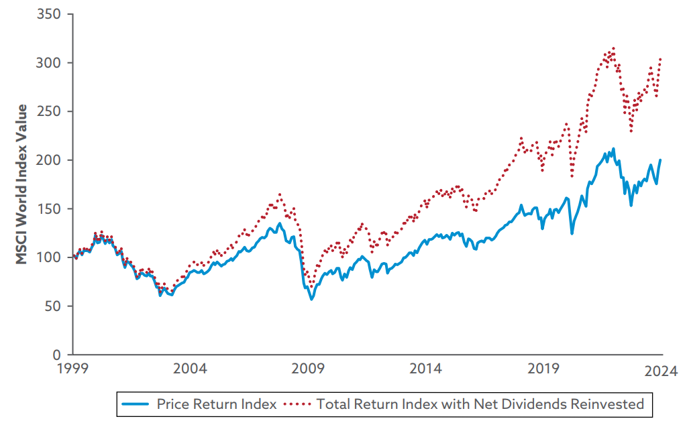
Công thức liên kết giá trị chỉ số Price Return và Total Return qua nhiều thời kỳ (kèm cơ chế tái đầu tư cổ tức và giá điều chỉnh Adjusted Price), xem thêm chi tiết tại phần (Appendix A.2: Cách tính Return).
Index Weighting Methodologies
The general formula for calculating an index value at time $t$ is:
Where:
- $w_{i,t}$ is the weight of constituent $i$ at time $t$.
- $P_{i,t}$ is the price of constituent $i$ at time $t$.
Let's review the five primary weighting methodologies:
- Market Capitalization Weighting: Weights are proportional to the total market capitalization ($Q_i P_i$):
\begin{equation} w_i^M = \frac{Q_i P_i}{\sum_{j=1}^{N} Q_j P_j} \label{eq:market_cap_weight} \end{equation}
The index value is often calculated using a divisor ($D_t$) to normalize the value:
\begin{equation} V_t = \frac{\sum_{i=1}^{N} Q_{i,t} P_{i,t}}{D_t} \label{eq:divisor_index_value} \end{equation} - Float-Adjusted Market Cap Weighting: Accounts only for shares available to the public ($f_i Q_i$), excluding strategic holdings:
\begin{equation} w_i^{M,\text{Float}} = \frac{f_i Q_i P_i}{\sum_{j=1}^{N} f_j Q_j P_j} \label{eq:float_adjusted_weight} \end{equation}
- Fundamental Weighting: Weights are based on economic or accounting indicators (e.g., book value, revenues, earnings, or dividends) instead of market prices:
\begin{equation} w_i^F = \frac{F_i}{\sum_{j=1}^{N} F_j} \label{eq:fundamental_weight} \end{equation}
- Price Weighting: Weights are proportional to the security price per share:
\begin{equation} w_i^P = \frac{P_i}{\sum_{j=1}^{N} P_j} \label{eq:price_weight} \end{equation}
The index value is calculated by dividing the sum of constituent prices by a divisor ($D_t$):
\begin{equation} V_{\text{PRI},t} = \frac{\sum_{i=1}^{N} P_{i,t}}{D_t} \label{eq:price_weighted_value} \end{equation} - Equal Weighting: Each security is assigned an equal share at the inception/rebalancing date:
\begin{equation} w_i^E = \frac{1}{N} \label{eq:equal_weight} \end{equation}
The index value is:
\begin{equation} V_{\text{EQI},t} = \frac{\sum_{i=1}^{N} n_i P_{i,t}}{D_t} \label{eq:equal_weighted_value} \end{equation}
Summary of Weighting Methodologies
Table 3 compares the characteristics of these methodologies.
| Index Type | Weighting Basis | Examples | Pros | Cons |
|---|---|---|---|---|
| Market Cap | Proportional to market capitalization. | S&P 500, MSCI World, S&P BSE SENSEX | Reflects relative sizes; low turnover; automatic rebalancing. | Concentrated in top firms; overweights overpriced stocks. |
| Equal Weighted | Identical weight ($1/N$). | S&P 500 Equal Weight, MSCI USA Equal Weight | Reduces concentration risk; enhances exposure to smaller firms. | Requires frequent rebalancing; high turnover and transaction costs. |
| Fundamental | Economic metrics (sales, dividends, book value). | FTSE RAFI US 1000 | Focuses on firm size over market sentiment; value bias. | Sector bias; excludes firms with zero earnings or dividends. |
| Price Weighted | Share price ($P_i$). | Dow Jones Industrial Average (DJIA), Nikkei 225 | Simple to calculate and interpret. | High price stocks dominate index; stock splits distort weights. |
Chi tiết cách xác định số lượng cổ phiếu giả định ($n_i$) và quy mô danh nghĩa ($A_r$) cho từng phương pháp phân bổ tỷ trọng (Market Cap, Float-Adjusted, Fundamental, Price, Equal), xem thêm phần (Appendix A.3: Các loại weight của index) và (Appendix A.5: Cách xác định số lượng cổ phiếu mà rổ index nắm giữ).
Index Management: Rebalancing and Reconstitution
- Periodic Rebalancing: adjusts the weights of the constituents back to their target levels. This is critical for equal-weighted and fundamentally weighted indexes because price variations cause weights to drift. Equal-weighted indexes require counter-trend trading (selling winners and buying losers), which increases transaction costs and portfolio turnover.
- Reconstitution: the periodic process of adding or removing constituent securities from the index based on eligibility rules. Widely followed indexes often apply a banding strategy (e.g., Russell 2000's 5% band) to reduce unnecessary index turnover at the breakpoints.
Công thức toán học mô tả sự lệch tỷ trọng thực tế ($w_{i,t}^{\text{actual}}$) và cơ chế điều chỉnh Divisor mới ($D^+$) khi thay đổi danh mục (Reconstitution), xem thêm phần (Appendix A.6: Rebalance và Reconstitution).
Divisor Adjustment for Stock Splits
In a price-weighted index, when a constituent stock splits, its price per share drops mechanically without any change in its actual economic value or the firm's market capitalization. To prevent the index value from dropping artificially, the divisor ($D$) must be adjusted downward:
- Before Split: The index value is:
\[ V_{\text{PRI}} = \frac{50+40+30+25+5}{1.5} = 100 \]
- After 2-for-1 Split of A: Stock A's price drops from 50 to 25. The new price sum is $25+40+30+25+5 = 125$.
- Divisor Adjustment: To keep the index value unchanged at 100:
\[ D_{\text{new}} = \frac{125}{100} = 1.25 \]
Khi cổ phiếu chia tách làm giá giảm, Divisor phải giảm tương ứng để giữ điểm số chỉ số không bị thay đổi ảo.
Xem thêm về nguyên lý tổng quát điều chỉnh Divisor ($D_t = D_{t-1} \times \frac{A_t^*}{A_{t-1}}$) và mô hình 4 lớp tư duy xây dựng chỉ số tại phần (Appendix A.4: Diễn giải Divisor) và (Appendix A.7: Kết luận).
The Time Value of Money in Finance
| LEARNING OUTCOMES | |
|---|---|
| a | calculate and interpret the present value of fixed-income and equity instruments based on expected future cash flows |
| b | calculate and interpret the implied return of fixed-income instruments and required return and implied growth of equity instruments given their present value and cash flows |
| c | explain the cash flow additivity principle and its importance for the condition of no arbitrage, and explain its use in calculating implied forward interest rates, forward exchange rates, and option values |
- Time Value of Money in Fixed Income and Equity
- Fixed-Income Instruments
- Equity Instruments
- Implied Return and Growth
- Implied Return for Fixed-Income Instruments
- Equity Instruments, Implied Return, and Implied Growth
- Cash Flow Additivity
- Implied Forward Rates Using Cash Flow Additivity
- Forward Exchange Rates Using No Arbitrage
- Option Pricing Using Cash Flow Additivity
4.1 Time Value of Money in Fixed Income and Equity
| a | calculate and interpret the present value of fixed-income and equity instruments based on expected future cash flows |
|---|
The relationship between a current or present value, $PV_0$, and future value, $FV_t$, of a cash flow—where $r$ is the stated discount rate per period and $t$ is the number of compounding periods—is:
If the compounding frequency approaches infinity (continuous compounding), we calculate the future value as follows:
Conversely, we can solve for the present value of a future cash flow under simple and continuous compounding:
Fixed-Income Instruments and the Time Value of Money
Cash flows associated with fixed-income instruments (debt) usually follow one of three general patterns:
- Discount (Zero-Coupon) Bonds: Single payment representing both interest and principal repayment at maturity.
- Coupon Bonds: Regular periodic interest coupon payments with the principal repaid at maturity.
- Annuities / Fully Amortizing Loans: Equal periodic payments containing both interest and principal over the life of the instrument.
Discount Instruments
The cash flow pattern of a discount bond is illustrated in Figure 8.
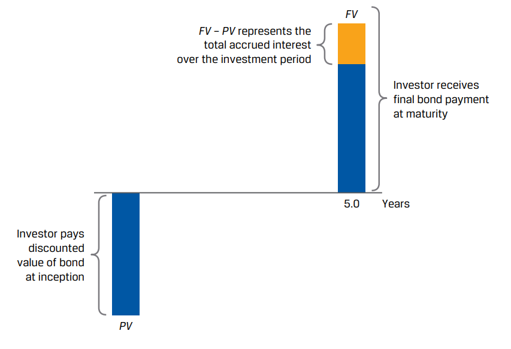
The present value calculation for a discount bond with principal $FV_t$ repaid fully after $t$ periods with a periodic market discount rate of $r$ per period is:
Coupon Instruments
The cash flow pattern of a coupon bond is illustrated in Figure 9.
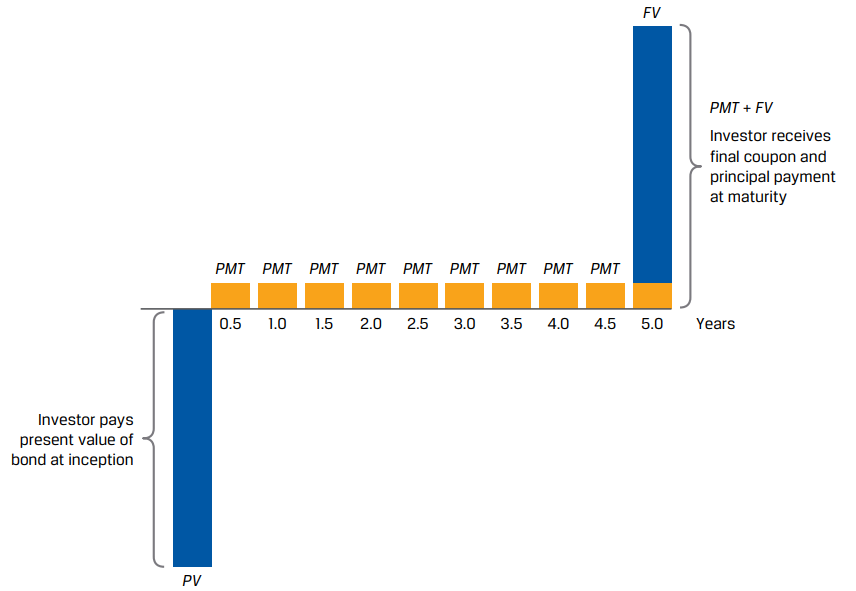
The price of a coupon bond is the sum of the present values of all periodic coupon payments and the present value of the final principal repayment:
Using the sum of a geometric series, this simplifies to:
Floating-Rate and Perpetual Bonds
- Floating-Rate Bonds: Adjust their coupon payments periodically based on a reference rate (e.g., NIBOR, SOFR) plus a fixed credit margin.
- Perpetual Bonds: Have no stated maturity date ($T \to \infty$), paying coupons indefinitely. The valuation simplifies to:
\begin{equation} PV_{\text{Perpetual}} = \frac{PMT}{r} \label{eq:pv_perpetual_bond_m4} \end{equation}
Annuities and Fully Amortizing Loans
The cash flow pattern for fully amortizing loans (mortgages) is illustrated in Figure 10.
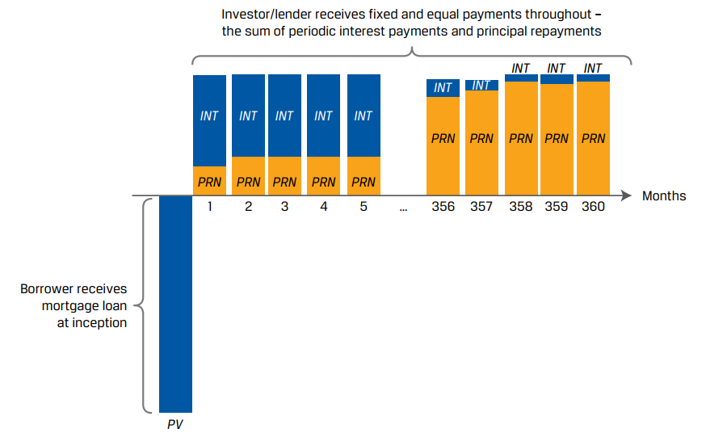
For level-payment instruments (like mortgages), the periodic level cash flow, $PMT$, containing both interest and principal repayment is:
The amortization breakdown for the first two months is:
- Month 1:
- Interest payment: $\text{USD } 800,000 \times 0.4375\% = \text{USD } 3,500.00$
- Principal repayment: $\text{USD } 4,417.63 - \text{USD } 3,500.00 = \text{USD } 917.63$
- Remaining balance: $\text{USD } 800,000 - \text{USD } 917.63 = \text{USD } 799,082.37$
- Month 2:
- Interest payment: $\text{USD } 799,082.37 \times 0.4375\% = \text{USD } 3,495.99$
- Principal repayment: $\text{USD } 4,417.63 - \text{USD } 3,495.99 = \text{USD } 921.64$
- Remaining balance: $\text{USD } 799,082.37 - \text{USD } 921.64 = \text{USD } 798,160.73$
Dư nợ giảm dần: Dù tổng tiền trả hàng tháng cố định, cấu phần lãi giảm dần theo dư nợ gốc thực tế, và cấu phần gốc tăng dần tương ứng.
4.2 Equity Instruments and the Time Value of Money
Equity shares have no maturity date and are assumed to remain outstanding indefinitely. Share valuation is based on discounting expected discretionary cash dividends.
Constant Dividends
The cash flow pattern for equity paying constant dividends is illustrated in Figure 11.
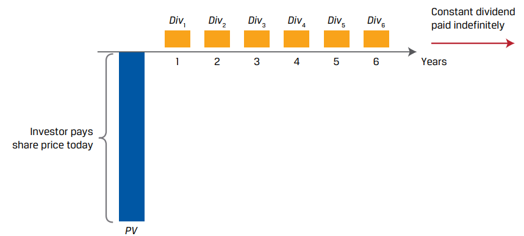
The valuation of equity paying constant dividends in perpetuity simplifies to:
Constant Dividend Growth (Gordon Growth Model)
The cash flow pattern for equity paying constant growth dividends is illustrated in Figure 12.
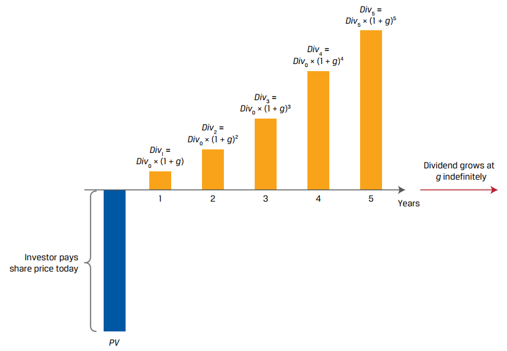
If dividends grow at a constant rate $g$ in perpetuity:
where $r - g > 0$.
Two-Stage Dividend Growth Model
The cash flow pattern of a two-stage dividend growth model is illustrated in Figure 13.
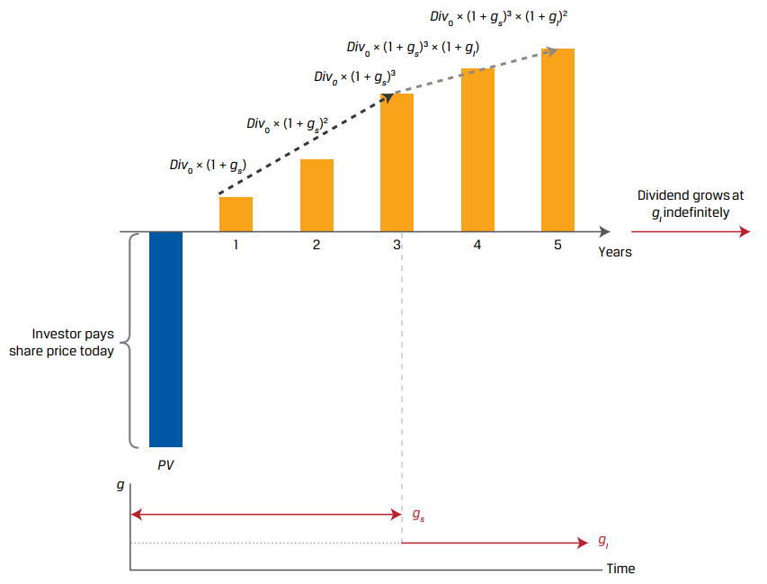
For companies experiencing a rapid initial growth phase ($g_s$) for $n$ periods, followed by a stable long-term growth rate ($g_l$):
Where the expected terminal value at the end of the high-growth phase $E[S_n]$ is:
- Step 1: PV of high-growth dividends (first 3 years):
\[ Div_1 = 1.5900 \implies PV(Div_1) = \frac{1.5900}{1.15} \approx 1.3826 \]\[ Div_2 = 1.6854 \implies PV(Div_2) = \frac{1.6854}{1.15^2} \approx 1.2744 \]\[ Div_3 = 1.7865 \implies PV(Div_3) = \frac{1.7865}{1.15^3} \approx 1.1747 \]\[ \text{Sum of PV of high-growth phase} \approx 3.8317 \]
- Step 2: PV of terminal value at Year 3:
\[ Div_4 = Div_3 \times (1 + g_l) = 1.7865 \times 1.02 \approx \text{GBP } 1.8222 \]\[ Terminal\ Value\ E[S_3] = \frac{1.8222}{0.15 - 0.02} \approx \text{GBP } 14.0169 \]\[ PV\ of\ E[S_3] = \frac{14.0169}{1.15^3} \approx \text{GBP } 9.2163 \]
- Step 3: Total price:
\[ PV_0 = 3.8317 + 9.2163 = \text{GBP } 13.0480 \approx \text{GBP } 13.05 \]
Đến đây, chúng ta sử dụng chức năng [CF] trên máy tính để tính ra giá trị PV, theo 2 cách bấm: [chú thích]
- Dùng 3 dòng tiền: $\text{C01} = D(1+g_s)$, $\text{C02} = D(1+g_s)^2$, $\text{C03} = D(1+g_s)^3 + D(1+g_s)^3(1+g_l)/(r-g_l)$
- Hoặc 2 dòng tiền: $\text{C01} = D(1+g_s)$, $\text{C02} = D(1+g_s)^2 + D(1+g_s)^3/(r-g_l)$
4.3 Implied Return and Growth
| b | calculate and interpret the implied return of fixed-income instruments and required return and implied growth of equity instruments given their present value and cash flows |
|---|
When market prices and expected cash flows are observed, analysts can calculate the implied rate of return and the implied growth rate to assess valuation.
Implied Return for Fixed-Income Instruments
- Discount Instruments
\begin{equation*} \text{implied r} = \sqrt[T]{\frac{FV_T}{PV}} - 1 = \left(\frac{FV_T}{PV}\right)^\frac{1}{T} - 1 \end{equation*}
- Coupon Instruments
- implied r = YTM
\begin{equation*} \text{PV(Market Price of Coupon Bond)} = \frac{PMT_1}{(1+YTM)^1}+\frac{PMT_2}{(1+YTM)^2}+...+\frac{PMT_T + FV_T}{(1+YTM)^T} \end{equation*}
- Use Microsoft Excel or Google Sheets YIELD function:\\ YTM = YIELD (settlement, maturity, rate, pr, redemption, frequency, [basis])
- implied r = YTM
Equity Implied Return, Implied Growth, and Forward P/E Ratios
- Constant Dividend Growth Rate
\begin{align*} & \text{implied r} = \frac{D(1+g)}{PV} + g = \frac{D_{1}}{PV} + g \\ & \text{implied g} = \frac{r \times PV - D}{PV} = r - \frac{D_{1}}{PV} \end{align*}
Given a price-to-earnings ratio and dividend payout ratio, we can solve for either required return or implied dividend growth rate.
\begin{equation*} \frac{PV}{E} = \frac{\displaystyle \frac{D}{E} \times (1+g)}{r - g} \end{equation*}In practice, the forward price-to-earnings ratio or ratio of its share price to an estimate of its next period (t + 1) earnings per share is commonly used.
\begin{equation*} \frac{PV}{E_{1}} = \frac{\displaystyle \frac{D_{1}}{E_{1}}}{r - g} \end{equation*}
4.4 Cash Flow Additivity
| c | explain the cash flow additivity principle and its importance for the condition of no arbitrage, and explain its use in calculating implied forward interest rates, forward exchange rates, and option values |
|---|
The cash flow additivity principle states that the present value of any sum of future cash flows equals the sum of their individual present values. This principle is vital in maintaining the no-arbitrage condition (meaning it is impossible to make a riskless profit).
The comparison between two investment strategies under this principle is illustrated in Figure 14.
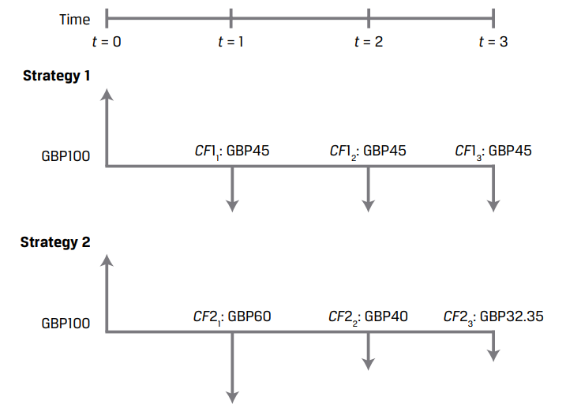
- Strategy 1: Cash flows are $-100, +45, +45, +45$.
\[ PV_1 = -100 + \frac{45}{1.1} + \frac{45}{1.1^2} + \frac{45}{1.1^3} \approx \text{GBP } 11.91 \]
- Strategy 2: Cash flows are $-100, +60, +40, +32.35$.
\[ PV_2 = -100 + \frac{60}{1.1} + \frac{40}{1.1^2} + \frac{32.35}{1.1^3} \approx \text{GBP } 11.91 \]
- Incremental Cash Flow Diff: Strategy 1 -- Strategy 2 cash flows: $0, -15, +5, +12.65$.
\[ PV_{\text{Diff}} = -\frac{15}{1.1} + \frac{5}{1.1^2} + \frac{12.65}{1.1^3} \approx 0 \]
Tính cộng dồn dòng tiền: Hai danh mục tạo ra dòng tiền có PV bằng nhau phải có giá giao dịch giống nhau để triệt tiêu cơ hội arbitrage.
Implied Forward Interest Rates Using Cash Flow Additivity
The relationship between spot rates and implied forward rates is illustrated in Figure 15.
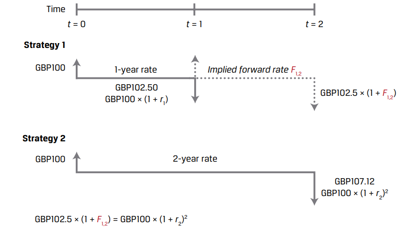
Under the no-arbitrage condition, investing for $k$ periods must yield the same return as investing for $j$ periods ($j < k$) and then reinvesting for the remaining $k-j$ periods at the forward rate:
| Date | PV 1y | PV 2y | Spot $S_1$ | Spot $S_2$ |
|---|---|---|---|---|
| 31 May 2022 | 98.028 | 95.109 | $2.012\%$ | $2.539\%$ |
| 15 Jun 2022 | 97.402 | 93.937 | $2.667\%$ | $3.177\%$ |
- May 31 Forward Rate:
\[ F_{1,1} = \frac{(1 + 0.02539)^2}{1 + 0.02012} - 1 \approx 3.069\% \]
- June 15 Forward Rate:
\[ F_{1,1} = \frac{(1 + 0.03177)^2}{1 + 0.02667} - 1 \approx 3.689\% \]
- Forward Rate Change: $3.689\% - 3.069\% = 62 \text{ bps}$.
The differences between spot and forward curves under rising rates are illustrated in Figure 16.
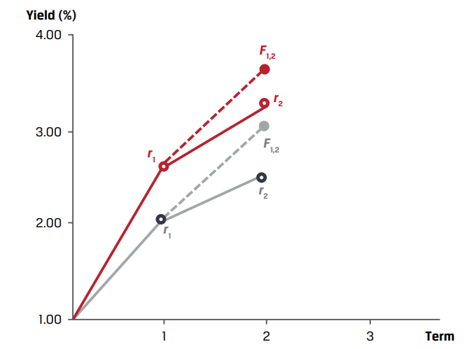
Forward Exchange Rates Using No Arbitrage
The no-arbitrage condition and the replication paths in the FX market are illustrated in Figure 17.
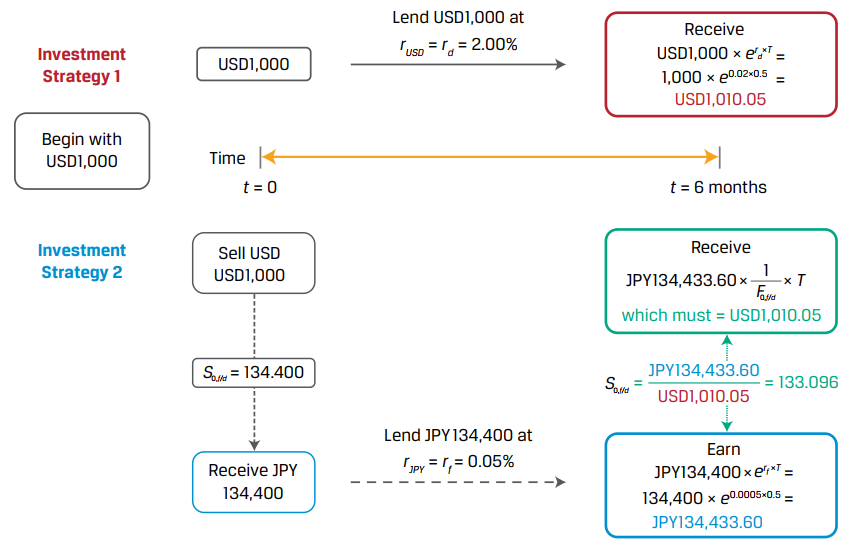
The forward exchange rate $F$ (expressed as price/base) under continuous compounding interest rate parity is:
- US/Japan (USD to JPY, 6 months): Spot JPY/USD = 134.40. $r_{\text{JPY}} = 0.05\%$, $r_{\text{USD}} = 2.00\%$ (continuously compounded):
- Strategy 1 (Domestic USD): $\text{USD } 1,000 \times e^{0.02 \times 0.5} = \text{USD } 1,010.05$
- Strategy 2 (Convert JPY): $\text{USD } 1,000 \to \text{JPY } 134,400$. Grows to $\text{JPY } 134,400 \times e^{0.0005 \times 0.5} \approx \text{JPY } 134,433.60$.
- Forward rate required:
\[ F = \frac{\text{JPY } 134,433.60}{\text{USD } 1,010.05} \approx 133.096 \text{ JPY/USD} \]
- GBP/USD (Interest rate differential shift): Spot GBP/USD = 1.2602 (USD per GBP):
- May 31: $r_{\text{USD}} = 2.012\%$, $r_{\text{GBP}} = 1.291\% \implies F = 1.2602 \times e^{0.02012 - 0.01291} \approx 1.2693$
- June 15: $r_{\text{USD}} = 2.667\%$, $r_{\text{GBP}} = 1.562\% \implies F = 1.2602 \times e^{0.02667 - 0.01562} \approx 1.2742$
Khi $r_{\text{USD}}$ tăng mạnh hơn $r_{\text{GBP}}$, chênh lệch nới rộng khiến USD mất giá kỳ hạn so với GBP (tỷ giá kỳ hạn tăng từ 1.2693 lên 1.2742).
Option Pricing Using Cash Flow Additivity
The binomial tree model for the underlying asset's price is illustrated in Figure 18, and the contract value under the two scenarios is shown in Figure 19.
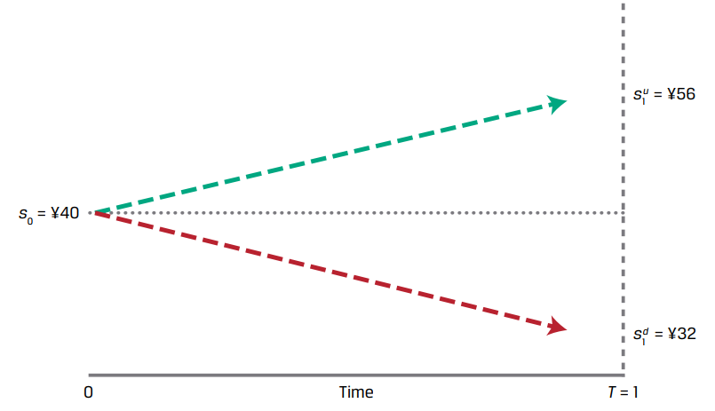
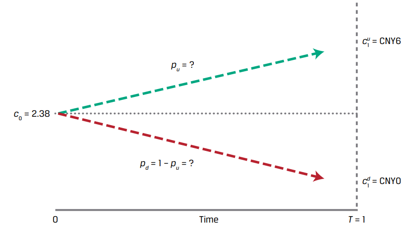
We can calculate the no-arbitrage price of derivative options using a replicating portfolio consisting of a position in the underlying asset ($\Delta$ shares) and risk-free lending/borrowing.
- Call Option ($c_1^u = 6$, $c_1^d = 0$): Replicate with $\Delta$ stock and short 1 call option.
\[ \text{Hedge Ratio } \Delta = \frac{c_1^u - c_1^d}{S_1^u - S_1^d} = \frac{6 - 0}{56 - 32} = 0.25 \]
- Portfolio Value in up state: $0.25 \times 56 - 6 = 8$
- Portfolio Value in down state: $0.25 \times 32 - 0 = 8$
\[ 0.25(40) - c_0 = \frac{8}{1.05} \approx 7.62 \implies c_0 = 10 - 7.62 = \text{CNY } 2.38 \] - Put Option ($p_1^u = 0$, $p_1^d = 18$): Replicate with $\Delta$ stock and long 1 put option.
\[ \text{Hedge Ratio } \Delta = \frac{p_1^d - p_1^u}{S_1^u - S_1^d} = \frac{18 - 0}{56 - 32} = 0.75 \]
- Portfolio Value in up state: $0.75 \times 56 + 0 = 42$
- Portfolio Value in down state: $0.75 \times 32 + 18 = 42$
\[ 0.75(40) + p_0 = \frac{42}{1.05} = 40 \implies p_0 = 40 - 30 = \text{CNY } 10 \]
The replication payoffs for the call option under the up and down scenarios are shown in Figure 20.
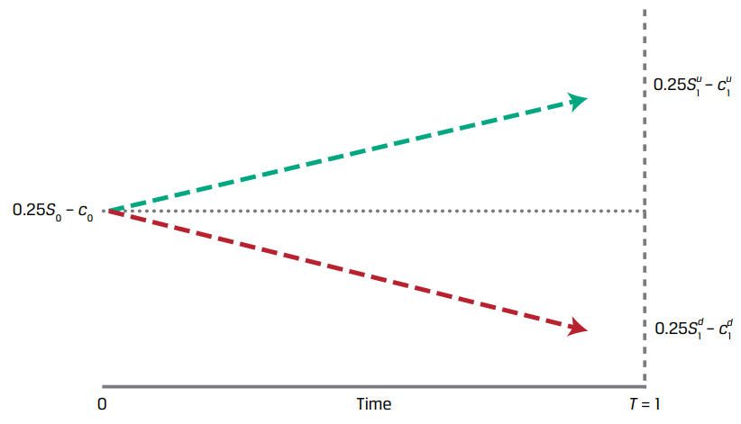
- Project value with option exercised: $\text{MYR } 1.03 \text{ million}$ (Case 1)
- Project value without option exercised: $-\text{MYR } 2.12 \text{ million}$ (Case 2)
- Gross value of the option (at Year 10):
\[ \text{MYR } 1.03 \text{ million} - (-\text{MYR } 2.12 \text{ million}) = \text{MYR } 3.15 \text{ million} \]
- PV of option cost (discounted 10 years at 6%):
\[ PV(\text{Cost}) = \frac{\text{MYR } 0.5 \text{ million}}{1.06^{10}} \approx \text{MYR } 0.28 \text{ million} \]
- Net Value of Real Option:
\[ \text{MYR } 3.15 \text{ million} - \text{MYR } 0.28 \text{ million} = \text{MYR } 2.87 \text{ million} \]
Real Option tạo sự linh hoạt trong đầu tư. Việc thực hiện quyền chọn ở năm 10 giúp tăng giá trị ròng dự án thêm MYR 2.87 triệu.
The outcomes and decision tree of the desalination project with and without the real option are illustrated in Figure 21.
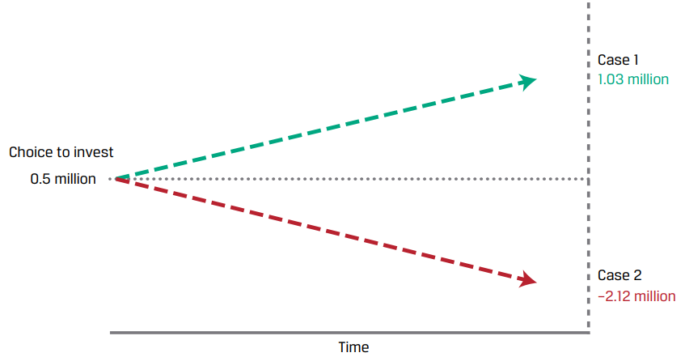
Statistical Characteristics of Asset Returns
| LEARNING OUTCOMES | |
|---|---|
| a | calculate, interpret, and evaluate various measures of (1) central tendency and location and (2) dispersion |
| b | describe, interpret, and evaluate measures of skewness and kurtosis |
| c | calculate, interpret, and evaluate covariance and correlation |
| d | calculate, interpret, and evaluate semi-deviation and coefficient of variation |
- Measures of Central Tendency and Dispersion
- Measures of Central Tendency
- Measures of Dispersion
- Measures of Shape of a Distribution
- Skewness
- Kurtosis
- Covariance and Correlation between Variables
- Covariance
- Correlation
- Other Dispersion Measures
- Semi-Deviation
- Coefficient of Variation
5.1 Measures of Central Tendency and Dispersion
| a | calculate, interpret, and evaluate various measures of (1) central tendency and location and (2) dispersion |
|---|
To describe a dataset systematically, statisticians rely on two concepts: the population (the entire set of observations, such as the entire exchange rate history) and the sample (a subset of that population, such as daily exchange rates during a specific period).
Measures of Central Tendency
A measure of central tendency is a single numerical value that describes the center or typical position of a dataset.
- Arithmetic Mean: The sum of all values divided by the number of observations.
\begin{equation} \text{Population Mean} = \mu = \frac{\sum_{i=1}^{N} X_i}{N} \label{eq:pop_mean_m5} \end{equation}\begin{equation} \text{Sample Mean} = \bar{X} = \frac{\sum_{i=1}^{n} X_i}{n} \label{eq:sample_mean_m5} \end{equation}
The arithmetic mean is measured in the same units as the underlying data. It is highly sensitive to outliers.
- Median: The middle value in a dataset when the values are arranged in ascending or descending order.
- If the number of observations $n$ is odd, the median is the value at position $\frac{n+1}{2}$:
\begin{equation} \text{Med} = X_{\left(\frac{n+1}{2}\right)} \label{eq:median_odd_m5} \end{equation}
- If $n$ is even, the median is the average of the two middle observations:
\begin{equation} \text{Med} = \frac{X_{\left(\frac{n}{2}\right)} + X_{\left(\frac{n}{2}+1\right)}}{2} \label{eq:median_even_m5} \end{equation}
- If the number of observations $n$ is odd, the median is the value at position $\frac{n+1}{2}$:
- Mode: The value that appears most frequently in a dataset. A dataset may be unimodal (one mode), multimodal (multiple modes), or have no mode at all.
Dealing with Outliers
Outliers can occur due to measurement errors, data entry issues, or natural variability. When outliers are valid, analysts use three primary strategies to manage them:
- Leave the outliers unchanged: Best if it is important to reflect the entire actual distribution.
- Trimmed Mean: Excludes a stated percentage of the lowest and highest values before computing the mean. For example, a $1\%$ trimmed mean discards the bottom $0.5\%$ and top $0.5\%$ of values.
- Winsorized Mean: Substitutes extreme values with specified percentiles (e.g., setting the lowest $2.5\%$ to the $2.5\text{th}$ percentile and the highest $2.5\%$ to the $97.5\text{th}$ percentile value).
Measures of location
Quantile (or fractile): is a value at, or below which a stated proportion of the observations in a data set lie.
- quartiles, which divide the distribution in quarters or four equal parts.
- quintiles, which divide the distribution into fifths.
- deciles, which divide the data into tenths.
- percentiles, which divide the distribution into hundredths.
If $L_y$ is not an integer, we linearly interpolate between the two closest values.
- The interquartile range (IQR) is the difference between the third quartile and the first quartile, or $IQR = Q_3 - Q_1$.
- A box and whisker plot: consists of a "box" with "whiskers" connected to the box. The "box" represents the lower bound of the second quartile and the upper bound of the third quartile, with the median or arithmetic average noted as a measure of central tendency of the entire distribution. The whiskers are the lines that run from the box and are bounded by the "fences", which represent the lowest and highest values of the distribution.
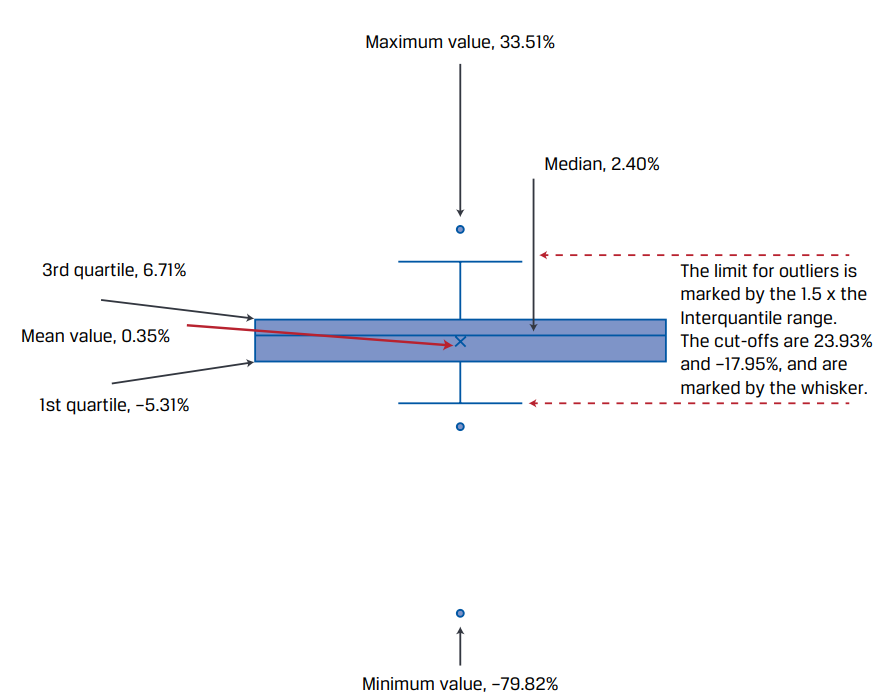
| Calculation Type | Excel Formula | Google Sheets Formula |
|---|---|---|
| Mean | =AVERAGE(A1:A5) | =AVERAGE(A1:A5) |
| Median | =MEDIAN(A1:A5) | =MEDIAN(A1:A5) |
| Mode | =MODE.SNGL(A1:A5) | =MODE(A1:A5) |
| Trimmed Mean | =TRIMMEAN(A1:A5, percent) | =TRIMMEAN(A1:A5, percent) |
| 1st Quartile | =QUARTILE.INC(A1:A5, 1) | =QUARTILE(A1:A5, 1) |
| 3rd Quartile | =QUARTILE.INC(A1:A5, 3) | =QUARTILE(A1:A5, 3) |
| Percentile | =PERCENTILE.INC(A1:A5, K) | =PERCENTILE(A1:A5, K) |
Measures of Dispersion
Dispersion quantifies the variability of data around its central tendency, serving as a measure of investment risk. Below are absolute dispersion, some of relative dispersion are refered to Mục: Relative dispersion.
- Range: The difference between the highest and lowest values:
\begin{equation} \text{Range} = \text{Maximum value} - \text{Minimum value} \label{eq:range_formula_m5} \end{equation}
- Mean Absolute Deviation (MAD): The arithmetic average of absolute deviations from the mean. It is less sensitive to outliers than standard deviation:
\begin{equation} \text{MAD} = \frac{\sum_{i=1}^{n} |X_i - \bar{X}|}{n} \label{eq:mad_formula_m5} \end{equation}
- Variance ($\sigma^2$ or $s^2$): The average of the squared deviations from the mean. Sample variance uses $n - 1$ (Bessel's correction) to prevent underestimating the population variance:
\begin{equation} \text{Population Variance} = \sigma^2 = \frac{\sum_{i=1}^{N} (X_i - \mu)^2}{N} \label{eq:pop_variance_m5} \end{equation}\begin{equation} \text{Sample Variance} = s^2 = \frac{\sum_{i=1}^{n} (X_i - \bar{X})^2}{n - 1} \label{eq:sample_variance_m5} \end{equation}
- Standard Deviation ($\sigma$ or $s$): The square root of variance ($s = \sqrt{s^2}$). It is measured in the same units as the underlying data.
5.2 Measures of Shape of a Distribution
| b | describe, interpret, and evaluate measures of skewness and kurtosis |
|---|
To describe a distribution's shape completely, analysts evaluate its higher-order moments, particularly its asymmetry (skewness) and tail heaviness (kurtosis).
Skewness
Skewness is a measure of the asymmetry of a distribution.
- Symmetric Distribution: Skewness is zero. Mean, Median, and Mode are equal.
- Positively Skewed (Right-skewed): Has a long tail on the right side. Extreme positive values pull the mean upward, making $\text{Mean} > \text{Median} > \text{Mode}$.
- Negatively Skewed (Left-skewed): Has a long tail on the left side. Extreme negative values pull the mean downward, making $\text{Mean} < \text{Median} < \text{Mode}$.
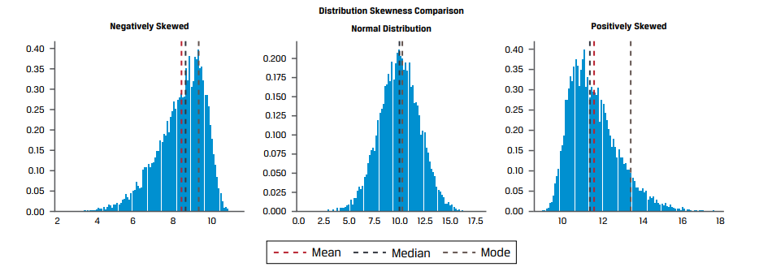
Kurtosis
Kurtosis measures the thickness or heaviness of the tails of a distribution relative to a normal distribution.
- Leptokurtic (Fat-tailed): Kurtosis $>$ 3, Excess Kurtosis $>$ 0. Taller peaks and fatter tails, representing higher probability of extreme outcomes.
- Platykurtic (Thin-tailed): Kurtosis $<$ 3, Excess Kurtosis $<$ 0. Flatter peaks and thinner tails.
- Mesokurtic (Normal-like): Kurtosis = 3, Excess Kurtosis = 0.
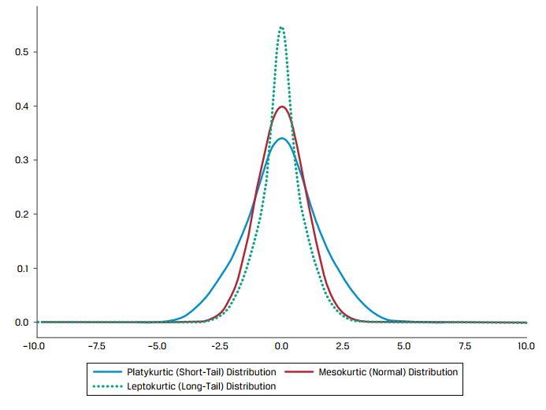
Excess Kurtosis is defined as:
Lưu ý: Không cần ghi nhớ công thức toán học chi tiết của Skewness và Kurtosis. Kỳ thi chỉ tập trung vào việc đọc hiểu ý nghĩa thực tế và so sánh các giá trị này.
| Moment | Moment Name / Description | Population Formula | Sample Approximation |
|---|---|---|---|
| First | Mean (Central Tendency) | $\mu = \frac{\sum x_i}{N}$ | $\bar{X} = \frac{\sum x_i}{n}$ |
| Second | Variance (Dispersion) | $\sigma^2 = \frac{\sum (x_i - \mu)^2}{N}$ | $s^2 = \frac{\sum (x_i - \bar{X})^2}{n - 1}$ |
| Third | Skewness (Asymmetry) | $\text{Skew} = \frac{1}{N}\sum\left(\frac{x_i - \mu}{\sigma}\right)^3$ | $\text{Skew} = \frac{1}{n}\sum\left(\frac{x_i - \bar{X}}{s}\right)^3$ |
| Fourth | Kurtosis (Tail Heaviness) | $\text{Kurt} = \frac{1}{N}\sum\left(\frac{x_i - \mu}{\sigma}\right)^4$ | $\text{Kurt} = \frac{1}{n}\sum\left(\frac{x_i - \bar{X}}{s}\right)^4$ |
| Calculation | Excel Formula | Google Sheets Formula |
|---|---|---|
| Population Skewness | =SKEW.P(A1:A5) | =SKEW.P(A1:A5) |
| Sample Skewness | =SKEW(A1:A5) | =SKEW(A1:A5) |
| Excess Kurtosis | =KURT(A1:A5) | =KURT(A1:A5) |
5.3 Covariance and Correlation
| c | calculate, interpret, and evaluate covariance and correlation |
|---|
To quantify the co-movements and linear relationships between two variables, analysts use covariance and correlation.
Covariance
Covariance measures the joint variability of two random variables, indicating how they move in relation to each other.
If covariance is positive, the variables tend to move in the same direction relative to their means. If negative, they tend to move in opposite directions.
Correlation
Correlation standardizes covariance into a dimensionless measure that ranges between $-1$ and $+1$:
| Correlation Value | Correlation Type | Description |
|---|---|---|
| $\rho_{X,Y} = 0$ | No correlation | Absence of any linear relationship. |
| $\rho_{X,Y} > 0$ | Positive correlation | Moves in the same direction; $+1$ represents a perfect linear relationship. |
| $\rho_{X,Y} < 0$ | Negative correlation | Moves in opposite directions; $-1$ represents a perfect inverse linear relationship. |
Anscombe's Quartet
Anscombe's Quartet consists of four datasets that have nearly identical simple statistical properties (mean, variance, correlation), yet have completely different distributions and look completely different when graphed. This underscores the vital importance of visualizing data prior to performing correlation analysis.
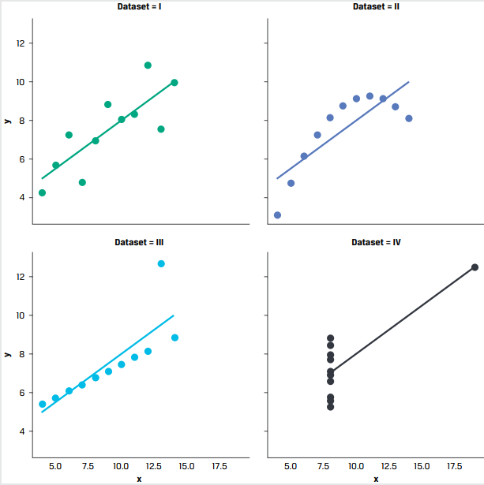
5.4 Other Dispersion Measures
| d | calculate, interpret, and evaluate semi-deviation and coefficient of variation |
|---|
Semi-Deviation and Target Downside Deviation
While variance and standard deviation capture both upside and downside volatility, investors are primarily concerned with downside risk.
- Semi-deviation (Semi-variance): Measures variability for observations below the mean.
- Target Downside Deviation: Measures dispersion only for observations below a specific target or threshold $B$:
\begin{equation} s_{\text{Target}} = \sqrt{\frac{\sum_{X_i \le B} (X_i - B)^2}{n - 1}} \label{eq:target_semi_deviation_m5} \end{equation}
Relative dispersion
- Coefficient of variation\\
the ratio of the standard deviation of the data set to its mean.
In the investment arena, CV is used to measure the risk per unit of return in various investments.
\begin{equation} \text{CV} = \frac{s}{\bar{X}} \label{eq:coefficient_of_variation_m5} \end{equation}
A lower CV represents a more favorable risk-to-return ratio.
- Sharpe ratio
the ratio of excess return over the risk-free rate from an investment to its standard deviation of returns. It basically measures excess return per unit of risk.\begin{equation} \text{Sharpe ratio} = \frac{R_i - r_f}{\sigma_i} \label{eq:Sharpe_m5} \end{equation}
Statistical Distributions for Financial Asset Prices and Returns
| LEARNING OUTCOMES | |
|---|---|
| a | calculate, interpret, and evaluate unconditional expected values for mean, variance, and covariance |
| b | calculate, interpret, and evaluate the principal moments of key statistical distributions used in finance |
| c | calculate, interpret, and evaluate conditional expectations, variances, and covariances |
| d | formulate investment problems through Bayesian updating |
- Random Variables and Unconditional Expectations
- Random Variables and Their Properties
- Unconditional Expectations, Variance, and Covariance
- Key Statistical Distributions in Finance
- Discrete Statistical Distributions
- Continuous Statistical Distributions
- Practical Implementation
- Conditional Expectations, Variances, and Covariances
- Joint Distributions of Random Variables
- Conditional Expectations
- Conditional Means, Variances, and Covariances
- Bayesian Updating
6.1 Random Variables and Unconditional Expectations
| a | calculate, interpret, and evaluate unconditional expected values for mean, variance, and covariance |
|---|
Random Variables and Their Properties
A random variable is a function that assigns a number to each outcome of an experiment. In finance, random variables are often called stochastic variables, reflecting their inherent unpredictable nature. Random variables are categorized into two types:
- A discrete random variable has a countable number of distinct outcomes. For example, a fair coin toss results in heads or tails, each with a probability of $p = 0.50$. Similarly, rolling a fair six-sided die yields outcomes of $1, 2, 3, 4, 5,$ or $6$, each with a probability of $p = \frac{1}{6}$.
- A continuous random variable can take on an infinite number of possible values within a given range, such as picking a random number between $0$ and $1$ on the number line. When the number of observations is large, empirical distributions often converge to continuous distributions.
A random variable, $X$, is fully described by its distribution functions:
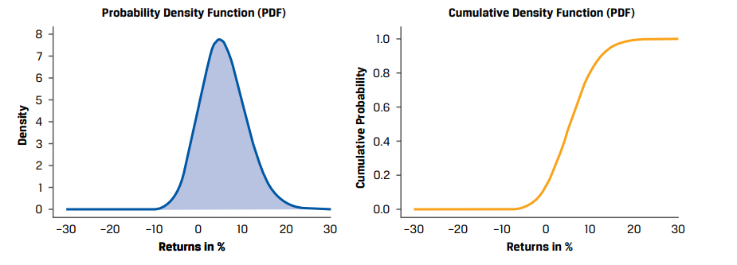
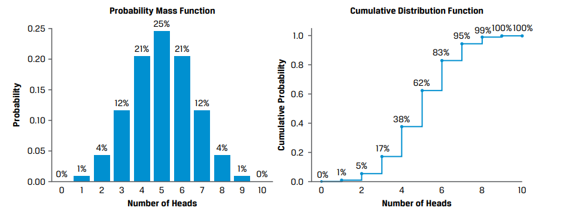
- Cumulative Distribution Function (CDF): Gives the probability that the random variable $X$ takes on a value less than or equal to $x$:
\begin{equation} F(x) = P(X \le x) \label{eq:cdf_def_m6} \end{equation}
The CDF is non-decreasing with $\lim_{x \to -\infty} F(x) = 0$ and $\lim_{x \to \infty} F(x) = 1$. The CDF applies to both discrete and continuous random variables.
- Probability Density Function (PDF): For continuous random variables, the PDF is the derivative of the CDF, representing the instantaneous rate of change of the CDF:
\begin{equation} f_X(x) = \frac{dF_X(x)}{dx} \label{eq:pdf_derivative_m6} \end{equation}
The probability that $X$ falls within an interval $[a, b]$ is the area under the PDF curve between $a$ and $b$:
\begin{equation} P(a \le X \le b) = \int_a^b f_X(x) dx = F(b) - F(a) \label{eq:pdf_probability_interval_m6} \end{equation}The total area under the PDF curve equals $1$:
\begin{equation} \int_{-\infty}^{\infty} f_X(x) dx = 1 \label{eq:pdf_total_area_m6} \end{equation} - Probability Mass Function (PMF): For discrete random variables, the PMF gives the probability that $X$ is exactly equal to a specific value $x$, $P(X=x)$. The probability that $X$ lies within $[a, b]$ is:
\begin{equation} P(a \le X \le b) = \sum_{x=a}^b P(X=x) \label{eq:pmf_probability_interval_m6} \end{equation}
The sum of probabilities for all possible outcomes equals $1$: $\sum_x P(X=x) = 1$.
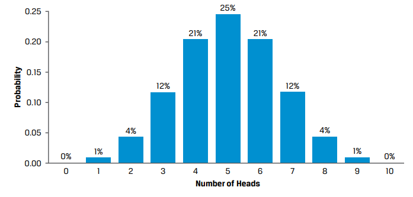
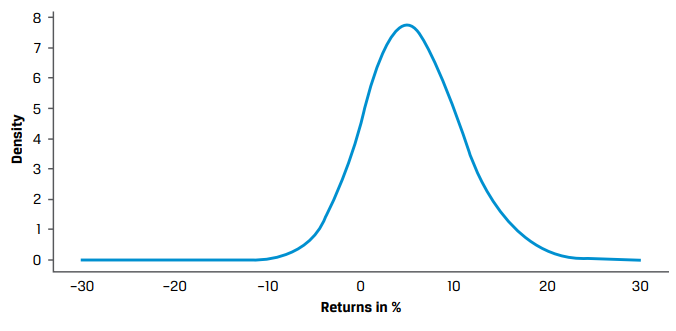
Unconditional Expectations, Variance, and Covariance
Unconditional expectations, variance, and covariance provide foundational tools for assessing the behavior of financial assets without requiring prior knowledge of specific market conditions.
- Unconditional Mean (Expected Value): The probability-weighted average of the outcomes of a random variable over an infinite number of trials:
\begin{equation} \text{Discrete: } \mu_X = E[X] = \sum_i x_i P(x_i) \label{eq:discrete_expected_value_m6} \end{equation}\begin{equation} \text{Continuous: } \mu_X = E[X] = \int_{-\infty}^{\infty} x f_X(x) dx \label{eq:continuous_expected_value_m6} \end{equation}
- Unconditional Variance: Measures the squared dispersion of a random variable around its mean:
\begin{equation} \sigma_X^2 = \text{Var}(X) = E[(X - E[X])^2] = E[X^2] - (E[X])^2 \label{eq:unconditional_variance_m6} \end{equation}LỜI GIẢI THÍCH CỦA GIẢNG VIÊNPhương sai $\text{Var}(X)$ (hay $\sigma^2$) đo lường mức độ biến động hoặc rủi ro của tài sản. Phương sai càng lớn nghĩa là giá trị thực tế càng dễ phân tán xa khỏi trung bình, đồng nghĩa với rủi ro càng cao.
- Unconditional Standard Deviation: $\sigma_X = \sqrt{\text{Var}(X)}$.
LỜI GIẢI THÍCH CỦA GIẢNG VIÊNĐộ lệch chuẩn đưa thước đo biến động về cùng đơn vị đo với biến gốc, giúp dễ so sánh trực tiếp.
- Unconditional Covariance: Quantifies the linear relationship between two random variables $X$ and $Y$:
\begin{equation} \sigma_{XY} = \text{Cov}(X, Y) = E[(X - E[X])(Y - E[Y])] = E[XY] - E[X]E[Y] \label{eq:unconditional_covariance_m6} \end{equation}
| Probability $P$ | Stock Return $X$ (%) | Bond Return $Y$ (%) |
|---|---|---|
| 0.2 | $-2.00$ | $0.75$ |
| 0.3 | $-1.00$ | $0.50$ |
| 0.3 | $0.00$ | $0.25$ |
| 0.2 | $1.00$ | $0.00$ |
Calculating variance:
Calculating covariance:
The negative covariance of $-0.2625$ indicates that stocks and bonds tend to move in opposite directions, providing significant diversification benefits for a portfolio.
The Law of Large Numbers (LLN)
The Law of Large Numbers states that as the number of trials (sample size) increases, the empirical sample mean converges to the true population parameter (unconditional mean), assuming the sample is randomly drawn and representative of the population.
6.2 Key Statistical Distributions in Finance
| b | calculate, interpret, and evaluate the principal moments of key statistical distributions used in finance |
|---|
| Uniform (Phân phối đều) | Non-Uniform (Phân phối không đều) | |
|---|---|---|
| Discrete | Discrete Uniform Distribution | Binomial Distribution |
| (Biến rời rạc) | - Mỗi kết quả có xác suất bằng nhau ($1/n$). | - Số lần thành công trong $n$ phép thử độc lập. |
| - Ví dụ: Gieo xúc xắc, tung đồng xu. | Poisson Distribution | |
| - Số sự kiện xảy ra trong một khoảng xác định. | ||
| Continuous | Continuous Uniform Distribution | Normal Distribution (Đối xứng, hình chuông) |
| (Biến liên tục) | - Hàm mật độ không đổi $f(x) = \frac{1}{b-a}$. | Log-normal Distribution (Chặn dưới bởi 0, lệch phải) |
| - Ví dụ: Chọn ngẫu nhiên số trong $[0, 1]$. | Logistic Distribution (Đối xứng, đuôi dày hơn Normal) |
Discrete Statistical Distributions
Discrete Uniform Distribution
A discrete uniform distribution consists of a finite number of equally spaced outcomes, each with equal probability of occurrence. For a variable $X$ taking $n$ outcomes in the range $[a, b]$, each outcome occurs with probability $\frac{1}{n}$.
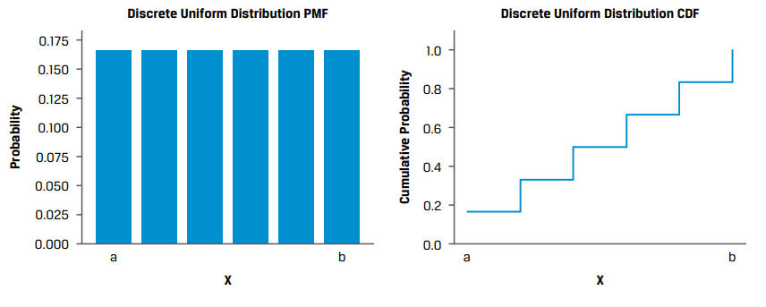
Binomial Distribution
The binomial distribution models the number of successes in a fixed number $n$ of independent Bernoulli trials, where each trial has a success probability $p$ and a failure probability $q = 1-p$. The probability of observing exactly $x$ successes is:
The mean and variance are:
Chứng minh công thức PMF, kỳ vọng, phương sai xem thêm phần (Appendix B.2: Binomial Distribution)
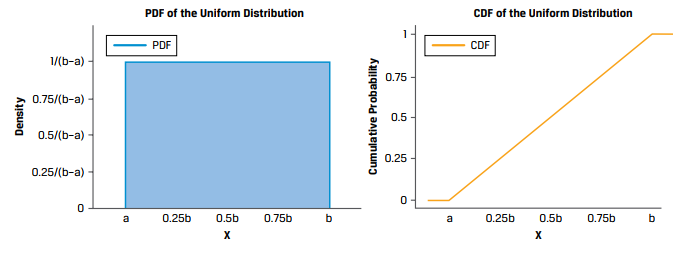
If $n$ is large, the binomial distribution can be approximated by a normal distribution:
This approximation is generally valid when both $np \ge 5$ and $n(1-p) \ge 5$.
Poisson Distribution
The Poisson distribution models the number of independent events occurring in a fixed interval of time or space at a constant average rate $\lambda$. The probability of observing $k$ events is:
The mean and variance of a Poisson distribution are identical:
Its skewness is $\frac{1}{\sqrt{\lambda}}$ and excess kurtosis is $\frac{1}{\lambda}$.
Chứng minh công thức PMF, kỳ vọng, phương sai xem thêm phần (Appendix B.3: Poisson Distribution)
- Probability of no default over time $t$: $P(\text{No default}) = e^{-\lambda t}$
- Probability of default over time $t$: $P(\text{Default}) = 1 - e^{-\lambda t}$
- Expected time to first default: $E[t_d] = \frac{1}{\lambda}$
- Probability of default within 1 year: $P(\text{Default}) = 1 - e^{-0.02 \times 1} \approx 1.98\%$
- Probability of no default within 1 year: $P(\text{No default}) = e^{-0.02 \times 1} \approx 98.02\%$
- Expected time until first default: $E[t_d] = \frac{1}{0.02} = 50 \text{ years}$
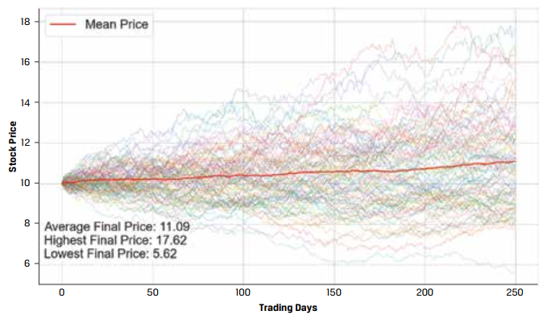
Continuous Statistical Distributions
Continuous Uniform Distribution
The continuous uniform distribution is defined over an interval $[a, b]$, where any value within this interval is equally likely to occur.
Its skewness is $0$ and kurtosis is $1.8$.
Chứng minh công thức kỳ vọng, phương sai xem thêm phần (Appendix B.4: Continuous Uniform Distribution)

Continuous uniform distributions are key to generating Monte Carlo simulations. To simulate any continuous distribution, we first draw random numbers from a standard uniform distribution $U \sim [0, 1]$ and then map them to the target distribution using the inverse CDF method.
where $\mu$ is drift, $\sigma$ is volatility, and $W_t$ is Brownian motion (normally distributed noise). To simulate a single daily step ($t = 1/250$):
- Draw a uniform random value from $[0, 1]$, say $U = 0.07$.
- Convert it into a standard normal value: using the inverse standard normal CDF, $\Phi^{-1}(0.07) \approx -1.48$.
- Substitute $W_t = -1.48$ into the formula to compute the next stock price $S_1$.
Normal Distribution
The normal distribution, or Gaussian distribution, is fully defined by its mean $\mu$ and variance $\sigma^2$, denoted as $N(\mu, \sigma^2)$. It has a symmetrical bell shape where Mean = Median = Mode. Its skewness is $0$, kurtosis is $3$, and excess kurtosis is $0$.
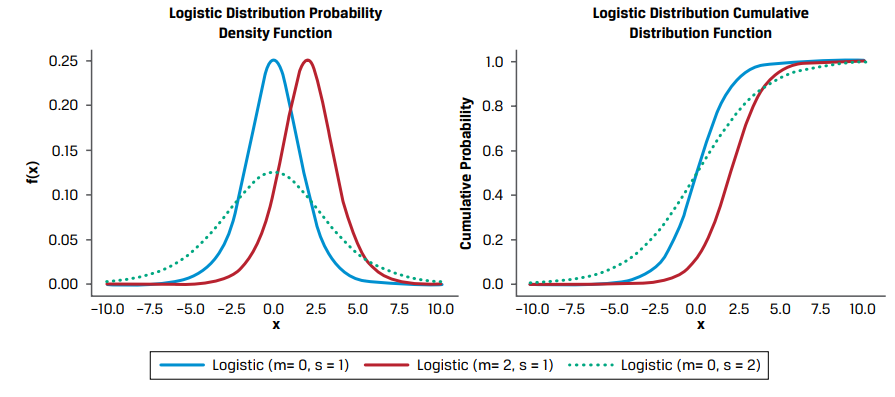
A standard normal distribution has $\mu = 0$ and $\sigma^2 = 1$. Z-scores standardize any normal variable: $Z = \frac{X - \mu}{\sigma}$. Key probability intervals (Empirical Rule):
- $\mu \pm 1\sigma$ contains approximately $68\%$ of the observations.
- $\mu \pm 1.96\sigma$ contains approximately $95\%$ of the observations (often rounded to $\mu \pm 2\sigma$).
- $\mu \pm 2.58\sigma$ contains approximately $99\%$ of the observations.
Log-Normal Distribution
A random variable $Y$ is log-normally distributed if $X = \ln(Y)$ is normally distributed. Because $Y = e^X$, log-normal variables can only take strictly positive values ($Y > 0$). The distribution is right-skewed.
The expected future price is $S_1 = e^{4.6652} = 106.19$.
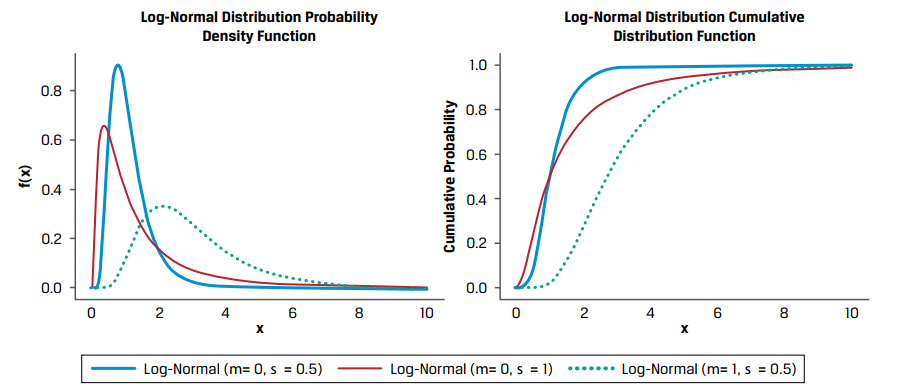
Logistic Distribution
The logistic distribution is a continuous distribution defined by location $\mu$ and scale $s$. It resembles the normal distribution but has fatter tails.
Its skewness is $0$, kurtosis is $4.2$, and excess kurtosis is $1.2$. The logistic distribution is widely used in logistic regression to predict binary outcomes in finance (e.g., probability of default).

Practical Implementation
Table 9 summarizes the Excel and Google Sheets formulas used to compute these distributions in practice.
| Distribution Function | Excel Formula | Google Sheets Formula |
|---|---|---|
| Uniform CDF | BETA.DIST((x-a)/(b-a),1,1,TRUE) | BETA.DIST((x-a)/(b-a),1,1,TRUE) |
| Uniform Random Draw | =RAND()*(b-a)+a | =RAND()*(b-a)+a |
| Binomial PMF | =BINOM.DIST(x, n, p, FALSE) | =BINOM.DIST(x, n, p, FALSE) |
| Binomial CDF | =BINOM.DIST(x, n, p, TRUE) | =BINOM.DIST(x, n, p, TRUE) |
| Poisson PMF | =POISSON.DIST(x, lambda, FALSE) | =POISSON.DIST(x, lambda, FALSE) |
| Normal PDF | =NORM.DIST(x, mean, sd, FALSE) | =NORM.DIST(x, mean, sd, FALSE) |
| Normal Random Draw | =NORM.INV(RAND(), mean, sd) | =NORMINV(RAND(), mean, sd) |
| Log-normal CDF | =LOGNORM.DIST(x, mean, sd, TRUE) | =LOGNORM.DIST(x, mean, sd, TRUE) |
6.3 Conditional Expectations, Variances, and Covariances
| c | calculate, interpret, and evaluate conditional expectations, variances, and covariances |
|---|
Joint Distributions of Random Variables
Joint distributions allow for examining the simultaneous distribution of two random variables. The bivariate cumulative distribution function (CDF) is defined as:
For continuous variables, the joint CDF is obtained by integrating the joint PDF $f_{12}(u_1, u_2)$:
If the variables are independent:
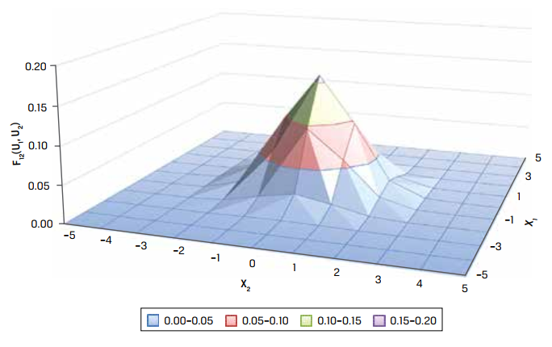
The marginal density is the probability distribution of a single variable within a multivariate distribution. It is obtained by integrating out the other variables:
For discrete variables, joint and marginal distributions are summarized in contingency tables.
| Rate of Return $R$ | Non-Technology | Technology | Total |
|---|---|---|---|
| $R > 10\%$ | 100 | 60 | 160 |
| $R \le 10\%$ | 300 | 40 | 340 |
| Total | 400 | 100 | 500 |
Conditional Expectations
The conditional expectation $E[X | Y=y]$ is the expected value of $X$ given that $Y$ takes on the value $y$:
The expected conditional variance is:
The Total Probability Rule for Expected Value states:
where $S_1, S_2, \dots, S_n$ are mutually exclusive and exhaustive scenarios.
- Depression: $-25\%$ return (prob $50\%$), $-10\%$ return (prob $25\%$), $-5\%$ return (prob $15\%$), $0\%$ return (prob $10\%$).
- Recession: $-5\%$ return (prob $30\%$), $0\%$ return (prob $30\%$), $5\%$ return (prob $30\%$), $15\%$ return (prob $10\%$).
- Expansion: $50\%$ return (prob $40\%$), $10\%$ return (prob $25\%$), $15\%$ return (prob $25\%$), $25\%$ return (prob $10\%$).
If scenarios are equally likely, the unconditional expected return is:
The unconditional variance is computed using the Law of Total Variance:
where:
Do đó, phương sai vô điều kiện của danh mục là:
Đính chính Errata trong sách CFA Curriculum 2027 gốc:
1. Phát hiện lỗi: Trong giáo trình CFA Curriculum, phương sai của các kỳ vọng có điều kiện $\text{Var}(E[R|S])$ đã bỏ quên dấu âm của kịch bản Depression (nhập nhầm $\mathbf{+0.1575}$ thay vì $\mathbf{-0.1575}$ trong phép trừ với $E[R] = 0.048333$), dẫn đến kết quả bị sai thành:
2. Phép tính chuẩn xác (giữ đúng dấu âm $-15.75\%$):
3. Phương sai vô điều kiện theo Law of Total Variance:
Xem thêm về Law of Total Variance tại phần (Appendix B.6: Law of Total Variance)
Conditional Means, Variances, and Covariances
Incorporating conditioning information updates expected values:
- Conditional Mean: $E[X|S] = \sum_{i=1}^n x_i P(X_i|S)$
- Conditional Variance: $\text{Var}(X|S) = E[(X - E[X|S])^2 | S]$
- Conditional Covariance:
\begin{equation} \text{Cov}(X, Y | S) = E[(X - E[X|S])(Y - E[Y|S]) | S] \label{eq:conditional_covariance_formula_m6} \end{equation}
- $P_3 = 130$ (prob $0.6^3 = 0.216$)
- $P_3 = 110$ (prob $3 \times 0.6^2 \times 0.4 = 0.432$)
- $P_3 = 90$ (prob $3 \times 0.6 \times 0.4^2 = 0.288$)
- $P_3 = 70$ (prob $0.4^3 = 0.064$)
The unconditional variance is:
Suppose at Time 1, the price is observed to be $110$ ($P_1 = 110$, Figure 38). The conditional probabilities for Time 3 update to:
- $P_3 = 130$ (prob $0.6^2 = 0.36$)
- $P_3 = 110$ (prob $2 \times 0.6 \times 0.4 = 0.48$)
- $P_3 = 90$ (prob $0.4^2 = 0.16$)
The conditional variance is:
Suppose at Time 2, the price is $100$ ($P_2 = 100$, Figure 39). The conditional statistics update to:
Table 11 summarizes the updates:
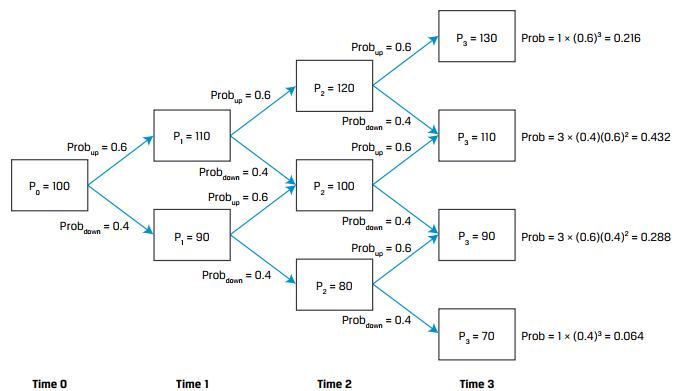
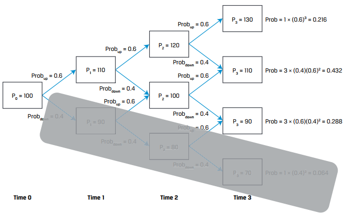
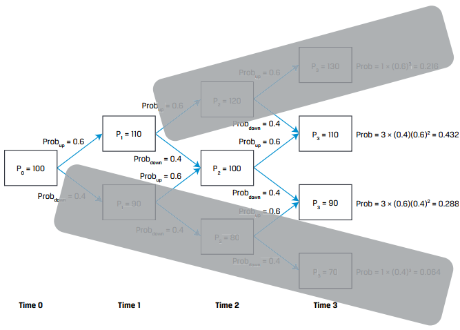
| Conditionality | Expected Price | Variance |
|---|---|---|
| Unconditional | 106 | 288 |
| Conditional on $P_1 = 110$ | 114 | 192 |
| Conditional on $P_2 = 100$ | 102 | 96 |
6.4 Bayesian Updating
| d | formulate investment problems through Bayesian updating |
|---|
Bayes' theorem provides a formal framework for updating the probability of a hypothesis (prior probability) in light of additional data or evidence to form an updated probability (posterior probability).
- A Priori Probability (Prior): The probability of an event formulated before new data is considered.
- A Posteriori Probability (Posterior): The updated probability of the event after incorporating new observations.
Bayes' formula is stated as:
where:
- $P(A|B)$ is the posterior probability of $A$ occurring given $B$ is true.
- $P(B|A)$ is the likelihood of observing $B$ given $A$ is true.
- $P(A)$ is the prior probability of $A$.
- $P(B)$ is the marginal probability of observing $B$, computed using the total probability rule:
\begin{equation} P(B) = \sum_i P(B|A_i) \times P(A_i) \label{eq:total_prob_denominator_m6} \end{equation}
- Bước 1 - Xác định thông tin ban đầu (Prior & Likelihood): Xác định xác suất tiên nghiệm của các kịch bản $P(A_i)$ và xác suất có điều kiện xảy ra thông tin mới trong từng kịch bản $P(B|A_i)$.
- Bước 2 - Tính xác suất toàn phần (Total Probability): Tính tổng xác suất xảy ra thông tin mới $P(B) = \sum P(B|A_i) P(A_i)$. Đây chính là mẫu số trong công thức Bayes.
- Bước 3 - Tính xác suất hậu nghiệm (Posterior): Lấy xác suất đồng thời của kịch bản mục tiêu chia cho xác suất toàn phần: $P(A_i|B) = \frac{P(B|A_i) P(A_i)}{P(B)}$.
- $P(\text{Tech}) = 0.20$ and $P(\text{Non-tech}) = 0.80$
- $P(R > 10\% | \text{Tech}) = 0.60$ and $P(R > 10\% | \text{Non-tech}) = 0.25$
Using Bayes' formula, the probability that a firm is a technology company given its return exceeds $10\%$ is:
This represents an increase from the unconditional prior probability of $20\%$.
- $P(\text{Exceeded Consensus}) = 0.45$
- $P(\text{Met Consensus}) = 0.30$
- $P(\text{Fell Short}) = 0.25$
- $P(\text{Sustainability Announcement} | \text{Exceeded}) = 0.75$
- $P(\text{Sustainability Announcement} | \text{Met}) = 0.20$
- $P(\text{Sustainability Announcement} | \text{Fell Short}) = 0.05$
We update the probabilities using Bayes' formula:
Note that the updated posterior probabilities sum to exactly $1.0000$:
| Kịch bản ($A_i$) | Prior $P(A_i)$ | Likelihood $P(B|A_i)$ | Joint Probability $P(B \cap A_i)$ | Posterior $P(A_i|B)$ |
|---|---|---|---|---|
| Exceeded Consensus | 0.45 | 0.75 | 0.3375 | 82.32% |
| Met Consensus | 0.30 | 0.20 | 0.0600 | 14.63% |
| Fell Short | 0.25 | 0.05 | 0.0125 | 3.05% |
| Tổng | 1.00 | $P(\text{Sustainability}) = 0.4100$ | 100.00% |
Estimation and Hypothesis Testing
| LEARNING OUTCOMES | |
|---|---|
| a | explain the central limit theorem and the application of confidence intervals and sampling methodologies |
| b | explain hypothesis testing and its components, including statistical significance, Type I and Type II errors, and the power of a test; construct appropriate hypothesis tests; and interpret the results |
| c | compare and contrast parametric and non-parametric tests, describe situations in which each is the more appropriate type of test, construct appropriate hypothesis tests, and interpret the results |
7.1 The Central Limit Theorem, Confidence Intervals, and Sampling
| a | explain the central limit theorem and the application of confidence intervals and sampling methodologies |
|---|
Sampling Methodologies
To extract information about a population, two sampling approaches can be used:
- Probability Sampling: Every member of the population has an equal chance of selection.
- Simple random sampling: each member of population has same probability of being included in sample.
- Systematic sampling: every $k^{th}$ member in the population list is selected.
- Stratification: the process of grouping members of the population into relatively homogeneous subgroups, or strata, before drawing samples. Strata should be mutually exclusive and collectively exhaustive.
- Cluster sampling: requires the division or classification of the population into subpopulation groups, called clusters. A major difference between cluster and stratified random samples is that in cluster sampling, a whole cluster is regarded as a sampling unit and only sampled clusters are included.
- Non-Probability Sampling: depends on factors other than probability considerations, such as a sampler's judgment or the convenience to access data.
- Convenience Sampling: an element is selected from the population based on whether or not it is accessible to a researcher or on how easy it is for a researcher to access the element.
- Judgmental Sampling: This sampling process involves selectively handpicking elements from the population based on a researcher’s knowledge and professional judgment. Ex: when auditing financial statements, seasoned auditors can apply their sound judgment to select accounts or transactions that can provide sufficient audit coverage.
▸ Sampling Error
Sampling error of the mean = Sample mean $-$ Population mean = $\overline{x}-\mu$
▸ Sampling Distribution
The probability distribution of a given sample statistic under repeated sampling of the population.

The Central Limit Theorem (CLT)
[chú thích] The law of large numbers provides context for using the sample mean, $\bar{X}$, to estimate the population mean, $\mu$. The central limit theorem (CLT) is a fundamental concept in statistics. It states that if random samples are taken from any distribution with a finite mean $\mu$ and finite variance $\sigma^2$, then the sample means, $\bar{X}$, will converge to a normal distribution as the sample size $n$ increases. Specifically:
- The expected value of the sample mean is equal to the population mean:
\begin{equation} E[\bar{X}] = \mu \label{eq:clt_mean_m7} \end{equation}
- The variance of the sampling distribution is:
\begin{equation} \sigma_{\bar{X}}^2 = \frac{\sigma^2}{n} \label{eq:clt_variance_m7} \end{equation}
- The standard error of the sample mean (the standard deviation of the sample mean) is:
\begin{equation} \sigma_{\bar{X}} = \frac{\sigma}{\sqrt{n}} \quad \text{or} \quad s_{\bar{X}} = \frac{s}{\sqrt{n}} \label{eq:clt_standard_error_m7} \end{equation}
For symmetric and unimodal distributions, a sample size as small as 4 or 5 might provide an adequate normal approximation. For skewed distributions, a sample size of at least 25--30 is typically necessary, whereas extremely skewed distributions may require even larger sample sizes. An estimator $\hat{\theta}$ is:
- Unbiased if $E[\hat{\theta}] = \theta$. The sample mean is an unbiased estimator of the population mean ($E[\bar{X}] = \mu$).
- Efficient if it has the smallest possible standard error among all unbiased estimators. A minimum-variance unbiased estimator (MVUE) is both unbiased and efficient. The best linear unbiased estimator (BLUE) is both unbiased and maximally efficient among all linear estimators.
- Consistent if it converges to the true parameter value as the sample size increases. The sample mean $\bar{X}$ is a consistent estimator.
- Robust if it provides accurate parameter estimates even when the data include outliers or violate distribution assumptions (e.g., using trimmed means).
Confidence Intervals
Confidence intervals are probabilistic ranges that are likely to contain the true parameter value with a specified level of confidence ($1 - \alpha$). For large sample sizes, the confidence interval for the population mean $\mu$ is:
Where $Z_{\alpha/2}$ is the critical Z-score from the normal distribution, and $\sigma/\sqrt{n}$ is the standard error. The margin of error, $Z_{\alpha/2} \times \sigma/\sqrt{n}$, defines the range within which the true population parameter is expected, with a certain level of confidence, to fall on each side of the sample mean. Figure 41 illustrates the normal distribution curve and confidence intervals.
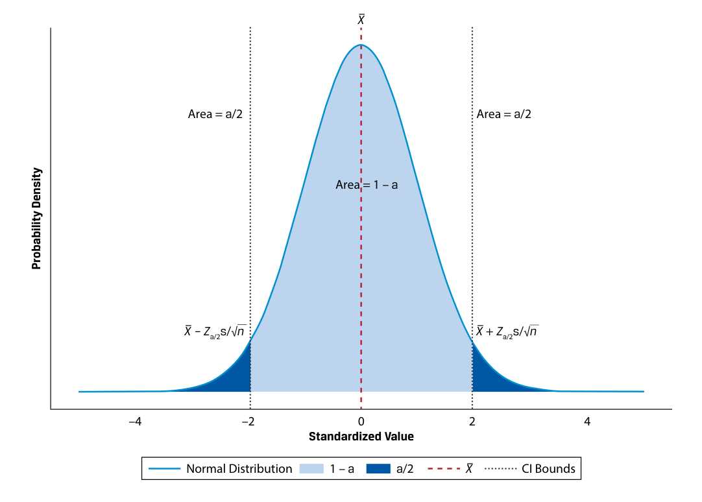
The margin of error, $Z_{\alpha/2} \times \frac{\sigma}{\sqrt{n}}$, is the half-width of the confidence interval. The two most frequently used confidence intervals are:
- 90% Confidence Interval: $Z_{0.005} = 1.645$, leaving 0.5% in each tail.
- 95% Confidence Interval: $Z_{0.025} = 1.9600$, leaving 2.5% in each tail.
- 99% Confidence Interval: $Z_{0.005} = 2.5760$, leaving 0.5% in each tail.
- $P(\text{Loss} > \text{VaR}) = \alpha$
- $P(\text{Loss} \le \text{VaR}) = 1 - \alpha$
Where $Z_{\alpha}$ corresponds to the one-sided percentile (e.g., $1.65$ for 95%, $2.33$ for 99%), $\sigma$ is standard deviation, and $P$ is the current position value.
7.2 Process of Hypothesis Testing
| b | explain hypothesis testing and its components, including statistical significance, Type I and Type II errors, and the power of a test; construct appropriate hypothesis tests; and interpret the results |
|---|
▸ Hypothesis testing
is the process of evaluating the accuracy of a statement regarding a population parameter (e.g., the population mean) given sample information (e.g., the sample mean).

Stating the Hypothesis
▸ Hypothesis
is a statement about the value of a population parameter developed for the purpose of testing a theory.
- The null hypothesis ($H_o$) generally represents the status quo and is the hypothesis that we are interested in rejecting. The null hypothesis will always include an "$=$" sign.
- Alternate hypothesis ($H_a$) is essentially the statement whose validity we are trying to evaluate. The alternate hypothesis is the statement that will only be accepted if the sample data provides convincing evidence of its truth. It is the conclusion of the test if the null hypothesis is rejected.
| Hypothesis statements | |
|---|---|
| $H_o: \mu = \mu_0$ | $H_a: \mu \neq \mu_0$ |
| $H_o: \mu \leq \mu_0$ | $H_a: \mu > \mu_0$ |
| $H_o: \mu \geq \mu_0$ | $H_a: \mu < \mu_0$ |
| $\mu = $ population mean | |
| $\mu_0 = $ hypothesized value of the population mean | |
Identify Appropriate Test Statistic and Distribution
Essentially, a hypothesis test involves the comparison of a sample's test statistic to a critical value.
▸ Test statistic
is calculated as:
▸ Critical value
depends on the relevent distribution, sample size and level of significance ($\alpha$) used to test.
| What we want to Test | Test Statistic | Probability Distribution | Degree of Freedom |
|---|---|---|---|
| Test of a single mean | $t = \displaystyle \frac{\overline{X}-\mu_0}{s/\sqrt{n}}$ | t-Distributed | $n-1$ |
| Test of the difference in means | $t = \displaystyle \frac{(\overline{X}_1-\overline{X}_2)-(\mu_1-\mu_2)}{\sqrt{\displaystyle \frac{s^2_p}{n_1}+\frac{s^2_p}{n_2}}}$ | t-Distributed | $n_1+n_2-2$ |
| Test of the mean of differences | $t = \displaystyle \frac{\overline{d}-\mu_{d0}}{s_{\overline{d}}}$ | t-Distributed | $n-1$ |
| Test of a single variance | $\chi^2 = \displaystyle \frac{s^2(n-1)}{\sigma^2_0}$ | Chi-square distributed | $n-1$ |
| Test of the difference in variances | $F = \displaystyle \frac{s^2_1}{s^2_2}$ | F-distributed | $n_1-1, n_2-1$ |
| Test of a correlation | $t = \displaystyle \frac{r \sqrt{n-2}}{\sqrt{1-r^2}}$ | t-Distributed | $n-2$ |
| Test of independence (categorical data) | $\chi^2 = \displaystyle \sum_{i=1}^{m}\frac{(O_{ij}-E_{ij})^2}{E_{iji}}$ | Chi-square distributed | $(r-1)(c-1)$ |
▸ Note
$\mu_0$, $\mu_{d0}$ and $\sigma^2_0$ denote hypothesized values of the mean, mean difference, and variance, respectively. The $\overline{X}$, $\overline{d}$, $s^2$, $s$, and $r$ denote for a sample mean, mean of the differences, variance, standard deviation, and correlation, respectively, with subscripts indicating the sample, if appropriate. The sample size is indicated as $n$, and the subscript indicates the sampple, if appropriate. $O_{ij}$, $E_{ij}$ are observed and expected frequencies, respectively, with $r$ indicating number of rows and $c$ indicating number of columns in the contingency table.
Specify the Level of Significance
▸ Level of significance
($\alpha$) represents the chance that we are willing to take that the conclusion from the test might be wrong.
▸ Type I and Type II Errors
- Type I error: Rejecting the null hypothesis when it is actually true.
- Type II error: Failing to reject the null hypothesis when it is actually false.
| Decision | $H_o$ is True | $H_o$ is False |
|---|---|---|
| Do not reject $H_o$ | Correct decision | Incorrect decision |
| Type II error | ||
| Reject $H_o$ | Incorrect decision | Correct decision |
| Type I error | ||
| Significance level = P(Type I error) | Power of the test = 1 $-$ P(Type II error) |
The significance level ($\alpha$) represents the probability of making a Type I error.
If we were to fail to reject the null hypothesis given the lack of overwhelming evidence in favor of the alternate, we risk a Type II error - failing to reject the null hypothesis when it is false.
The power of a test is the probability of correctly rejecting the null hypothesis when it is false.
- The higher the power of the test, the better it is for purposes of hypothesis testing.
- The only way to decrease the probability of a Type II error given the significance level (probability of Type I error) is to increase the sample size.
State the Decision Rule
One-sided versus Two-sided Tests
- Two-sided Tests
- One-sided Tests
Decision Rule
- The action we take is based on comparing the calculated test statistic with a specified value or values, which we refer to as critical values.
- The critical value or values we choose are based on the level of significance and the probability distribution associated with the test statistic.
- If we find that the calculated value of the test statistic is more extreme than the critical value or values, then we reject the null hypothesis; we say the result is statistically significant.
Relation Between Confidence Intervals and Hypothesis Tests
Confidence intervals and hypothesis test are linked by critical values:
- In a confidence interval, we aim to determine whether the hypothesized value of the population mean ($\mu_0$), lies within a computed interval with a particular degree of confidence ($1-\alpha$). Here the interval represents the "fail-to-reject-the-null region" and is based around, or centered on the sample mean, $\overline{X}$
- In a hypothesis test, we examine whether the sample mean, $\overline{X}$ lies in the rejection region (i.e., outside the interval) or in the fail-to-reject-the-null region (i.e., within the interval) at a particular level of significance ($\alpha$). Here the interval is based around or centered on the hypothesized value of the population mean ($\mu_0$).
P-value
The p-value is the smallest level of significance at which the null hypothesis can be rejected.
- If the p-value is lower than the required level of significance, we reject the null hypothesis.
- If the p-value is greater than the required level of significance, we fail to reject the null hypothesis.
▸ P-Hacking and Data Dredging
P-hacking (also known as data dredging, data mining, or specification searching) refers to the practice of manipulating data analysis, testing multiple models, or trying various sample specifications until a statistically significant result ($p\text{-value} < \alpha$) is obtained, and reporting only those favorable results.
Key Mechanisms of P-Hacking:
- Specification Searching: Running multiple model variations (altering variables, functional forms, or lag structures) and reporting only the model yielding $p < 0.05$.
- Selective Sample Trimming: Arbitrarily removing or retaining outliers and sub-sample periods to force statistical significance.
- Cherry-picking / Publication Bias: Publishing or presenting only statistically significant findings while ignoring non-significant results (the "file-drawer problem").
- HARKing (Hypothesizing After Results are Known): Formulating hypotheses after observing the data results and presenting them as if they were pre-planned predictions.
Statistical Consequences of Multiple Testing: When conducting $k$ independent tests at a significance level $\alpha$, the probability of committing at least one Type I error (false positive) across all tests is:
For example, if an analyst tests 20 independent trading strategies at $\alpha = 0.05$:
Thus, without correcting for multiple comparisons, finding a "statistically significant" strategy is highly likely due to pure randomness rather than true market predictability.
Mitigation Strategies: To ensure research integrity and avoid p-hacking:
- Pre-Registration: Documenting hypotheses, sample choices, and testing methods prior to inspecting the data.
- Out-of-Sample Testing: Validating the selected model on new, independent data periods.
- Adjusting P-Values: Applying multiple testing corrections such as the Bonferroni adjustment ($\alpha_{adj} = \alpha/k$) or controlling the False Discovery Rate (FDR).
7.3 Parametric Testing
| c | compare and contrast parametric and non-parametric tests, describe situations in which each is the more appropriate type of test, construct appropriate hypothesis tests, and interpret the results |
|---|
Test of a Single Mean
To test hypotheses about a single population mean, the hypotheses are structured as follows:
When the population standard deviation ($\sigma$) is unknown, the $t$-test statistic with $n - 1$ degrees of freedom is computed as:
Test of Paired Differences (Dependent Samples)
When the samples of the two populations whose means we are comparing are dependent,
the paired comparisons test is used.
Dependence can result from events that affect both populations.
Remember that to conduct a paired comparisons test, the populations must be normally distributed.
The hypotheses are structured as follows:
For the paired comparisons test, the t-stat with $n - 1$ degrees of freedom is computed as:
Test of Equality of Two Unknown Means (Independent Samples)
When testing whether the means of two independent populations are equal, the hypotheses are structured as follows:
Assuming equal population variances ($\sigma_1^2 = \sigma_2^2$), the pooled $t$-test statistic with $n_1 + n_2 - 2$ degrees of freedom is computed as:
Test of a Single Variance
To test hypotheses concerning the variance of a single normally distributed population, the hypotheses are structured as follows:
The Chi-square ($\chi^2$) test statistic with $n - 1$ degrees of freedom is computed as:
Test Concerning the Equality of Two Variances
Hypotheses related to the equality of the variance of two populations are tested with an F-test. This test is used under the assumptions that:
- The populations from which samples are drawn are normally distributed.
- The samples are independent.
▸ One-tailed tests
▸ Two-tailed tests
The test statistic for the F-test is given by:
Note: Always put the larger variance in the numerator when calculating the F-test statistic.
Also note that the F-stat is simply the ratio of the two samples' variances.
Features of the F-distribution:
- It is skewed to the right.
- It is bounded by zero on the left.
- It is defined by two separate degrees of freedom.
Parametric Test of a Correlation
The parametric pairwise correlation coefficient is often referred to as Pearson correlation, the bivariate correlation, or simply the correlation.
Note: This would be a two-tailed t-test with n - 2 degrees of freedom.
The decision rule for the test is that we reject $H_o$ if $t-stat > +t_{critical}$ or if $t-stat < -t_{critical}$.
7.4 Non-Parametric Test
Non-Parametric Test of Correlation
▸ Spearman rank correlation coefficient
is a non-parametric test that is calculated based on the ranks of two variables within their respective data sets.
It lies between -1 and +1 where -1 (+1) denotes a perfectly inverse (positive) relationship between the ranks of the two variables, and 0 represents no correlation.
With n as the sample size, the Spearman rank correlation is given by
Often the results of parametric and non-parametric tests are both presented.
This allows the reader to gauge how sensitive the conclusions are to the assumptions underlying the parametric tests.
If the assumptions made under the parametric test are met, the use of parametric tests is preferred because they usually offer more crisp and reliable conclusions.
Ta lần lượt sử dụng các đẳng thức sau đây:
Suy ra:
Tests of Independence Using Contingency Table Data
When evaluating whether two categorical variables are independent using contingency table data, the hypotheses are structured as follows:
Example: If we want to test whether there is a relationship between the size and investment type,
| Size based on Market Capitalization | ||||
|---|---|---|---|---|
| Investment Type | Small | Medium | Large | Total |
| Value | 50 | 110 | 343 | 503 |
| Growth | 42 | 122 | 202 | 366 |
| Blend | 56 | 149 | 520 | 725 |
| Total | 148 | 381 | 1,065 | 1,594 |
7.5 Parametric and Nonparametric tests
▸ parametric test
has at least one of the following two characteristics:
- It is concerned with parameters or defining features of a distribution.
- It makes a definite set of assumptions.
▸ non-parametric test
is not concerned with a parameter and makes only a minimal set of assumptions regarding the population. Non-parametric tests are used when:
- The researcher is concerned about quantities other than the parameters of the distribution.
- The assumptions made by parametric tests cannot be supported.
- When the data available is ranked (ordinal measurement scale). For example, non-parametric methods are widely used for studying populations such as movie reviews, which receive one to five stars based on people's preferences.
- when the data do not meet distributional assumptions,
- when there are outliers,
- when the data are given in ranks or use an ordinal scale, or
- when the relevant hypotheses do not concern a parameter.
| Parametric | Nonparametric | |
|---|---|---|
| Tests concerning a single mean | t-test | Wilcoxon signed-rank test |
| z-test | ||
| Tests concerning differences | t-test | Mann-Whitney U test |
| between means | approximate t-test | |
| Tests concerning mean differences | t-test | Wilcoxon signed-rank test |
| (paired comparisons tests) | Sign test |
The Return and Risk of a Financial Portfolio
| LEARNING OUTCOMES | |
|---|---|
| a | calculate, interpret, and evaluate the expected return, variance, standard deviation, covariance, and correlation of portfolio returns |
| b | describe, calculate, and interpret the minimum-variance portfolio and portfolios that lie on the efficient frontier |
| c | explain the selection of an optimal portfolio, given an investor's risk aversion and the capital allocation line, and how this extends to the market portfolio and the capital market line |
8.1 Calculating Portfolio Statistics
| a | calculate, interpret, and evaluate the expected return, variance, standard deviation, covariance, and correlation of portfolio returns |
|---|
Returns of a Portfolio
The return of a portfolio is the weighted average of the returns of its individual assets. Historical portfolio returns are calculated by summing the products of the beginning-of-period asset weights and their corresponding realized returns:
where $N$ is the number of assets, $w_{i,t-1}$ is the weight of asset $i$ at the end of period $t-1$ (beginning of period $t$), and $R_{i,t}$ is the realized return of asset $i$ in period $t$, defined as:
To evaluate returns over multiple periods from $t=1$ to $T$, if the weights are held constant at their initial values $w_{i,0}$ (which implies continuous rebalancing), the aggregate portfolio return is:
where $R_{i,T}$ is the cumulative return of asset $i$ over the entire period $T$. The arithmetic average return of the portfolio across these periods is:
When compounding returns over multiple periods without rebalancing, the asset weights will naturally shift as a result of varying asset performance. This phenomenon is known as portfolio drift. The cumulative return over $T$ periods with drifting weights is:
The geometric average return, or geometric return, is defined as:
Style drift: where the portfolio deviates from its original investment strategy. Style drift can occur even without portfolio drift when asset characteristics change over time. For instance, a small-capitalization company may grow into a large-capitalization company. In some cases, portfolio drift may offset style drift, helping maintain the intended strategy.
| Period | Asset A Return ($R_{A,t}$) | Asset B Return ($R_{B,t}$) |
|---|---|---|
| 1 | $+20\%$ | $+5\%$ |
| 2 | $-10\%$ | $+15\%$ |
| 3 | $+25\%$ | $-5\%$ |
- Period 1:
- Portfolio return: $R_{P,1} = 0.5(20\%) + 0.5(5\%) = 12.5\%$.
- Ending value: Asset A = EUR $1.20$; Asset B = EUR $1.05$. Total value = EUR 2.25.
- Ending weights for Period 2: $w_{A,1} = \frac{1.20}{2.25} \approx 53.33\%$; $w_{B,1} = \frac{1.05}{2.25} \approx 46.67\%$.
- Period 2:
- Portfolio return: $R_{P,2} = 0.5333(-10\%) + 0.4667(15\%) = 1.67\%$.
- Ending value: Asset A = EUR $1.08$; Asset B = EUR $1.2075$. Total value = EUR 2.2875.
- Ending weights for Period 3: $w_{A,2} = \frac{1.08}{2.2875} \approx 47.21\%$; $w_{B,2} = \frac{1.2075}{2.2875} \approx 52.79\%$.
- Period 3:
- Portfolio return: $R_{P,3} = 0.4721(25\%) + 0.5279(-5\%) = 9.16\%$.
- Ending value: Asset A = EUR $1.35$; Asset B = EUR $1.1471$. Total value = EUR 2.4971.
- Ending weights: $w_{A,3} = \frac{1.35}{2.4971} \approx 54.06\%$; $w_{B,3} = \frac{1.1471}{2.4971} \approx 45.94\%$.
- Cumulative Returns:
- Cumulative arithmetic return: $R_{P,T} = R_{P,1} + R_{P,2} + R_{P,3} = 12.5\% + 1.67\% + 9.16\% = 23.33\%$.
- Arithmetic average return: $\bar{R}_P = \frac{23.33\%}{3} \approx 7.78\%$.
- Cumulative geometric return: $R_{P,T} = (1.125 \times 1.0167 \times 1.0916) - 1 \approx 24.86\%$.
- Geometric average return: $\bar{R}_{g,P} = (1.125 \times 1.0167 \times 1.0916)^{\frac{1}{3}} - 1 \approx 7.68\%$.
| Weighting Method | Impact of Drift | Resulting Portfolio Behavior |
|---|---|---|
| Equal-Weighted | Weights drift as top performers grow larger | Potential bias toward high growth and higher-volatility assets |
| Non-Equally Weighted | Large-allocation assets drift and dominate portfolio performance | Momentum-driven returns with increased concentration risk |
Variance and Standard Deviation of Portfolio Returns
The risk of a portfolio is measured by its variance and standard deviation. The variance of portfolio returns ($\sigma_P^2$) incorporates both individual asset variances and the covariances between all asset pairs:
where $\sigma_{i,j}$ represents the covariance between asset $i$ and asset $j$. Note that $\sigma_{i,i}$ is the variance of asset $i$ ($\sigma_i^2$). Standard deviation ($\sigma_P$) is the square root of variance. If covariances are modeled as random variables, the expected variance of portfolio returns is:
Covariance is linked to the correlation coefficient ($\rho_{i,j}$) by: $\sigma_{i,j} = \rho_{i,j} \sigma_i \sigma_j$
Due to the non-linear interaction of volatility and correlation, the expected covariance $E[\sigma_{i,j}] \neq E[\rho_{i,j}] \times E[\sigma_i] \times E[\sigma_j]$ in the presence of joint dependencies. For a two-asset portfolio, the portfolio variance formula is:
- Expected Portfolio Return: $E[R_P] = 0.8(9.93\%) + 0.2(18.20\%) = 11.58\%$.
- Portfolio Variance:
\[ E[\sigma_P^2] = (0.8^2 \times 0.1621^2) + (0.2^2 \times 0.3311^2) + (2 \times 0.8 \times 0.2 \times 0.0050) \]\[ E[\sigma_P^2] = 0.01684 + 0.00439 + 0.00160 \approx 0.02283 \]
- Portfolio Standard Deviation: $\sigma_P = \sqrt{0.02283} \approx 15.11\%$.
| Portfolio | S&P 500 Weight (%) | MSCI EM Weight (%) | Expected Return (%) | Risk / SD (%) |
|---|---|---|---|---|
| 1 | 0 | 100 | 18.20 | 33.11 |
| 2 | 10 | 90 | 17.37 | 29.85 |
| 3 | 20 | 80 | 16.55 | 26.70 |
| 4 | 30 | 70 | 15.72 | 23.71 |
| 5 | 40 | 60 | 14.89 | 20.93 |
| 6 | 50 | 50 | 14.07 | 18.47 |
| 7 | 60 | 40 | 13.24 | 16.47 |
| 8 | 70 | 30 | 12.41 | 15.12 |
| 9 | 80 | 20 | 11.58 | 14.59 |
| 10 | 90 | 10 | 10.76 | 14.98 |
| 11 | 100 | 0 | 9.93 | 16.21 |
| Weight of | Portfolio | Portfolio Standard Deviation (%) with $\rho$ of: | |||
|---|---|---|---|---|---|
| Asset 1 (%) | Return (%) | $+1.0$ | $+0.5$ | $+0.2$ | $-1.0$ |
| 0 | 15.0 | 25.0 | 25.0 | 25.0 | 25.0 |
| 20 | 13.4 | 22.4 | 21.3 | 20.6 | 17.6 |
| 40 | 11.8 | 19.8 | 17.9 | 16.6 | 10.2 |
| 50 | 11.0 | 18.5 | 16.3 | 14.9 | 6.5 |
| 60 | 10.2 | 17.2 | 15.0 | 13.4 | 2.8 |
| 80 | 8.6 | 14.6 | 12.9 | 11.7 | 4.6 |
| 100 | 7.0 | 12.0 | 12.0 | 12.0 | 12.0 |
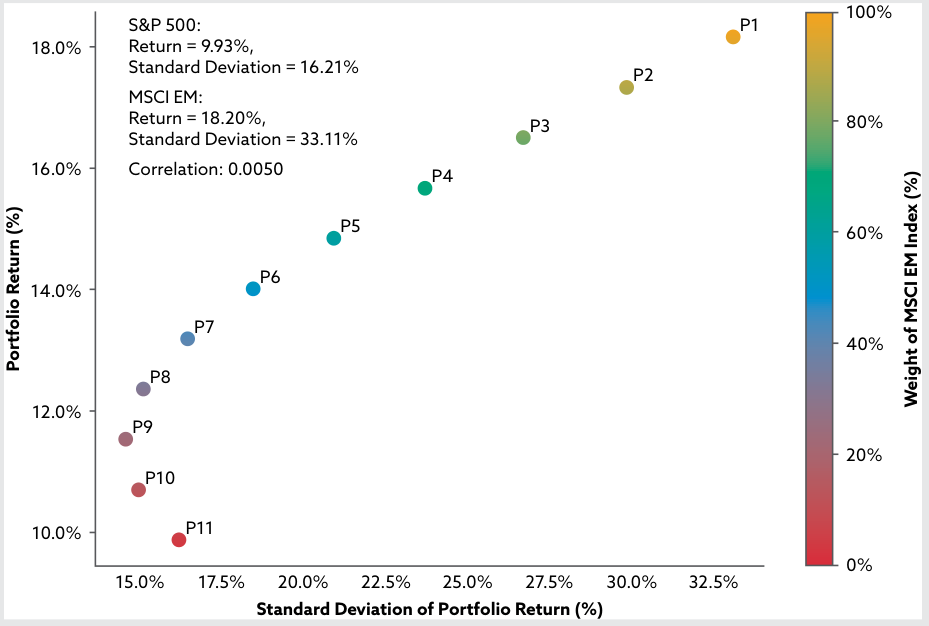
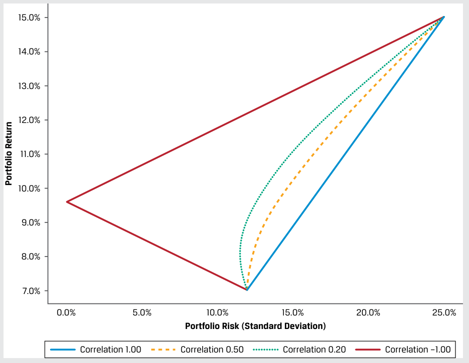
Matrix Notation of Portfolio Risk
For a portfolio with $N$ assets, the number of unique covariances that must be computed is:
Along with the $N$ individual variances, the total parameters needed for an $N$-asset portfolio is $\frac{N(N+1)}{2}$. For example, a 100-security portfolio requires 4,950 unique covariances. This structure is organized into the symmetric variance-covariance matrix $\mathbf{V}$:
The matching normalized matrix is the correlation matrix $\boldsymbol{\rho}$:
- Expected Returns: $E[R_1] = 10\%$, $E[R_2] = 12\%$, $E[R_3] = 8\%$
- Volatilities: $\sigma_1 = 15\%$, $\sigma_2 = 20\%$, $\sigma_3 = 10\%$
- Correlation Matrix $\boldsymbol{\rho}$:
\[ \boldsymbol{\rho} = \begin{bmatrix} 1 & 0.2 & -0.3 \\ 0.2 & 1 & 0.4 \\ -0.3 & 0.4 & 1 \end{bmatrix} \]
- Asset Variances (main diagonal of the covariance matrix):
- $\sigma_1^2 = 0.15^2 = 0.0225$
- $\sigma_2^2 = 0.20^2 = 0.0400$
- $\sigma_3^2 = 0.10^2 = 0.0100$
- Asset Covariances (off-diagonal elements):
- $\sigma_{1,2} = \sigma_{2,1} = 0.15 \times 0.20 \times 0.2 = 0.0060$
- $\sigma_{1,3} = \sigma_{3,1} = 0.15 \times 0.10 \times (-0.3) = -0.0045$
- $\sigma_{2,3} = \sigma_{3,2} = 0.20 \times 0.10 \times 0.4 = 0.0080$
- Expected Portfolio Return:
\[ E[R_P] = (0.4 \times 10\%) + (0.3 \times 12\%) + (0.3 \times 8\%) = 10\% \]
- Expected Portfolio Variance:
\[ \sigma_P^2 = \sum_{i=1}^3 \sum_{j=1}^3 w_i w_j \sigma_{i,j} \]\[ \sigma_P^2 = w_1^2 \sigma_1^2 + w_2^2 \sigma_2^2 + w_3^2 \sigma_3^2 + 2 w_1 w_2 \sigma_{1,2} + 2 w_1 w_3 \sigma_{1,3} + 2 w_2 w_3 \sigma_{2,3} \]\[ \begin{aligned} \sigma_P^2 &= (0.4^2 \times 0.0225) + (0.3^2 \times 0.04) + (0.3^2 \times 0.01) \\ &\quad + 2(0.4)(0.3)(0.006) + 2(0.4)(0.3)(-0.0045) + 2(0.3)(0.3)(0.008) \end{aligned} \]\[ \sigma_P^2 = 0.0036 + 0.0036 + 0.0009 + 0.00144 - 0.00108 + 0.00144 = 0.0099 \]
- Portfolio Standard Deviation: $\sigma_P = \sqrt{0.0099} \approx 9.95\%$.
Expected Return and Variance under Economic Scenarios
Expected returns and covariances can be derived from joint probabilities over $M$ economic scenarios. Under scenario $M$ occurring with probability $p_M$, the portfolio return is:
The expected portfolio return over all scenarios is:
The portfolio variance is the weighted sum of squared deviations from the expected return:
| Scenario | Probability | Asset A (%) | Asset B (%) | Asset C (%) |
|---|---|---|---|---|
| 1 (Expansion) | 30% | 15 | 10 | 5 |
| 2 (Steady) | 50% | 10 | 12 | 8 |
| 3 (Recession) | 20% | -5 | 20 | 12 |
- Scenario Returns:
- Scenario 1 (Expansion): $R_{P,1} = 0.4(15) + 0.3(10) + 0.3(5) = 10.5\%$.
- Scenario 2 (Steady): $R_{P,2} = 0.4(10) + 0.3(12) + 0.3(8) = 10.0\%$.
- Scenario 3 (Recession): $R_{P,3} = 0.4(-5) + 0.3(20) + 0.3(12) = 7.6\%$.
- Expected Portfolio Return:
\[ E[R_P] = 0.3(10.5\%) + 0.5(10.0\%) + 0.2(7.6\%) = 9.67\% \]
- Expected Portfolio Variance:
- Scenario 1 contribution: $0.3 \times (10.5\% - 9.67\%)^2 = 0.3 \times (0.83\%)^2 \approx 0.0000207$
- Scenario 2 contribution: $0.5 \times (10.0\% - 9.67\%)^2 = 0.5 \times (0.33\%)^2 \approx 0.0000054$
- Scenario 3 contribution: $0.2 \times (7.6\% - 9.67\%)^2 = 0.2 \times (-2.07\%)^2 \approx 0.0000857$
\[ \sigma_P^2 = 0.0000207 + 0.0000054 + 0.0000857 = 0.0001118 \] - Portfolio Standard Deviation: $\sigma_P = \sqrt{0.0001118} \approx 1.06\%$.
Summation vs. Matrix Notation Comparison
For portfolios with a large number of assets, matrix notation provides a compact, computationally efficient mathematical representation.
| Concept | Summation Notation | Matrix Notation |
|---|---|---|
| Asset Weights Vector | $w_i$ | $\mathbf{w} = [w_1, w_2, \dots, w_N]^T$ |
| Expected Returns Vector | $E[R_i]$ | $\boldsymbol{\mu} = [E[R_1], E[R_2], \dots, E[R_N]]^T$ |
| Portfolio Return | $E[R_P] = \sum_{i=1}^N w_i E[R_i]$ | $E[R_P] = \mathbf{w}^T \boldsymbol{\mu}$ |
| Covariance Matrix | $\sigma_{i,j} = \rho_{i,j}\sigma_i\sigma_j$ | $\mathbf{V}$ (symmetric $N \times N$ matrix) |
| Portfolio Variance | $\sigma_P^2 = \sum_{i=1}^N \sum_{j=1}^N w_i w_j \sigma_{i,j}$ | $\sigma_P^2 = \mathbf{w}^T \mathbf{V} \mathbf{w}$ |
Solution:
- Expected Return:
\[ E[R_P] = \mathbf{w}^T \boldsymbol{\mu} = \begin{bmatrix} 0.4 & 0.3 & 0.3 \end{bmatrix} \begin{bmatrix} 0.10 \\ 0.12 \\ 0.08 \end{bmatrix} = 0.4(0.10) + 0.3(0.12) + 0.3(0.08) = 10\% \]
- Portfolio Variance ($\mathbf{w}^T \mathbf{V} \mathbf{w}$):
First, compute the matrix-vector product $\mathbf{V}\mathbf{w}$:
\[ \mathbf{V}\mathbf{w} = \begin{bmatrix} 0.0225(0.4) + 0.006(0.3) - 0.0045(0.3) \\ 0.006(0.4) + 0.040(0.3) + 0.008(0.3) \\ -0.0045(0.4) + 0.008(0.3) + 0.010(0.3) \end{bmatrix} = \begin{bmatrix} 0.00945 \\ 0.01680 \\ 0.00360 \end{bmatrix} \]
Next, multiply the row vector $\mathbf{w}^T$ by the column vector $(\mathbf{V}\mathbf{w})$:
\[ \sigma_P^2 = 0.4(0.00945) + 0.3(0.0168) + 0.3(0.0036) = 0.00378 + 0.00504 + 0.00108 = 0.0099 \]
The Benefits of Diversification
The power of diversification lies in combining assets that are not perfectly positively correlated to reduce overall portfolio risk. Consider an equally weighted portfolio ($w_i = 1/N$) where all assets have the same variance $\sigma^2$ and the average correlation coefficient is $\bar{\rho}$. The portfolio variance is:
As the number of assets $N \to \infty$:
- The contribution of the individual asset variance, $\frac{\sigma^2}{N}$, converges to $0$.
- The multiplier $\left(1 - \frac{1}{N}\right)$ approaches $1$.
- Exact Portfolio Variance using Equation 117:
\[ \sigma_P^2 = \frac{0.04}{50} + \left(1 - \frac{1}{50}\right)(0.3)(0.04) = 0.0008 + 0.98(0.012) = 0.01256 \]
Exact standard deviation: $\sigma_P = \sqrt{0.01256} \approx 11.21\%$.
- Approximated Variance using Equation 118:
\[ \sigma_P^2 \approx \bar{\rho} \sigma^2 = 0.3(0.04) = 0.0120 \]
Approximated standard deviation: $\sigma_P \approx \sqrt{0.0120} \approx 10.95\%$.
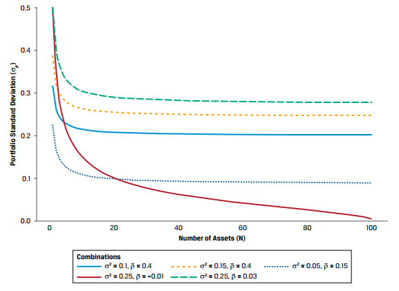
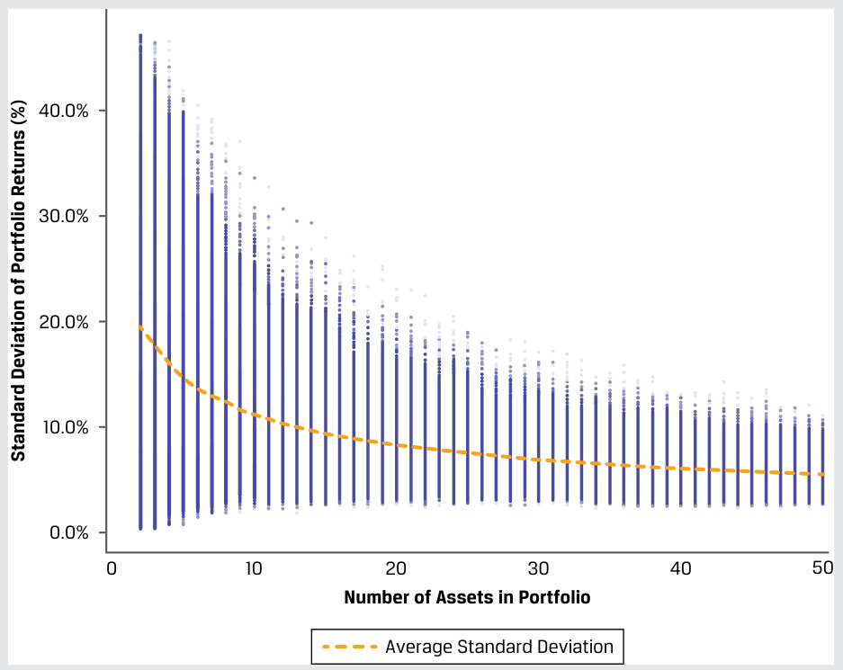
8.2 The Minimum-Variance Portfolio and the Efficient Frontier
| b | describe, calculate, and interpret the minimum-variance portfolio and portfolios that lie on the efficient frontier |
|---|
The Feasible Set and Efficient Frontier
The feasible set (or investment opportunity set) represents all possible portfolios that can be constructed from a given group of assets. When there are multiple risky assets, the feasible set forms a cloud of portfolios in risk-return space.
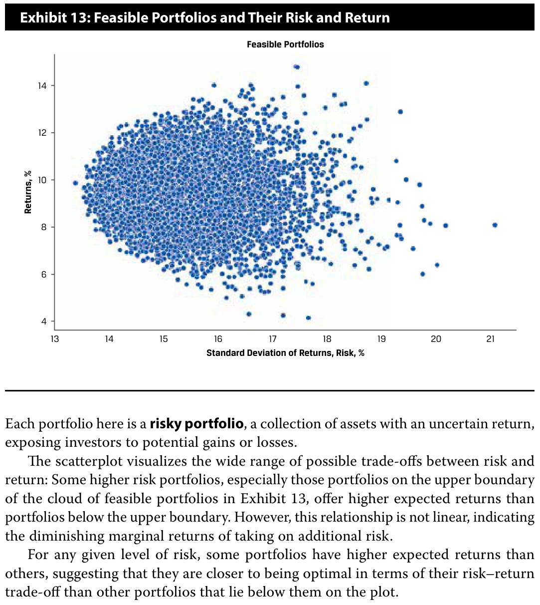
- The Minimum-Variance Frontier is the boundary that minimizes variance for each level of expected return.
- The Global Minimum-Variance Portfolio is the single portfolio on the frontier that has the lowest possible risk.
- The Markowitz Efficient Frontier is the portion of the minimum-variance frontier that lies above the Global Minimum-Variance portfolio. Risk-averse, utility-maximizing investors will only choose portfolios on this segment.
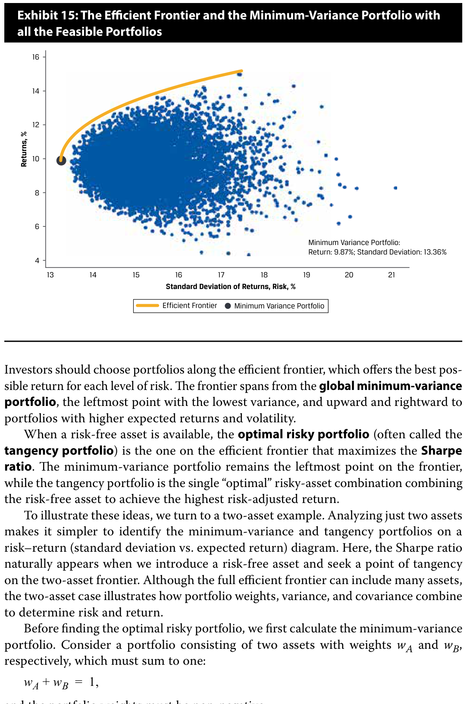
where $k$ is the target expected return. Under matrix form:
The constraint $w_i \ge 0$ represents the no-short-selling constraint.
Derivation of the Minimum-Variance Portfolio Weights
For a two-asset portfolio, we can find the weights that minimize variance without complex optimization. Let $w_A$ be the weight of Asset A and $w_B = 1 - w_A$ be the weight of Asset B.
Taking the first derivative of $\sigma_P^2$ with respect to $w_A$ and setting it equal to zero:
Solving for the optimal weight $w_A^*$ gives the global minimum-variance weight:
Correspondingly, the weight for Asset B is:
- Optimal Weights using Equation 121:
\[ w_A^* = \frac{0.1096 - 0.0107}{0.0263 + 0.1096 - 2(0.0107)} = \frac{0.0989}{0.1145} \approx 86.4\% \]
Weight of Asset B:
\[ w_B^* = 1 - 0.864 = 13.6\% \] - Expected Portfolio Return: $E[R_P] = 0.864(9.93\%) + 0.136(18.20\%) = 11.05\%$.
- Portfolio Standard Deviation (Risk):
\[ \sigma_P = \sqrt{(0.864^2 \times 0.0263) + (0.136^2 \times 0.1096) + 2(0.864)(0.136)(0.0107)} \]\[ \sigma_P = \sqrt{0.01963 + 0.00203 + 0.00251} = \sqrt{0.02417} \approx 15.55\% \]
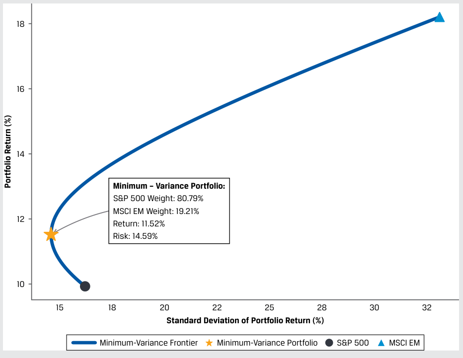
- Portfolio P6 (Global MVP): $71.8\%$ S&P 500, $28.2\%$ MSCI EM. Expected return: $12.26\%$, Risk: $14.96\%$.
- Portfolio P4: $68.5\%$ S&P 500, $31.5\%$ MSCI EM. Expected return: $12.53\%$, Risk: $15.27\%$.
- Portfolio P5: $49.8\%$ S&P 500, $50.2\%$ MSCI EM. Expected return: $14.08\%$, Risk: $18.52\%$.
- Portfolio P1: $16.3\%$ S&P 500, $83.7\%$ MSCI EM. Expected return: $16.85\%$, Risk: $27.85\%$.
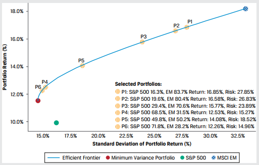
- Weights: Let $w_M$ be the weight allocated to the MSCI World Index:
\[ R_P = w_M R_M + (1 - w_M) R_f \implies 9\% = 10.4\% w_M + 1\%(1 - w_M) \]\[ 8\% = 9.4\% w_M \implies w_M = \frac{8\%}{9.4\%} \approx 85.1\% \]
Weight allocated to the risk-free asset: $w_f = 1 - 0.851 = 14.9\%$.
- Portfolio Standard Deviation: Since the risk-free asset has zero variance and covariance:
\[ \sigma_P = w_M \sigma_M = 0.851 \times 14.80\% \approx 12.59\% \]
Portfolio Optimization
- Return-constrained optimization by minimizing portfolio risk, $\sigma_p$, for a given level of return.
- Risk-constrained optimization by finding the highest expected return $E[r_p]$, for a given level of risk.
- Risk-adjusted return optimization by maximizing the Sharpe ratio,$\frac{E[r_p]-r_f}{\sigma_p}$, where $r_f$ represents the risk-free rate.
- Expected returns, $E[r_i]$, for each individual asset.
- Volatility, $\sigma_i$, for each individual asset.
- Asset correlations, $\rho_{i,j}$, or the off-diagonal covariances from the variance-covariance matrix V.
- Return-Constrained Optimization: Minimize portfolio risk for a target expected return of $11\%$.
- Risk-Constrained Optimization: Maximize expected return for a target portfolio risk of $12\%$.
| Asset / Metric | Return-Constrained | Risk-Constrained |
|---|---|---|
| Global Developed Equities | 53.45% | 48.64% |
| Emerging Market Equities | 14.75% | 5.33% |
| Long-Term Government Bonds | 0.00% | 6.61% |
| International Government Bonds | 31.80% | 39.42% |
| Short-Term Government Bills | 0.00% | 0.00% |
| Expected Portfolio Return | 11.00% | 9.78% |
| Expected Portfolio Risk | 14.81% | 12.00% |
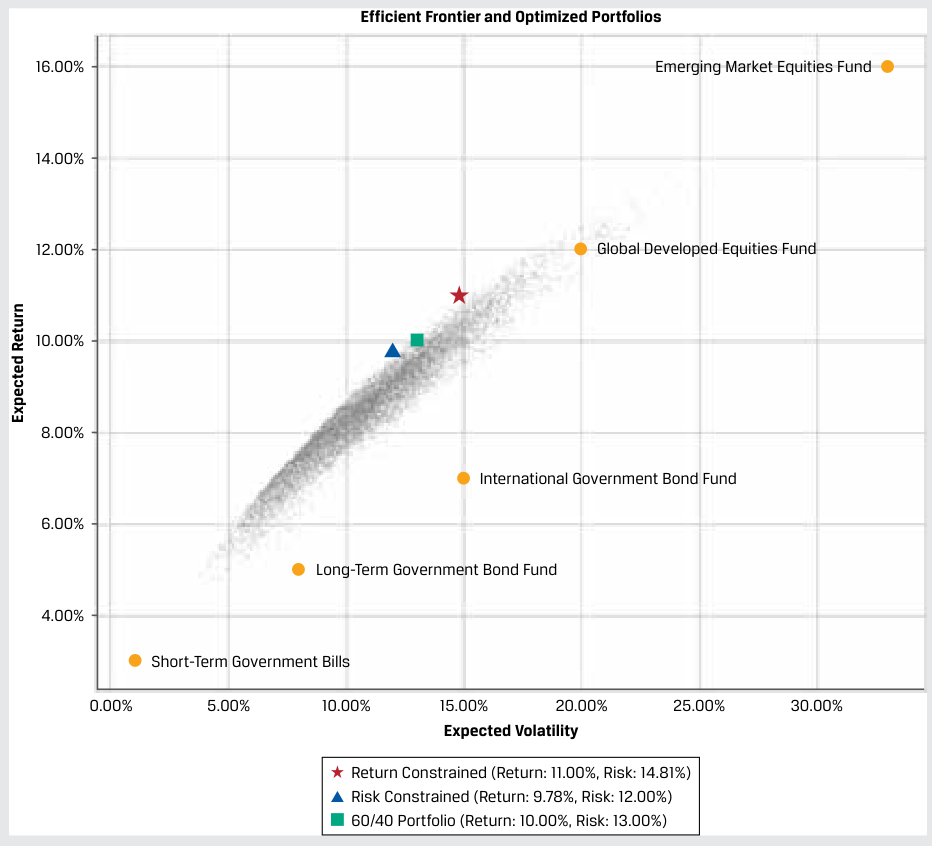
8.3 Optimal Portfolio Selection
| c | explain the selection of an optimal portfolio, given an investor's risk aversion and the capital allocation line, and how this extends to the market portfolio and the capital market line |
|---|
Investor Utility and Indifference Curves
The utility function represents an investor's satisfaction or ranking of portfolios based on risk and expected return. For a risk-averse investor, utility is formulated as:
where $E[R]$ is expected return, $\sigma^2$ is variance of returns, and $A$ is the coefficient of risk aversion.
- $A > 0$: Risk-averse investor. Utility decreases with higher risk.
- $A = 0$: Risk-neutral investor. Utility depends solely on expected return.
- $A < 0$: Risk-seeking investor. Utility increases with risk.
| Preference | Aversion ($A$) | Indifference Slope | Utility Curve Shape |
|---|---|---|---|
| Risk-seeking | $A < 0$ | Downward/Concave | Convex utility in wealth |
| Risk-neutral | $A = 0$ | Flat/Horizontal | Linear utility in expected return |
| Risk-averse | $A > 0$ | Upward/Convex | Concave utility in wealth |
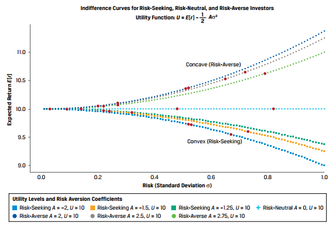
| Investment | Expected Return $E[R]$ (%) | Standard Deviation $\sigma$ (%) |
|---|---|---|
| A | 12 | 30 |
| B | 15 | 35 |
| C | 21 | 40 |
- An investor with $A = 4$.
- An investor with $A = 2$.
- A risk-seeking investor with $A = -4$.
- Case 1 ($A = 4$):
- $U_A = 0.12 - 0.5(4)(0.09) = -0.060$
- $U_B = 0.15 - 0.5(4)(0.1225) = -0.095$
- $U_C = 0.21 - 0.5(4)(0.16) = -0.110$
- Case 2 ($A = 2$):
- $U_A = 0.12 - 0.5(2)(0.09) = 0.0300$
- $U_B = 0.15 - 0.5(2)(0.1225) = 0.0275$
- $U_C = 0.21 - 0.5(2)(0.16) = 0.0500$
- Case 3 ($A = -4$):
- $U_A = 0.12 - 0.5(-4)(0.09) = 0.300$
- $U_B = 0.15 - 0.5(-4)(0.1225) = 0.395$
- $U_C = 0.21 - 0.5(-4)(0.16) = 0.530$
The Capital Allocation Line (CAL) and Sharpe Ratio
When a risk-free asset (with return $R_f$ and standard deviation $\sigma_f = 0$) is introduced, investors can combine it with a risky portfolio $P$. The expected return of the combined portfolio is:
The standard deviation is:
Substituting $(1 - w_f)$ into the expected return equation yields the Capital Allocation Line (CAL):
The slope of the CAL is the Sharpe ratio (SR) of the risky portfolio:
The optimal risky portfolio (tangency portfolio) is the point on the efficient frontier that maximizes the Sharpe ratio, creating the steepest possible CAL.
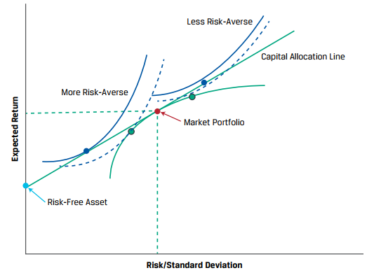
- More risk-averse investors select portfolios closer to the risk-free asset (left on the CAL).
- Less risk-averse investors select portfolios closer to or beyond the tangency portfolio $P$, utilizing leverage (borrowing at the risk-free rate) to buy more of the risky portfolio.
- Portfolio A: expected return $9.0\%$, weight in MSCI World $85.1\%$, standard deviation $12.59\%$.
- Portfolio B: expected return $12.0\%$, weight in MSCI World $117.1\%$, standard deviation $17.32\%$.
- $\text{SR}_A = \frac{9\% - 1\%}{12.59\%} \approx 0.635$
- $\text{SR}_B = \frac{12\% - 1\%}{17.32\%} \approx 0.635$
- Both portfolios lie on the same Capital Allocation Line (CAL) and have the same Sharpe ratio. Portfolio B is a leveraged portfolio, borrowing $17.1\%$ at the risk-free rate to increase investment in the risky asset portfolio.
The Capital Market Line (CML)
If all investors share identical assumptions and hold mean-variance efficient portfolios, the optimal risky portfolio is the Market Portfolio ($M$). The Market Portfolio theoretically contains all risky assets in the universe, weighted by their market values. The Capital Allocation Line using the Market Portfolio as the risky portfolio is called the Capital Market Line (CML):
where $E[R_M]$ and $\sigma_M$ are the expected return and standard deviation of the market portfolio. According to the mutual fund theorem, all rational investors can achieve optimal asset allocation by holding only two assets: the risk-free asset and the market portfolio.
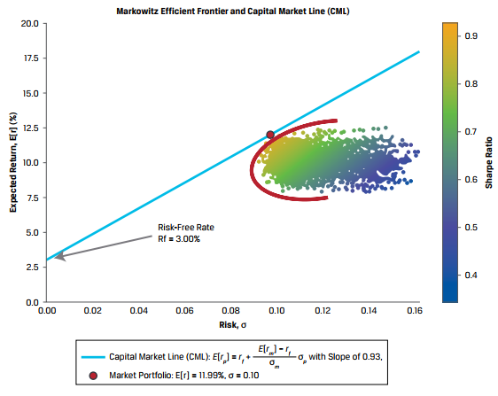
The Capital Asset Pricing Model (CAPM) and Beta
Total risk consists of two parts:
- Unsystematic Risk (diversifiable / idiosyncratic risk): Unique to a specific company or sector. Can be eliminated in a well-diversified portfolio.
- Systematic Risk (undiversifiable / market risk): Driven by macroeconomic factors that affect all assets. Cannot be diversified away.
where $\sigma_{i,M}$ is the covariance between asset $i$ and the market, and $\sigma_M^2$ is the variance of the market portfolio.
- $\beta = 1.0$: Asset has the same systematic risk as the market.
- $\beta > 1.0$: Asset is more volatile than the market (aggressive asset).
- $\beta < 1.0$: Asset is less volatile than the market (defensive asset).
where $\left( E[R_M] - R_f \right)$ is the market risk premium (MRP). The graphical representation of CAPM is the Security Market Line (SML), which plots expected return against Beta. In contrast to the CML (which uses total risk / standard deviation and applies only to efficient portfolios), the SML uses systematic risk / Beta and applies to all assets, whether efficient or individual.
- Calculate the expected return of the portfolio using CML.
- Calculate the Beta of the portfolio.
- Calculate the expected return using CAPM and confirm it matches the CML.
- Calculate the Sharpe ratio of the market portfolio.
- CML expected return:
\[ E[R_P] = R_f + \left(\frac{E[R_M] - R_f}{\sigma_M}\right) \sigma_P = 2\% + \left(\frac{8\% - 2\%}{15\%}\right)(10\%) = 2\% + 0.4(10\%) = 6\% \]
- Beta: For an efficient portfolio on the CML, the correlation with the market is $\rho = 1.0$:
\[ \beta_P = \frac{\sigma_P}{\sigma_M} = \frac{10\%}{15\%} \approx 0.6667 \]
- CAPM return:
\[ E[R_P] = R_f + \beta_P (E[R_M] - R_f) = 2\% + 0.6667(8\% - 2\%) = 2\% + 4\% = 6\% \]
The results match exactly, confirming the consistency between CML and CAPM for efficient portfolios.
- Sharpe ratio: $\text{SR}_M = \frac{8\% - 2\%}{15\%} = 0.40$.
Estimating Beta using Linear Regression
In practice, Beta is estimated using ordinary least squares (OLS) linear regression of the asset's excess returns against the market's excess returns. This is known as the Market Model:
where $\alpha_i$ is the intercept, $\beta_i$ is the slope, and $\epsilon_{i,t}$ is the error term. Under CAPM, the expected alpha ($\alpha_i$) should be exactly 0 in equilibrium.
- Regression line: $y = 0.939 x + 1.318$ ($\beta = 0.939$, $\alpha = 1.318\%$)
- Correlation coefficient $R = 0.850$ ($R^2 = 0.722$)
- Standard error of Beta: $0.101$
- Beta Interpretation: A beta of $0.939$ indicates that LVMH has slightly lower systematic risk than the French equity market average (CAC 40 Index).
- Expected Return (CAPM):
\[ E[R_{\text{LVMH}}] = R_f + \beta (E[R_M] - R_f) = 2.56\% + 0.939(9.577\% - 2.56\%) \]\[ E[R_{\text{LVMH}}] = 2.56\% + 0.939(7.017\%) = 2.56\% + 6.589\% \approx 9.15\% \]
Limitations of Portfolio Theory and CAPM
Several assumptions underlying Markowitz optimization and CAPM do not hold in real-world markets:
- Distributional Assumptions: Financial returns are rarely normally distributed, exhibiting fat tails (high kurtosis) and skewness.
- Time-Varying Volatility and Correlation: Variances and correlations are not constant but fluctuate, especially rising during systemic market crises.
- Market Inefficiencies: Information asymmetries exist, leading to mispricings and non-zero alphas.
- Estimation Errors: Small errors in the expected return and covariance inputs can result in dramatically different and highly concentrated optimal weights (input sensitivity).
- Historical limits: Historical relationships may not persist in the future.
- Transaction Costs and Taxes: Real-world investors must pay brokerage fees, spreads, and taxes. Capital distributions (dividends) and capital gains face differing tax structures, which reduces the after-tax efficient frontier.
Simulation of Financial Asset Prices and Returns
| LEARNING OUTCOMES | |
|---|---|
| a | describe historical simulation and explain how it can be used in investment applications |
| b | describe bootstrap resampling, and explain how it can be used in investment applications |
| c | describe Monte Carlo simulation and explain how it can be used in investment applications |
9.1 Historical Simulation
| a | describe historical simulation and explain how it can be used in investment applications |
|---|
Overview of Simulation Methods
Simulation predicts potential outcomes for a system based on theoretical scenarios by defining objectives, selecting variables, assigning values, evaluating scenarios, and interpreting results. Figure 54 outlines the key steps.
The simulation process comprises:
- Step 1: Setup/parameterize. Define the target output variable (e.g., risk-adjusted return) and identify the necessary inputs and mathematical relationships.
- Step 2: Scenario generation. Generate input values (scenarios) representing different market conditions.
- Step 3: Scenario evaluation/calculation engine. Process scenarios through a mathematical model to calculate outputs.
- Step 4: Result compilation/analysis. Aggregate outputs into a probability distribution to assess risks.
Three common simulation approaches differ primarily in how they generate scenarios (Step 2):
- Historical simulation applies actual past market movements directly to current portfolio factors.
- Bootstrap simulation resamples observed historical data with replacement to generate synthetic datasets.
- Monte Carlo simulation generates random scenarios based on assumed probability distributions.
| Simulation Approach | Step 1: Setup/ Parameterize | Step 2: Scenario Generation | Step 3: Scenario Evaluation | Step 4: Result Analysis |
|---|---|---|---|---|
| Historical Simulation | Use historical data to initialize model parameters. | Incorporate actual past observations for scenario inputs. | Run the model using each historical scenario. | Examine performance under real-world conditions encountered in the past. |
| Bootstrap Simulation | Adopt historical data to define parameters (with replacement). | Formulate synthetic scenarios by resampling the observed dataset. | Conduct calculations for each resampled scenario. | Assess variability while preserving the original data structure. |
| Monte Carlo Simulation | Specify probability distributions for model inputs. | Draw random samples from these distributions to shape scenario inputs. | Execute calculations using each random input vector. | Evaluate the resulting distribution of outputs to determine risks and probabilities. |
The three simulation approaches differ primarily in Step 2 (scenario generation); the other steps remain functionally identical.
Historical Simulation Overview
Historical simulation uses historical prices and returns to model future outcomes under the assumption that past patterns approximate future risks. This non-parametric approach captures empirical features like fat tails, kurtosis, and volatility clustering without distributional assumptions. However, it relies on the assumption that past patterns represent the future, which fails during structural shifts.
Implementing Historical Simulation
In historical simulation, scenarios are assembled from observed historical changes in each variable, as shown in Figure 55.
To construct a robust simulation, key valuation and risk factors need to be identified, which serve as the fundamental inputs in the simulation process. For equities, the primary variables are usually continuously compounded (logarithmic) price returns:
For fixed-income instruments, the simulation models changes in the yield curve. The price of a bond is determined by discounting future cash flows using simulated yields:
Historical simulation is commonly used to calculate portfolio Value at Risk (VaR). The case study below applies this method to a long-only portfolio.
- HSI (Hang Seng Index): HKD 55,000,000
- CSI 300 Index: HKD 40,000,000
Step 1: Calculate log returns.
Daily log returns for both indexes are calculated as: $r = \ln(P_1 / P_0)$. For example, on Day 1:
Returns are shown in Figure fig:mod9_exhibit_4 and Table tab:mod9_exhibit_5.
| Scenario No. | Hang Seng Index in HKD | CSI 300 in HKD | Hang Seng Index Log Return | CSI 300 Log Return |
|---|---|---|---|---|
| 0, $t = 0$ | 19,781.41 | 4,381.91 | -- | -- |
| 1 | 20,145.29 | 4,391.77 | 1.82% | 0.22% |
| 2 | 20,793.11 | 4,416.16 | 3.17% | 0.55% |
| 3 | 21,052.17 | 4,504.74 | 1.24% | 1.99% |
| 4 | 20,991.64 | 4,543.39 | -0.29% | 0.85% |
| … | … | … | … | … |
| 244 | 16,624.84 | 3,648.65 | 1.73% | -0.14% |
| 245 | 17,043.53 | 3,752.58 | 2.49% | 2.81% |
| 246 | 17,047.39 | 3,772.51 | 0.02% | 0.53% |
Step 2: Calculate daily profit and loss (P/L).
For each day, the P/L is computed as: $P/L = \text{Position value} \times (e^{r} - 1)$. For Day 1:
The P/L across all scenarios are compiled in Table tab:mod9_exhibit_6.
| Scenario | HSI Log Return | CSI 300 Log Return | HSI P/L (HKD) | CSI 300 P/L (HKD) | Total Portfolio P/L (HKD) |
|---|---|---|---|---|---|
| 1 | 1.82% | 0.22% | 1,010,165 | 88,097 | 1,098,262 |
| 2 | 3.17% | 0.55% | 1,771,429 | 220,606 | 1,992,035 |
| 3 | 1.24% | 1.99% | 686,246 | 803,973 | 1,490,219 |
| 4 | -0.29% | 0.85% | -159,269 | 341,449 | 182,180 |
| … | … | … | … | … | … |
| 244 | 1.73% | -0.14% | 959,778 | -55,961 | 903,817 |
| 245 | 2.49% | 2.81% | 1,386,693 | 1,139,941 | 2,526,634 |
| 246 | 0.02% | 0.53% | 11,001 | 212,563 | 223,564 |
Step 3: Create the P/L distribution.
Daily P/L results generate the empirical distribution shown in Figure fig:mod9_exhibit_7.
Step 4: Determine the VaR.
The daily P/L estimates are ranked from lowest to highest (Table tab:mod9_exhibit_8).
| Rank | Day | Total P/L (HKD) |
|---|---|---|
| 1 | 262 | -2,226,893 |
| 2 | 157 | -1,949,811 |
| 3 | 39 | -1,888,929 |
| … | … | … |
| 11 | 49 | -1,651,318 |
| 12 | 43 | -1,624,801 |
| 13 | 25 | -1,607,739 |
| … | … | … |
| 246 | 176 | 3,684,974 |
For 246 observations, the 5% tail corresponds to the 12.3rd rank from the bottom. Using linear interpolation between the 12th (HKD -1,624,801) and 13th (HKD -1,607,739) observations:
For comparison, a parametric VaR is calculated assuming a joint normal distribution with parameters in Table tab:mod9_exhibit_9.
| Statistic | Hang Seng Index | CSI 300 (in HKD) |
|---|---|---|
| Average Log Return, $\mu$ | -0.0607% | -0.0611% |
| Standard Deviation, $\sigma$ | 1.3948% | 0.9741% |
| Correlation, $\rho$ | 0.6609 | -- |
Assuming zero mean returns for daily calculations, the portfolio value variance (for $D_{HS} = 55\text{M}$ and $D_{SS} = 40\text{M}$) is:
The standard deviation is $\sigma_p = \text{HKD } 1.0656\text{ million}$. The 95
The difference arises because parametric VaR relies on the normality assumption, whereas historical VaR directly reflects empirical tail behavior and any inherent drift.
Step 1: Determine the historical distribution of returns.
Figure fig:mod9_exhibit_10 and Table tab:mod9_exhibit_11 show the distribution of revenue forecast deviations.
| Investment | Return Deviation (%) |
|---|---|
| 1 | -28.56 |
| 2 | -25.60 |
| 3 | -25.56 |
| … | … |
| 48 | 5.49 |
| 49 | 7.30 |
| 50 | 9.69 |
The deviations range from $-28.56\%$ to $9.69\%$, suggesting optimistic forecasts and a heavily left-skewed, high-variance distribution.
Step 2: Establish the return deviation distribution.
To find the 2.5th and 97.5th percentiles of the return deviations, we interpolate linearly:
- 2.5th percentile (between ranks 2 and 3):
\[ x = -25.60 + \frac{2.5 - 2}{3 - 2} \times (-25.56 - (-25.60)) = -25.58\% \]
- 97.5th percentile (between ranks 48 and 49):
\[ x = 5.49 + \frac{97.5 - 96}{98 - 96} \times (7.30 - 5.49) = 6.89\% \]
Step 3: Calculate the Net Present Value (NPV) range.
The baseline NPV is GBP 1,000,000. Every 1% deviation in revenue changes NPV by GBP 123,897.22 ($\beta$).
We have $NPV = NPV_{base} + \Delta NPV$, with:
If Actual = Forecast, that means $\Delta Rev = 0$, $NPV = GBP 1,000,000$. Extreme scenario NPVs are calculated as:
- Downside (2.5th percentile):
\[ \text{NPV} = 1,000,000 + (-25.58 \times 123,897.22) \approx -\text{GBP } 2,170,000 \]
- Upside (97.5th percentile):
\[ \text{NPV} = 1,000,000 + (6.89 \times 123,897.22) \approx \text{GBP } 1,854,000 \]
Using empirical data to define realistic outcomes allows the firm to adjust expectations and mitigate overconfidence in forecast models.
Features of Historical Simulation
Historical simulation is a valuable tool for financial analysis, but its implementation requires attention to data quality and availability.
Missing data in global investment portfolios may be caused by:
- Asynchronous global markets: Different trading holidays and time zones.
- Non-existence of securities: A security listing after the simulation window begins.
- Thinly traded securities: Sparse or stale pricing due to low volume.
For fixed-income securities, applying historical price changes directly can be misleading. Instead, simulations model changes in benchmark yields (e.g., zero-coupon curves at specific maturities) rather than the bond prices directly.
Strengths of historical simulation:
- Simplicity: Straightforward implementation without complex statistical models.
- No distribution assumptions: Preserves empirical distribution features like fat tails and kurtosis.
- Implicit correlation: Preserves natural historical correlations between assets.
- Low computational cost: Scenarios are sourced directly from past observations.
Disadvantages of historical simulation:
- Backward looking: Relies on the assumption that past risk distributions represent the future.
- Limited scenario variety: Cannot simulate extreme events that have not occurred in the historical sample.
- Data dependency: Results depend entirely on the quality and completeness of historical datasets.
9.2 Bootstrapping
| b | describe bootstrap resampling, and explain how it can be used in investment applications |
|---|
Bootstrapping Overview
Resampling repeatedly draws samples from observed data to make statistical inferences. It is particularly useful when population distributions are unknown or sample sizes are small.
Bootstrapping is a resampling method that generates a simulated distribution by resampling with replacement from the observed sample (treating the sample as a proxy for the population).
Resampling with replacement means each data point has a probability of $1/n$ (where $n$ is sample size) of being selected in each draw, allowing the same value to be selected multiple times. For example, from sample $[2, 5, 8]$, bootstrap samples could be $[5, 5, 8]$ or $[2, 2, 5]$.
Bootstrapping differs from historical simulation:
- Bootstrapping resamples with replacement to create synthetic datasets, preserving the empirical distribution structure while generating new combinations.
- Historical simulation applies the actual chronological sequence of past market movements directly as fixed scenarios.
| Feature | Historical Simulation | Bootstrapping |
|---|---|---|
| Source of data | Historical dataset | Observed sample |
| Sampling method | Simple sampling of historical data | Resampling with replacement from the sample |
| Assumptions | Assumes past data reflects future | Assumes sample represents population |
| Primary use cases | Risk management, financial stress tests | Estimating confidence intervals, standard errors |
| Computational intensity | Low to moderate | Moderate |
By using the observed sample as a proxy for the unknown population, bootstrapping eliminates the need for external data or theoretical models, making it extremely flexible and widely applicable in situations where we have little prior information about the population distribution.
Implementing Bootstrapping
Bootstrapping is non-parametric, flexible, and simple to implement. Its accuracy depends on how well the sample represents the true distribution; larger samples are always preferred.
The only functional change when using the bootstrap method is the source of scenarios (Step 2), as shown in Figure 56.
Step 1: Setup/parameterization
- Option Payoff: $V_{\text{Call option}} = \max[P_T - K, 0]$ where $K = \text{GBP } 141.25$.
- Steps: $n = 10$ weeks.
- Interest rate: $r = 5.0\%$ annualized (continuously compounded).
- Sample data: 25 weekly log returns ($t = 1$ to $t = 25$) calculated from 26 weeks of historical price data (Table tab:mod9_exhibit_15).
| Week | Price (GBP) | Log Return ($r_i$) | Week | Price (GBP) | Log Return ($r_i$) |
|---|---|---|---|---|---|
| 0, $t = 0$ | 100.00 | NA | 13 | 114.07 | -0.0056 |
| 1, $t = 1$ | 100.26 | 0.0026 | 14 | 115.83 | 0.0153 |
| 2 | 102.36 | 0.0207 | 15 | 123.01 | 0.0601 |
| 3 | 102.92 | 0.0055 | 16 | 128.71 | 0.0453 |
| 4 | 103.55 | 0.0061 | 17 | 131.07 | 0.0182 |
| 5 | 103.75 | 0.0019 | 18 | 131.88 | 0.0062 |
| 6 | 109.44 | 0.0534 | 19 | 132.15 | 0.0020 |
| 7 | 112.79 | 0.0302 | 20 | 129.54 | -0.0199 |
| 8 | 109.26 | -0.0318 | 21 | 133.28 | 0.0285 |
| 9 | 108.96 | -0.0027 | 22 | 134.02 | 0.0055 |
| 10 | 110.69 | 0.0158 | 23 | 135.02 | 0.0074 |
| 11 | 111.57 | 0.0079 | 24 | 137.09 | 0.0152 |
| 12 | 114.71 | 0.0278 | 25, $t = 25$ | 141.25 | 0.0299 |
| Average | 0.0138 | Cumulative | 0.3454 |
We run 500 simulations to estimate the option value.
Step 2: Scenario generation.
We construct simulated price paths by drawing 10 random integers between 1 and 25 (with replacement) for each scenario and assigning the corresponding historical return. Table tab:mod9_exhibit_16 lists Scenario 1's details.
| Pull (Random Number) | Corresponding Log Return ($r_i$) |
|---|---|
| 21 | 0.0285 |
| 25 | 0.0299 |
| 4 | 0.0061 |
| 13 | -0.0056 |
| 16 | 0.0453 |
| 8 | -0.0318 |
| 7 | 0.0302 |
| 8 | -0.0318 |
| 15 | 0.0601 |
| 10 | 0.0158 |
| Total return | 0.1467 |
Step 3: Scenario evaluation/calculation engine.
Log returns are additive, so for Scenario 1:
The terminal stock price is:
The option payoff at maturity is:
Figure fig:mod9_exhibit_17 shows the price paths of 500 simulations.
Step 4: Result compilation/analysis.
Figure fig:mod9_exhibit_18 shows the resulting histograms for 500 simulations (mean option value is $\approx$ GBP 20.90).
Figure fig:mod9_exhibit_19 shows the histograms for 10,000 simulations (mean option value is $\approx$ GBP 21.34), showing smoother tails.
Under the standard risk-free BSM model, this option is worth $<$ GBP 5. The bootstrapped price ($\approx$ GBP 21) is much higher because bootstrapping uses historical returns, incorporating the large positive drift (1.38% weekly) observed in the sample data, whereas BSM assumes a risk-neutral drift.
Step 1: Setup and parameterization.
Table tab:mod9_exhibit_20 lists the observed monthly returns and corresponding NAVs starting from USD 100. Figure fig:mod9_exhibit_21 illustrates their evolution.
| Month | Monthly Return (%) | NAV (USD) | Month | Monthly Return (%) | NAV (USD) |
|---|---|---|---|---|---|
| 0 | 0.00% | 100.00 | 13 | -0.77% | 134.50 |
| 1 | -4.46% | 95.54 | 14 | 11.00% | 149.30 |
| 2 | 9.16% | 104.29 | 15 | 10.26% | 164.62 |
| 3 | -3.94% | 100.18 | 16 | 7.64% | 177.20 |
| 4 | 13.55% | 113.75 | 17 | -3.94% | 170.22 |
| 5 | 6.02% | 120.60 | 18 | 14.53% | 194.95 |
| 6 | -6.33% | 112.97 | 19 | -6.70% | 181.89 |
| 7 | -1.97% | 110.74 | 20 | -7.20% | 168.79 |
| 8 | 8.71% | 120.39 | 21 | -7.80% | 155.62 |
| 9 | 3.75% | 124.90 | 22 | -4.34% | 148.87 |
| 10 | -5.56% | 117.96 | 23 | -4.50% | 142.17 |
| 11 | 6.09% | 125.14 | 24 | 8.79% | 154.67 |
| 12 | 8.31% | 135.54 |
Step 2: Scenario generation with bootstrapping.
We construct 1,000 scenarios, each simulating a 50-month path by randomly drawing 50 returns from the 24-month sample (with replacement). For example:
- Random draws: $[8, 7, 22, \dots, 18]$.
- Assigned returns: $[8.71\%, -1.97\%, -4.34\%, \dots, 14.53\%]$. The sample standard deviation is $7.61\%$.
Step 3: Scenario evaluation and calculation.
For each scenario, the monthly returns' standard deviation is computed. The resulting frequency distribution is shown in Figure fig:mod9_exhibit_22.
Step 4: Result compilation and analysis.
The 95% confidence interval for the monthly volatility (2.5th to 97.5th percentiles) ranges from $6.55\%$ to $7.94\%$. This range allows the company to compare the fund's risk profile against competitors and determine if its volatility is acceptable.
Features of Bootstrapping Simulations
Bootstrapping avoids parametric distribution assumptions, allows constructing confidence intervals, and assesses estimator stability. Its effectiveness depends on sample representativeness. Larger sample sizes yield more accurate results.
Strengths of bootstrapping:
- Minimal assumptions: Bootstrapping does not require assumptions about the underlying population distribution.
- Statistical robustness: Unlike many other methods, bootstrapping is particularly useful when dealing with small datasets.
- Robust variability estimates: Provides robust estimates of standard errors and confidence intervals for limited datasets.
- Adaptability: Bootstrapping can be applied to almost any statistic (e.g., mean, median, variance, correlation) in various fields.
- No need for a "large" external dataset: bootstrapping works directly from the sample at hand, making it ideal for situations where data are scarce.
Disadvantages of bootstrapping:
- Computationally intensive: Requires running many iterations to build the simulated distribution.
- Sample dependency: Highly sensitive to sample quality; cannot generate values outside the sample range.
- Time-series limitations: Simple bootstrapping breaks down autocorrelation in time-series data.
- No analytical insight: Bootstrapping is purely empirical and does not provide theoretical insight into the population or the underlying process.
9.3 Monte Carlo Simulation
| c | describe Monte Carlo simulation and explain how it can be used in investment applications |
|---|
Monte Carlo Simulation Overview
A Monte Carlo simulation generates a large number of random samples from a specified probability distribution or distributions to produce a simulated frequency distribution of outcomes.
Unlike historical simulation and bootstrapping, Monte Carlo simulation is a parametric method that requires explicit assumptions about the input variables' probability distributions. This allows analysts to evaluate the sensitivity of output variables to changes in parameters like mean, variance, and correlation.
In finance, Monte Carlo simulation is widely used to value complex securities and derivatives (e.g., path-dependent contingent claims) that lack analytical closed-form pricing formulas.
- Option Type: European Call, Strike ($K$): CAD 90
- Current Price ($P_0$): CAD 85, Time ($T$): 1 Year
- Volatility ($\sigma$): 25%, Risk-free rate ($r$): 5.0%
Step 1: Setup/parameterization
- Valuation: $V_{\text{Call option}} = \max[P_T - K, 0]$ where $K = \text{CAD } 90$.
- Under risk-neutral pricing, stock price paths are assumed to follow a log-normal distribution.
Step 2: Scenario generation
The log return return is simulated using Geometric Brownian Motion over one step ($s = 1.0$):
where $Z \sim N(0, 1)$ and the drift is: $0.05 - (0.25^2 / 2) = 0.01875$. The ending stock price is $P_T = P_0 \times e^{r_t}$.
Step 3: Scenario evaluation/calculation engine
We run 5,000 simulations to generate ending prices (Figure fig:mod9_exhibit_23).
Step 4: Result compilation/analysis
The resulting option value distribution is shown in Figure fig:mod9_exhibit_24.
The mean option payoff is CAD 8.61. Discounted at the risk-free rate of 5.0
This closely matches the BSM formula value of CAD 8.18.
Step 1: Setup/Parameterization
- Objective: Estimate $V_0 = E[\max[P_{21} - \text{Average price (Days 1--21)}, 0]] \times e^{-rT}$.
- Input parameters: $P_0 = \text{CHF } 25.00$, $T = 21$ days, $\sigma = 25\%$, $r = 5.0\%$.
Step 2: Scenario Generation
Daily stock returns follow a log-normal distribution:
where $Z \sim N(0, 1)$. Prices evolve as $P_t = P_{t-1} \times e^{r_t}$. Table tab:mod9_exhibit_25 shows one simulated run.
| Day | Return (%) | Price (CHF) | Day | Return (%) | Price (CHF) |
|---|---|---|---|---|---|
| 1 | -2.32% | 24.43 | 12 | 0.22% | 24.80 |
| 2 | -0.70% | 24.26 | 13 | -1.43% | 24.45 |
| 3 | 1.45% | 24.61 | 14 | 4.87% | 25.67 |
| 4 | 0.49% | 24.73 | 15 | -2.80% | 24.96 |
| 5 | -1.01% | 24.48 | 16 | -1.25% | 24.65 |
| 6 | 1.15% | 24.76 | 17 | -1.54% | 24.27 |
| 7 | 1.16% | 25.05 | 18 | 0.24% | 24.33 |
| 8 | 0.46% | 25.16 | 19 | -4.29% | 23.31 |
| 9 | -0.58% | 25.01 | 20 | 0.41% | 23.41 |
| 10 | 0.12% | 25.04 | 21 | -1.28% | 23.11 |
| 11 | -1.17% | 24.75 | |||
| Average | 24.54 |
For this run, the ending price is CHF 23.11, which is below the average price of CHF 24.54, yielding a payoff of zero. Figure fig:mod9_exhibit_26 shows the price path of this run.
Step 3: Scenario evaluation/calculation engine.
We run 500 price path simulations (Figure fig:mod9_exhibit_27).
Step 4: Result compilation/analysis.
The distribution of payoffs is shown in Figure fig:mod9_exhibit_28.
The average payoff across all 500 simulations was CHF 0.35. Discounting using the risk-free rate yields:
Multivariate Monte Carlo Simulation
Simulating multiple variables simultaneously is necessary to capture complex correlations and dependencies in financial portfolios or multi-asset derivatives.
Correlated variables are generated by drawing independent standard normal variables and transforming them using the Cholesky decomposition—a matrix factorization technique that decomposes a covariance or correlation matrix. The framework is shown in Figure 57.
Step 1: Setup/parameterize
We assume a joint normal distribution for the two variables with standard deviations $\sigma_1$ and $\sigma_2$ and correlation $\rho$.
Step 2: Scenario generation
The Cholesky decomposition transforms independent standard normal variables $Z_1$ and $Z_2$ into correlated variables $X_1$ and $X_2$:
This approach ensures that the final variables, $X_1$ and $X_2$, adhere to our calibration:
The variances are:
Since $Z_1$ and $Z_2$ are independent, the covariance is:
Xem thêm về mô phỏng 2 biến có tương quan, sử dụng Cholesky decomposition tại phần (Appendix C.1: Cholesky Decomposition)
In a specific scenario, the random draws from independent standard normal distributions are $Z_1 = 0.4$ and $Z_2 = -1.2$. The first variable, $x_1$, is calculated using:
The value of the second variable, $x_2$, is closest to:
- -2.40%.
- -2.05%.
- -1.80%.
Solution:
B là phương án đúng. Áp dụng công thức liên kết hai biến số tương quan bằng Cholesky decomposition:
Phương án A tính sai khi bỏ qua yếu tố tương quan và nhân trực tiếp: $2.0\% \times Z_2 = -2.40\%$.
Phương án C sai vì dùng sai tỷ lệ của $x_1$.
We make the following parameters: - Model: Bivariate normal distribution on log returns. - Standard deviations: DAX $\sigma_1 = 0.82\%$, MADX $\sigma_2 = 0.86\%$. - Correlation coefficient: $\rho = 0.8276$. - Expected returns: Assumed to be zero.
We generate independent standard normals $Z_1, Z_2$ and apply Cholesky decomposition:
The portfolio return is $R_P = X_1 - X_2$ (due to shorting MADX). Using 250 simulations, the resulting P/L distribution is shown in Figure fig:mod9_exhibit_31.
The simulation results show an average value change of -EUR 2,434.94 (theoretically zero) and standard deviation of EUR 50,234.11. Increasing the number of simulations would reduce simulation noise and move the mean closer to the theoretical zero.
Features of Monte Carlo Simulation
Monte Carlo simulation is highly flexible because the modeler controls the probability distributions, parameters, and relationships of the inputs.
Strengths of Monte Carlo simulation:
- Wide applicability: Can simulate complex, non-linear, and path-dependent cash flows.
- Correlation handling: Monte Carlo simulation effectively models the correlations between assets.
- Forward looking: Allows testing portfolio behavior under different distributional parameters and hypothetical future scenarios.
- No historical data constraint: Can be applied to new instruments by defining pricing parameters.
- Flexibility for non-normal distributions: Monte Carlo simulation is adaptable to non-normal return distributions, accounting for skewness and kurtosis.
Disadvantages of Monte Carlo simulation:
- Computational intensity: Requires simulating thousands of trials, which can be computationally intensive.
- Model dependency: Results depend entirely on input distribution and correlation assumptions ("garbage in, garbage out").
- Complexity: Harder to design, calibrate, and explain compared to historical simulation.
- Data requirements: Monte Carlo simulation often relies on extensive historical data to estimate such parameters as volatility and correlation.
| Feature | Historical Simulation | Bootstrapping | Monte Carlo Simulation |
|---|---|---|---|
| Source of data | Historical dataset | Observed sample | Assumed distribution |
| Sampling method | Sampling from historical data | Resampling with replacement | Random sampling from predefined distribution |
| Assumptions | Assumes past reflects future | Assumes sample represents population | Assumes generation process can be modeled statistically |
| Flexibility | Limited to historical patterns | Limited by sample size | Highly flexible |
| Computational intensity | Low to moderate | Moderate | High |
Practical Implementation of Simulation Approaches Using Excel and Other Tools
Excel and Google Sheets provide functions to implement these techniques. Table 26 summarizes these functions.
| Technique | Excel Functions | Google Sheets | Description |
|---|---|---|---|
| Monte Carlo | RAND(), NORM.INV(), LOGNORM.INV(), RANDBETWEEN(), IF(), SUM(), AVERAGE(), STDEV(), CONFIDENCE.NORM() | RAND(), NORMINV(), LOGNORMINV(), RANDBETWEEN(), IF(), SUM(), AVERAGE(), STDEV(), CONFIDENCE() | Generate random values from normal, log-normal, or uniform distributions. |
| Historical | INDEX(), SORT(), PERCENTILE.EXC(), PERCENTILE.INC(), LARGE(), SMALL(), AVERAGE(), STDEV(), IFERROR() | INDEX(), SORT(), PERCENTILE.EXC(), PERCENTILE.INC(), LARGE(), SMALL(), AVERAGE(), STDEV(), IFERROR() | Sort, rank, and calculate percentiles of historical return series. |
| Bootstrapping | RAND(), INDEX(), MATCH(), COUNTIF(), SUM(), AVERAGE(), STDEV(), LARGE(), SMALL(), CONFIDENCE.NORM() | RAND(), INDEX(), MATCH(), COUNTIF(), SUM(), AVERAGE(), STDEV(), LARGE(), SMALL(), CONFIDENCE() | Resample with replacement using RAND() and INDEX(). |
Implementing Historical Simulation in Excel:
- Input historical price or return data in Column A.
- Calculate returns in Column B.
- Sort returns in Column C:
=SORT(B:B, 1, TRUE). - Calculate VaR using percentile functions:
=PERCENTILE.EXC(B:B, 0.05).
Implementing Bootstrapping in Excel:
- Input historical data in Column A and calculate returns in Column B.
- Resample returns with replacement in Column C:
=INDEX(B:B, RANDBETWEEN(2, N)), which randomly selects a row. - Replicate the formula across multiple rows and columns to generate paths.
Implementing Monte Carlo in Excel:
- Define initial stock price, volatility, risk-free rate, and time steps.
- Generate standard normal variables:
=NORM.INV(RAND(), 0, 1). - Simulate price paths using geometric Brownian motion:
\begin{equation} P_{t+\Delta t} = P_t \times e^{(r-0.5\sigma^2)\Delta t + \sigma \sqrt{\Delta t} Z} \label{eq:gbm_price_step_m9} \end{equation}
In Excel, this is implemented as:
=P_t * EXP((r - 0.5 * o2) * dt + o * SQRT(dt) * NORM.INV(RAND(), 0, 1))(whereois volatility $\sigma$).
Applications of Simple Linear Regression in Finance
| LEARNING OUTCOMES | |
|---|---|
| a | describe, interpret, and explain simple linear regression, including coefficient estimation using the least squares criterion |
| b | describe and compare the assumptions of simple linear regression, identify violations through analyzing residuals, evaluate the estimated model's goodness-of-fit and regression coefficients, and results of ANOVA estimates |
| c | calculate and interpret predicted values, the standard error of the estimate, and prediction intervals for the dependent variable in a simple linear regression model and describe different functional forms |
| d | calculate and interpret the variable estimates of the capital asset pricing model (CAPM) |
10.1 Linear Regression Estimation
| a | describe, interpret, and explain simple linear regression, including coefficient estimation using the least squares criterion |
|---|
Linear Regression Analysis
Regression analysis estimates the relationship between a dependent variable ($Y$), whose variation we want to explain, and an independent variable ($X$), which is hypothesized to influence or explain changes in $Y$.
In simple linear regression, the population model is expressed as:
where:
- $Y_i$ is the dependent variable (or response variable) for observation $i$.
- $X_i$ is the independent variable (or explanatory variable) for observation $i$.
- $\beta_0$ is the intercept coefficient, representing the expected value of $Y$ when $X = 0$.
- $\beta_1$ is the slope coefficient, representing the change in the expected value of $Y$ for a one-unit change in $X$.
- $\epsilon_i$ is the error term (or disturbance), capturing random noise and variables omitted from the model.
The estimated regression line is:
where $\hat{Y}_i$ is the predicted value of the dependent variable for observation $i$, and $\hat{\beta}_0$ and $\hat{\beta}_1$ are the sample estimates of $\beta_0$ and $\beta_1$.
Coefficient Estimation of Linear Regression
The Ordinary Least Squares (OLS) estimation criterion determines the coefficients $\hat{\beta}_0$ and $\hat{\beta}_1$ by minimizing the Sum of Squared Errors (SSE), which is the sum of the squared differences between the observed values $Y_i$ and the predicted values $\hat{Y}_i$:
The OLS estimators for the slope and intercept are calculated as:
where $\bar{X}$ and $\bar{Y}$ are the sample means of the independent and dependent variables, respectively.
Estimation Residuals
The difference between the observed value $Y_i$ and the estimated/predicted value $\hat{Y}_i$ is the residual ($e_i$):
The residuals are the sample counterparts to the population error terms ($\epsilon_i$). Figure 58(b) illustrates the residuals plotted around a horizontal line at $e_i = 0$, reflecting the vertical distance of each observation from the regression line.


Data Types
Financial regression models typically utilize three types of data structures:
- Cross-sectional data: Observations on multiple entities (e.g., different companies, sectors, or countries) at a single point in time. It is indexed by $i = 1, \dots, n$.
- Time-series data: Repeated observations of a single entity (e.g., a country's GDP growth or a company's stock return) across multiple time periods. It is indexed by $t = 1, \dots, T$.
- Panel data: A combination of cross-sectional and time-series data, observing multiple entities repeatedly over time.
Interpretation:
- Intercept ($\hat{\beta}_0 = 1.59\%$): If the real GDP growth rate is $0\%$, the expected annual inflation rate is $1.59\%$.
- Slope ($\hat{\beta}_1 = 1.27$): For every $1\%$ increase in the annual real GDP growth rate, the expected annual inflation rate increases by $1.27\%$.
10.2 Limitations of Linear Regression Models
| b | describe and compare the assumptions of simple linear regression, identify violations through analyzing residuals, evaluate the estimated model's goodness-of-fit and regression coefficients, and results of ANOVA estimates |
|---|
Assumptions of the Simple Linear Regression Model
To ensure that the OLS estimators are Blue (Best Linear Unbiased Estimators) and that statistical inferences are valid, 4 key assumptions must hold:
- Linearity: The relationship between the dependent variable $Y$ and the independent variable $X$ is linear in parameters.
- Homoskedasticity: The variance of the error terms ($\epsilon_i$) is constant across all observations: $\text{Var}(\epsilon_i) = \sigma^2$ for all $i$.
- Independence: The error terms are independent of one another, implying they are uncorrelated across observations: $\text{Cov}(\epsilon_i, \epsilon_j) = 0$ for all $i \neq j$.
- Normality: The error terms ($\epsilon_i$) are normally distributed. This is crucial for small sample hypothesis testing.
Residual Analysis
Residual plots (plotting residuals $e_i$ against $X_i$ or time $t$) are crucial diagnostics to identify violations of OLS assumptions:
- Violation of Linearity: Residuals show a distinct curved (e.g., U-shaped) pattern when plotted against $X$, suggesting that a linear form is inappropriate. Figure 59 illustrates this violation.
Phóng to
Figure 59 Fitting a Linear and a Non-Linear Model to Non-Linear Data - Heteroskedasticity: The spread of the residuals increases or decreases systematically with $X$ (creating a funnel shape). Non-constant variance invalidates standard error estimates, making $t$-statistics unreliable. Figure 60 shows a comparison of regressions on data with two variance regimes.
 Phóng to
Phóng toFigure 60 Regressions on Data with Two Different Regimes and Residuals - Autocorrelation (Serial Correlation): Residuals exhibit a systematic trend or cyclical pattern over time (e.g., positive residuals followed by positive residuals). Common in time-series data, this violates the independence assumption. Figure 61 compares independent and autocorrelated residuals.
 Phóng to
Phóng toFigure 61 Comparison of Residual Plots: Independence (Left) and Autocorrelation (Right)
Evaluating Goodness-of-Fit and Regression Coefficients
Goodness-of-fit measures how well the independent variable explains variation in the dependent variable. Total variation is decomposed into:
where:
- Total Sum of Squares (SST): Total variation of the dependent variable around its mean: $\text{SST} = \sum (Y_i - \bar{Y})^2$.
- Regression Sum of Squares (SSR): Variation explained by the regression line: $\text{SSR} = \sum (\hat{Y}_i - \bar{Y})^2$.
- Sum of Squared Errors (SSE): Unexplained variation (residuals): $\text{SSE} = \sum (Y_i - \hat{Y}_i)^2$.
The Coefficient of Determination ($R^2$) measures the proportion of total variation in $Y$ explained by the regression model:
In simple linear regression, the correlation coefficient $r$ is related to $R^2$ by:

Hypothesis Testing and ANOVA Estimates
Analysis of Variance (ANOVA) summarizes the regression outputs to test the overall model significance. Table 27 shows the standard ANOVA layout.
| Source | df | Sum of Squares | Mean Square | F-statistic |
|---|---|---|---|---|
| Regression | $1$ | $\text{SSR}$ | $\text{MSR} = \text{SSR} / 1$ | $F = \text{MSR} / \text{MSE}$ |
| Residual | $n - 2$ | $\text{SSE}$ | $\text{MSE} = \text{SSE} / (n - 2)$ | -- |
| Total | $n - 1$ | $\text{SST}$ | -- | -- |
The Standard Error of the Estimate (SEE) measures the dispersion of the observed values around the regression line:
To test whether the independent variable has a significant linear relationship with the dependent variable, we conduct a hypothesis test on the slope coefficient:
The test statistic follows a $t$-distribution with $n-2$ degrees of freedom:
where the standard error of the slope estimator $s_{\hat{\beta}_1}$ is:
| Source | df | SS | MS | F-statistic |
|---|---|---|---|---|
| Regression | 1 | 0.029 | 0.029 | 63.81 |
| Residual | 22 | 0.010 | 0.000455 | -- |
| Total | 23 | 0.039 | -- | -- |
| Variable | Coefficient | Standard Error | t-statistic |
|---|---|---|---|
| Intercept | 0.0077 | 0.0007 | 11.328 |
| Market Premium | 0.8260 | 0.1030 | 7.988 |
Calculations & Analysis:
- Goodness-of-Fit ($R^2$):
\[ R^2 = \frac{\text{SSR}}{\text{SST}} = \frac{0.029}{0.039} = 0.7436 \, (74.36\%) \]
Interpretation: $74.36\%$ of the monthly excess returns variation of FIRN AG is explained by the market risk premium.
- Correlation Coefficient ($r$):
\[ r = \sqrt{0.7436} = 0.8623 \]
Since the slope coefficient is positive ($0.8260$), the correlation between FIRN AG and the market is $+0.8623$.
- Standard Error of the Estimate (SEE):
\[ s_e = \sqrt{\text{MSE}} = \sqrt{0.000455} = 0.0213 \]
- Significance of the Slope: At a $5\%$ significance level, the critical $t$-value with $22$ degrees of freedom is $2.074$. Since the calculated $t$-statistic for the slope is $7.988 > 2.074$, we reject the null hypothesis $H_0: \beta_1 = 0$. The slope is statistically significant.
10.3 Using Linear Regression Models for Prediction
| c | calculate and interpret predicted values, the standard error of the estimate, and prediction intervals for the dependent variable in a simple linear regression model and describe different functional forms |
|---|
Prediction Using a Simple Regression
For a given value of the independent variable ($X_p$), the predicted value of the dependent variable ($\hat{Y}_p$) is:
To capture the uncertainty of our prediction, we calculate the Prediction Interval for the dependent variable. The variance of the prediction error ($s_{pred}^2$) is:
The $1-\alpha$ confidence level prediction interval for the estimated value is:
where $t_{crit}$ is the critical value of the $t$-distribution with $n-2$ degrees of freedom at the significance level $\alpha/2$.
Modeling Non-Linear Relationships
If the relationship between variables is non-linear, we can apply logarithmic transformations to achieve linearity. Table 28 summarizes the three primary logarithmic functional forms.
| Model | Regression Equation | Slope Coefficient Interpretation |
|---|---|---|
| Log-Lin | $\ln(Y_i) = \beta_0 + \beta_1 X_i + \epsilon_i$ | A 1-unit change in $X$ is associated with a constant percentage ($g = e^{\beta_1} - 1$) change in $Y$. |
| Lin-Log | $Y_i = \beta_0 + \beta_1 \ln(X_i) + \epsilon_i$ | A $1\%$ relative change in $X$ is associated with an approximate $\beta_1 / 100$ unit change in $Y$. |
| Log-Log | $\ln(Y_i) = \beta_0 + \beta_1 \ln(X_i) + \epsilon_i$ | A $1\%$ relative change in $X$ is associated with an approximate $\beta_1\%$ relative change in $Y$ (constant elasticity $\beta_1$). |
Làm thế nào để chọn đúng dạng hàm? 1. Sử dụng Log-Lin khi biến phụ thuộc tăng trưởng theo cấp số nhân (ví dụ: quy mô doanh thu của doanh nghiệp qua các năm). 2. Sử dụng Lin-Log khi tốc độ tăng trưởng giảm dần theo quy mô (hiệu ứng lợi ích cận biên giảm dần). 3. Sử dụng Log-Log để tìm độ co giãn của cầu theo giá hoặc tìm mức độ nhạy cảm không đổi giữa hai đại lượng tỷ lệ.
with $s_{\hat{\beta}_1} = 0.0077$.
Analysis:
- Interpretation of the Slope ($\hat{\beta}_1 = 0.2951$):
For every 1 CHF increase in revenue per share, the market capitalization increases by approximately $29.51\%$.
Specifically, the exact relative change is:
\[ e^{0.2951} - 1 \approx 0.3432 \, (34.32\%) \]
- Hypothesis Testing:
To test if the relationship is statistically significant at the $1\%$ significance level ($t_{crit} \approx 2.75$ with $32$ df):
\[ t = \frac{0.2951}{0.0077} = 38.32 \]
Since $38.32 > 2.75$, we reject $H_0$. The slope is highly statistically significant.
10.4 The Capital Asset Pricing Model (CAPM)
| d | calculate and interpret the variable estimates of the capital asset pricing model (CAPM) |
|---|
CAPM Regression Framework
The CAPM asserts that the expected excess return on an asset is linearly related to the market risk premium. We express it as a simple linear regression:
where:
- $R_{i,t} - R_{f,t}$ is the excess return of asset $i$ over the risk-free rate at time $t$ (dependent variable $Y$).
- $R_{m,t} - R_{f,t}$ is the market risk premium at time $t$ (independent variable $X$).
- $\beta_i$ is the systematic risk (or market beta) of the asset, reflecting its sensitivity to market movements.
- $\alpha_i$ is the intercept, representing the abnormal return (Jensen's alpha). Under market efficiency, the expected value of $\alpha_i$ is zero.
| Source | df | Sum of Squares | Mean Square |
|---|---|---|---|
| Regression | 1 | 0.108622 | 0.108622 |
| Residual | 102 | 0.041994 | 0.000412 |
| Total | 103 | 0.150616 | -- |
| Parameter | Coefficient | Standard Error | t-statistic |
|---|---|---|---|
| Intercept ($\alpha$) | 0.0010 | 0.0020 | 0.5250 |
| Market Slope ($\beta$) | 1.3684 | 0.0840 | 16.2430 |
Interpretation & Key Estimates:
- Estimated Beta ($\hat{\beta}_{LVMH} = 1.3684$): LVMH has a beta of approximately $1.37$. Since $\beta > 1.0$, LVMH is more volatile than the market CAC 40. A $1\%$ increase in the CAC 40 market risk premium is expected to lead to a $1.37\%$ increase in the excess return of LVMH.
- Statistical Significance of Beta: The calculated $t$-statistic for the slope coefficient is $16.243$. Compared to the critical $t$-value at the $5\%$ level of significance ($t_{crit} \approx 1.96$), $16.243 > 1.96$. Thus, LVMH's beta is statistically significant.
- Model R-squared ($R^2$):
\[ R^2 = \frac{\text{SSR}}{\text{SST}} = \frac{0.108622}{0.150616} = 0.7212 \, (72.1\%) \]
This indicates that $72.1\%$ of the variation in LVMH's weekly excess returns is explained by the market risk premium. The remaining $27.9\%$ is due to firm-specific (unsystematic) factors.
- Intercept Alpha ($\hat{\alpha} = 0.0010$): The intercept represents the abnormal excess return of LVMH. The calculated $t$-statistic is $0.525 < 1.96$, showing that the alpha is not statistically different from zero, which is consistent with the CAPM.
Introduction to Financial Data Science
| LEARNING OUTCOMES | |
|---|---|
| a | describe how big data, machine learning, and artificial intelligence are used in financial data science, fintech, and investment management |
11.1 Financial Data and Big Data
| a | describe how big data, machine learning, and artificial intelligence are used in financial data science, fintech, and investment management |
|---|
Quantitative vs. Qualitative Data
The investment decision-making process analyzes both quantitative and qualitative data:
- Quantitative data describes numeric information, such as prices, returns, interest rates, currency exchange rates, economic indicators, and accounting numbers, that can be analyzed using statistical methods.
- Qualitative data describes non-numeric information, such as market sentiment, management quality, industry trends, environmental factors (ESG), and geopolitical risks.
Characteristics of Big Data (The 4 Vs)
Datasets available for analysis are growing rapidly. Big data are characterized by four key dimensions:
- Volume: The vast amount of data collected (ranging from megabytes to gigabytes, terabytes, and petabytes), representing millions or billions of observations.
- Velocity: The speed at which data are communicated and updated. Real-time or low-latency data feeds have become the standard in financial applications.
- Variety: The diversity of data formats and sources, which can be structured, semi-structured, or unstructured.
- Veracity: The credibility, authenticity, and reliability of different data sources. Veracity is critical in big data because of the varying quality of large, non-traditional datasets.
Data Types and Sources
Data can be classified into three types based on structure:
- Structured data: Organized in tables (rows and columns) and commonly stored in databases where fields are defined (e.g., SQL tables, CSV files).
- Unstructured data: Disparate, unorganized data that do not fit into traditional tables. Examples include social media posts, emails, voice recordings, pictures, and video feeds.
- Semi-structured data: Blends structured and unstructured elements. The data do not fit into traditional tables but contain tags or markers (e.g., HTML/XML code, JSON files, tagged financial news).
Table 29 outlines common sources of big data in finance:
| Source | Examples |
|---|---|
| Financial markets | Equity, fixed income, futures, options, other derivatives, and commodities. |
| Businesses | Corporate financial statements, commercial transactions, credit card purchases, and supply chain data. |
| Governments | Trade, economic indicators, regulatory filings, taxation, and payroll data. |
| Individuals | Personal websites, online product reviews, internet search logs, email, and social media posts. |
| Sensors | Satellite imagery, aircraft tracking, shipping cargo data, and vehicle traffic patterns. |
| Internet of Things | Data from smart buildings (climate control, energy usage) and connected commercial devices. |
Alternative Data and Risks
Alternative data refers to information collected from non-traditional sources, such as satellite imagery, web traffic, social media sentiment, mobile device geolocation, and retail point-of-sale scanners.
- Data generated by individuals: Personal activities like social media clicks, product reviews, and web searches. This data tends to be unstructured and qualitative.
- Data generated by business processes: Direct transactions like credit card purchases or point-of-sale scanner data. This structured data acts as a leading indicator of performance, whereas traditional corporate filings are lagging indicators.
- Data generated by sensors: Satellite imagery (e.g., counting cars in retail parking lots to predict earnings or monitoring flare gas at oil rigs) and Internet of Things (IoT) streams. It is largely unstructured and grows exponentially.
11.2 Financial Data Science and Fintech
Definitions
- Data science is an interdisciplinary field combining statistical methods, mathematical models, computational tools, and domain-specific knowledge to clean, process, and interpret big data.
- Financial data science applies data science principles specifically to financial datasets (prices, interest rates, returns, accounting statements, and macroeconomic variables) to support investment, portfolio management, trading, and risk decisions.
Unique Characteristics of Financial Data
Financial data exhibits unique challenges that require specialized analytical tools:
- High volume and speed: Market transactions occur in microseconds, producing a massive continuous stream of tick data.
- Sequential and time-dependent structure: Observations are chronologically ordered, requiring time-series analysis rather than standard independent assumptions.
- Noise and non-stationarity: Financial data are highly noisy (containing random fluctuations) and non-stationary (statistical properties like mean and variance change over time).
- Interdependencies and non-linearity: Financial variables have complex, non-linear relationships. Advanced tools like Copulas (mathematical functions joining multivariate distributions to capture dependency structures) and neural networks are used.
- Seasonal and cyclic patterns: Recurring periods, such as quarterly corporate earnings releases or macro business cycles.
- Extreme events and fat tails: Returns exhibit fat-tailed distributions, meaning extreme market crashes or jumps occur far more frequently than predicted by a standard Gaussian distribution.
- Data sparsity and missing values: Emerging markets or private assets often lack complete historical data, requiring robust imputation methods to avoid estimation bias.
Fintech Evolution
Fintech (financial technology) represents technological innovation in the design and delivery of financial services and products. It has evolved through several stages:
- Early stage: Routine automation and simple data processing (e.g., calculating bookkeeping records).
- Intermediate stage: Rule-based decision execution systems ("if-then" systems).
- Advanced stage: Complex algorithmic and machine learning decision-making (e.g., robo-advisors that automatically construct, balance, and manage diversified portfolios based on client risk profiles and target return requirements).
11.3 Machine Learning and Artificial Intelligence
Dataset Splitting and Time-Series Validation
In machine learning (ML), datasets are divided into three distinct subsets:
- Training dataset: The largest portion (typically 60%--80%) used by the algorithm to identify historical relationships between inputs and targets.
- Validation dataset: Used to validate and tune the model's parameters and refine its performance (10%--20%).
- Testing dataset: Used at the very end to evaluate the model's performance on unseen, out-of-sample data (10%--20%).
For cross-sectional data, data is split randomly. This randomization prevents bias and helps prevent data leakage (when information from outside the training set accidentally influences the model). For time-series data, simple randomization cannot be used because it disrupts the chronological sequence and introduces forward data leakage (predicting the past using future data). Instead, analysts use:
- Time-based splits: Earlier data is allocated to the training set and subsequent chronological blocks are used for validation and testing.
- Rolling-window validation: Shifts a fixed-size historical window forward in time, training on one window and validating on the next sequential period.

Overfitting vs. Underfitting
- Overfitting: The model learns the training data too precisely, capturing random noise as if it were a true parameter. This leads to extremely low training error but high out-of-sample test error ($Error_{\text{train}} \ll Error_{\text{test}}$).
- Underfitting: The model is too simplistic and treats true relationships as noise, failing to learn the underlying structure in the training data.
Machine Learning Approaches
Machine learning is classified into four main approaches, summarized in Table 30:
| Approach | Description | Applications | Advantages | Limitations |
|---|---|---|---|---|
| Supervised learning | Models learn from labeled historical training data where target output is known. | Spam detection Stock return prediction Default classification | Highly accurate Well-understood methods | Labeled data is costly Fails to generalize to new scenarios |
| Unsupervised learning | Models analyze unlabeled data to discover hidden structures and groupings. | Customer segmentation Anomaly detection Dimension reduction | Discovers unexpected patterns Reduces data dimensionality | Subjective evaluation Difficult to interpret results |
| Reinforcement learning | Models learn by trial-and-error interaction with an environment to maximize rewards. | Portfolio optimization Algorithmic execution | Good for sequential decisions Adapts to dynamics | High training time Sensitive to reward design |
| Deep learning | Models use multi-layered artificial neural networks to extract abstract patterns. | Image recognition NLP | Automatically extracts features Models non-linear structures | "Black box" nature Requires massive datasets |
Neural Networks and Generative Models
Neural networks are computational models inspired by biological brains. A neural network consists of layers of interconnected nodes (neurons):
- Input layer: Receives the raw input features (e.g., historical returns, financial ratios).
- Hidden layers: Intermediate layers where non-linear data transformations occur. Multiple hidden layers constitute a "deep" neural network.
- Output layer: Provides the final classification or predicted continuous value.

Training is completed using backpropagation:
- Forward pass: Data flows through the network to generate a prediction.
- Loss calculation: Computes the error (loss) between the predicted and actual target.
- Backward pass (Backpropagation): Calculates gradients of the loss function with respect to the network weights.
- Weight update: Weights are updated slightly in the opposite direction of the gradient using gradient descent.
Two advanced generative neural network architectures are:
- Generative Adversarial Networks (GANs): Combines a generator network (creates synthetic data) and a discriminator network (evaluates authenticity) in an adversarial loop. Used to generate synthetic financial scenarios for stress-testing.
- Variational Autoencoders (VAEs): Compresses inputs into a latent, lower-dimensional space (encoder) and reconstructs them (decoder). Useful for dimensionality reduction and anomaly detection.
11.4 Natural Language Processing and Generative AI
Natural Language Processing (NLP)
- Text analytics extracts information and identifies patterns from unstructured text- or voice-based datasets (filings, transcripts, emails, news, etc.).
- Natural language processing (NLP) is a subfield at the intersection of computer science, AI, and linguistics focused on analyzing human language.
Large Language Models (LLMs)
Large Language Models (LLMs), such as GPT models, represent a significant advancement in generative AI.
- Architecture: Rely on transformers to process and capture long-range contextual relationships within textual sequences.
- Huấn luyện song miền (Dual-domain training): Sourced via self-supervised learning on massive general corpora (to learn grammar, semantics) and specialized financial corpora (filings, earnings call transcripts to master domain jargon).
- Tinh chỉnh (Fine-tuning): Adapted via transfer learning for specialized applications (e.g., text generation, report summarization, financial sentiment analysis).
- Rủi ro và hạn chế (Risks): LLMs excel at language prediction but are prone to hallucinations (generating false information) and lack numerical calculation capabilities. Over-reliance can result in strategic and regulatory errors. A hybrid model combining automated outputs with human review is recommended.
Generative AI vs. Traditional Simulations
Generative AI creates new content or scenarios based on representations learned during training. Unlike Monte Carlo simulations (which assume predefined parametric distributions) or bootstrapping (which simply shuffles or ressembles historical records), Generative AI learns complex underlying data structures to produce realistic, non-replication-constrained synthetic scenarios.
11.5 Tackling Big Data with Data Science
Data Processing Methods
Tackling Big Data effectively requires systematic data management across five core operational steps:
- Capture: Collecting and ingesting data from diverse, high-volume sources (e.g., real-time market feeds, web scraping, IoT sensors, trade logs, and social media feeds).
- Curation: Cleaning, preprocessing, and structuring raw data to eliminate noise, handle missing observations, standardize formats, and verify data veracity.
- Storage: Organizing and retaining datasets securely in scalable storage architectures (e.g., relational databases, NoSQL databases, data lakes, or cloud storage).
- Search: Querying and indexing data to retrieve specific subsets efficiently using search algorithms, database indexing, or structured query tools.
- Transfer: Transmitting data securely and reliably between storage repositories, analytical engines, visualization tools, or machine learning pipelines.
Data Visualization
Data visualization converts complex, high-dimensional financial data into intuitive visual representations to facilitate Exploratory Data Analysis (EDA) and support decision-making:
- Exploratory Data Analysis (EDA): Utilizing scatter plots, histograms, box plots, and heatmaps (e.g., correlation matrices) to uncover hidden patterns, spot outliers, and evaluate distributional properties.
- Interactive Dashboards & Visual Storytelling: Presenting dynamic visualizations (e.g., real-time yield curves, portfolio risk heatmaps, line charts of simulated asset paths) that enable analysts and portfolio managers to assess risk-return dynamics efficiently.
Index Definition and Calculation
A.1 Công thức chung tính Index Value
Index là một chỉ số tượng trưng cho quy mô của thị trường chứng khoán. Nhìn vào Index, nhà đầu tư nhận biết được quy mô của thị trường đã tăng trưởng bao nhiêu, kể từ khi thị trường được thành lập. Để tính Index, người ta xây dựng một rổ cổ phiếu với số lượng giả định \(n_i\) cho mỗi cổ phiếu \(i\) trong rổ, và tính tổng giá trị rổ, sau đó quy chuẩn thành điểm chỉ số bằng cách chia cho một divisor $D_t$.
Công thức tổng quát nhất của một chỉ số là:
Trong đó:
Với cách viết tổng quát:
Trong đó:
Liên hệ với Return:
Lưu ý, weight thường được lấy ở đầu kỳ, tức là: $w_{i,t-1}$, không phải weight cuối kỳ.
A.2 Cách tính Return
Return của từng cổ phiếu có thể được tính theo hai cách.
Price Return
Cách này chỉ phản ánh biến động giá cổ phiếu.
nên:
Total Return
Cách này phản ánh cả biến động giá và cổ tức.
Hoặc nếu dùng adjusted price đã phản ánh cổ tức:
A.3 Các loại weight của index
Market-cap Weight
Nếu có điều chỉnh free float:
Cổ phiếu nào có vốn hóa lớn hơn thì có trọng số lớn hơn trong index.
Price Weight
Cổ phiếu nào có giá cao hơn thì có trọng số lớn hơn.
Equal Weight
Tại ngày rebalance \(r\), mỗi cổ phiếu có cùng trọng số mục tiêu:
Ví dụ, nếu index có 5 cổ phiếu thì $w_i = 20\%$
Sau ngày rebalance, giá cổ phiếu biến động khác nhau nên weight thực tế sẽ lệch khỏi mức target.
Fundamental Weight
Với fundamental-weighted index, weight được tính theo một chỉ tiêu cơ bản \(F_i\), ví dụ: doanh thu; lợi nhuận; book value; cash flow; dividend; hoặc một fundamental score tổng hợp.
Công thức target weight là:
A.4 Diễn giải Divisor
Công thức chung:
Nếu không có sự kiện kỹ thuật:
Khi đó:
Tức là index tăng hoặc giảm theo tốc độ tăng hoặc giảm của aggregate index value.
Khi có sự kiện kỹ thuật làm \(A_t\) thay đổi cơ học, divisor được điều chỉnh để index không bị nhảy giả tạo.
Công thức điều chỉnh divisor là:
Trong đó:
Logic xuất phát từ yêu cầu:
Tức là:
Suy ra:
A.5 Cách xác định số lượng cổ phiếu mà rổ index nắm giữ
Giá trị rổ cổ phiếu phụ thuộc vào số lượng cổ phiếu giả định \(n_i\) của từng cổ phiếu thành phần.
Market-cap-weighted Index
Nếu có free float:
Price-weighted Index
Với price-weighted index:
Equal-weighted Index
Tại ngày rebalance \(r\):
Số lượng cổ phiếu giả định được tính bằng:
Fundamental-weighted Index
Tính target weight theo yếu tố cơ bản:
Sau đó tính số lượng cổ phiếu giả định:
\(A_r\) lấy từ đâu?
Với equal-weighted index và fundamental-weighted index, \(A_r\) không phải là tổng vốn hóa thật ngoài thị trường, mà là quy mô danh nghĩa của rổ index.
Nếu index mới được lập:
Nếu index đã tồn tại và đang rebalance:
Tức là tổng giá trị rổ ngay trước rebalance.
Sau đó thường đặt:
để index không nhảy điểm vì rebalance.
Rồi tính lại:
A.6 Rebalance và Reconstitution
Rebalance
Rebalance là điều chỉnh lại tỷ trọng của các cổ phiếu trong index về mức target.
Sau một thời gian, do giá cổ phiếu biến động khác nhau, weight thực tế sẽ khác weight target.
Công thức weight thực tế là:
Với equal-weighted index, tại ngày rebalance:
Với fundamental-weighted index, target weight dựa trên fundamental factor:
Đến kỳ rebalance, index cập nhật \(F_i\), tính lại target weight mới, rồi điều chỉnh \(n_i\).
Khi nào cần rebalance?
Tùy methodology của index.
Equal-weighted index thường rebalance theo kỳ: monthly, quarterly, semiannual, annual.
Fundamental-weighted index thường rebalance theo kỳ: quarterly, semiannual, annual.
Ngoài lịch định kỳ, rebalance cũng có thể xảy ra khi có sự kiện đặc biệt, chẳng hạn: thêm hoặc loại cổ phiếu; hủy niêm yết; sáp nhập; chia tách hoặc gộp cổ phiếu; corporate actions lớn; thay đổi số lượng cổ phiếu trong index; vi phạm điều kiện index; áp dụng weight cap.
Reconstitution
Reconstitution là thay đổi thành phần index. Ví dụ: loại cổ phiếu A khỏi index; thêm cổ phiếu E vào index; cập nhật lại danh sách cổ phiếu đủ điều kiện.
Cách nhớ:
Trên thực tế, reconstitution thường kéo theo rebalance, vì khi danh sách cổ phiếu thay đổi, ta phải tính lại: $w_i^{target}$ và $n_i$
Cách xử lý reconstitution
Trước sự kiện:
Sau khi thay đổi thành phần index, tính aggregate value mới:
Để index không nhảy giả tạo, divisor mới là:
A.7 Kết luận
Có thể nhớ toàn bộ logic bằng bốn lớp.
Lớp 1: Index Level
Lớp 2: Aggregate Index Value
Cách chọn \(n_i\) quyết định index là market-cap weighted, price weighted, equal weighted hay fundamental weighted.
Lớp 3: Return
Hoặc:
Lớp 4: Divisor, Rebalance và Reconstitution
Divisor giúp index không bị nhảy điểm giả tạo.
Rebalance đưa weight thực tế về weight target.
Reconstitution thay đổi danh sách cổ phiếu, và thường kéo theo rebalance hoặc divisor adjustment.
Proof of Statistical Distributions Formula
B.1 Discrete Uniform Distribution
Giả sử biến ngẫu nhiên rời rạc X nhận các giá trị nguyên trong đoạn $[a, b]$ với xác suất bằng nhau.
- Số lượng giá trị có thể nhận là $N = b - a + 1$
- Xác suất X nhận một giá trị bất kỳ trong đoạn là: $P(X=k)=\frac{1}{n}$ với mọi $k \in \{a, a+1,..., b\}$
Kỳ vọng
Do $\sum_{k=a}^{b}k$ là tổng của cấp số cộng từ a đến b gồm n phần tử, nên:
Phương sai
Để tính phương sai, ta sử dụng tính chất tịnh tiến: Phương sai không thay đổi khi ta dịch chuyển toàn bộ tập dữ liệu. Ta đặt biến mới $Y = X - a + 1$ (gọi là biến chuẩn hóa). Khi đó:
- Y sẽ nhận các giá trị từ 1 đến $b - a + 1$ (tức là từ 1 đến N)
- $Var(X) = Var(Y)=E(Y^2)-[E(Y)]^2$
Suy ra:
Do $N = b-a+1$ nên ta có:
B.2 Binomial Distribution
Phân phối Nhị thức đếm số lần thành công trong $n$ lần thử độc lập. Phân phối này được xây dựng dựa trên phân phối Bernoulli, với mỗi lần thử chỉ có 2 kết quả: Thành công (xác suất $p$) hoặc Thất bại (xác suất $1-p$).
Giải nghĩa các thành phần trong công thức (73):
- $\binom{n}{x} = \frac{n!}{x!(n-x)!}$: Tổ hợp chập $x$ của $n$, đại diện cho số cách sắp xếp $x$ lần thành công trong $n$ lượt thử.
- $p^x$: Xác suất xảy ra đúng $x$ lần thành công.
- $(1-p)^{n-x}$: Xác suất xảy ra đúng $n-x$ lần thất bại còn lại.
Để tránh các công thức tính toán phức tạp, ta xây dựng biến nhị thức X thực chất là tổng của n phép thử Bernoulli độc lập với nhau (ký hiệu là $X_1, X_2,..., X_n$). Trong đó mỗi $X_i$ chỉ nhận giá trị 1 (thành công) hoặc 0 (thất bại).
Đối với từng biến độc lập $X_i$:
- $E(X_i) = 1\cdot p + 0\cdot(1-p) = p$
- $E(X^2_i) = 1^2\cdot p + 0^2\cdot(1-p) = p$
- $Var(X_i) = E(X^2_i) - [E(X_i)]^2 = p - p^2 = p(1-p)$
Vì $X = X_1+X_2+...+X_n$, áp dụng tính chất của kỳ vọng và phương sai cho các biến độc lập:
Kỳ vọng
$E(X)=E(X_1)+E(X_2)+...+E(X_n)=np$
Phương sai
$Var(X)=Var(X_1)+Var(X_2)+...+Var(X_n)=np(1-p)$
B.3 Poisson Distribution
PMF
Giả sử $X \sim \mathrm{Bin}(n,p)$ với PMF là $P(X=k) = \binom{n}{k}p^k(1-p)^{n-k}.$
Poisson được xây dựng để đếm số lần sự kiện xảy ra trong một khoảng thời gian chia nhỏ thành $n$ sự kiện và trung bình có $\lambda$ sự kiện xảy ra trong khoảng thời gian đó.
Như vậy xác suất của sự kiện sẽ là $p=\frac{\lambda}{n}$, hay $\lambda=np$. Ta xét khi $n\rightarrow\infty$ và $p\rightarrow 0$ sao cho $\lambda=np$ không đổi. Suy ra
Khai triển tổ hợp
Do đó
Ta có
nên
Xét thành phần còn lại,
Sử dụng
và
nên
Kết hợp lại ta được,
Điểm đặc biệt nhất của Poisson là Kỳ vọng đúng bằng Phương sai ($\mu = \sigma^2 = \lambda$).
Kỳ vọng
Giả sử $X\sim\operatorname{Poisson}(\lambda),$ với PMF
Ta có,
Giản ước cho $k$, suy ra
Đưa 1 hệ số \(\lambda\) ra ngoài,
Đặt $j=k-1.$
Sử dụng khai triển Taylor của hàm mũ,
Ta có
Phương sai
Đối với phương sai, ta sử dụng công thức
Trước tiên,
Với giá trị kỳ vọng thứ hai, ta có
Giản ước cho $k(k-1)$, suy ra
Đưa hệ số $\lambda^2$ ra ngoài,
Đặt $j=k-2.$
Suy ra,
Hay,
B.4 Continuous Uniform Distribution
Giả sử biến ngẫu nhiên liên tục X nhận giá trị trong đoạn \([a,b]\) với xác suất bằng nhau, tức là \(X\) có phân phối đều liên tục (Continuous Uniform Distribution):
với PDF:
Kỳ vọng
Theo định nghĩa,
\(f(x)=0\) với những giá trị ngoài khoảng \([a,b]\),
Phương sai
Theo định nghĩa,
Do đó,
Suy ra,
Tóm lại,
B.5 Logistic Distribution
Tại sao mô hình Logit được sử dụng phổ biến hơn Probit?
Mặc dù mô hình Logit và Probit được xây dựng trên các giả định khác nhau về phân phối của sai số, nhưng trong thực tế hai mô hình thường cho kết quả dự báo xác suất rất tương đồng. Sự khác biệt chủ yếu nằm ở tính chất toán học, hiệu quả tính toán và khả năng diễn giải, chứ không phải ở độ chính xác dự báo.
1. Hàm phân phối tích lũy (CDF) có dạng công thức tường minh
Mô hình Logit giả định sai số tuân theo phân phối Logistic,
khi đó xác suất được tính thông qua hàm phân phối tích lũy
là một công thức tường minh (closed-form expression). Ngược lại, mô hình Probit giả định
với hàm phân phối tích lũy
Do hàm phân phối tích lũy của phân phối chuẩn không có biểu thức nguyên hàm dưới dạng các hàm sơ cấp, việc tính toán phải dựa trên phương pháp tích phân số hoặc các thuật toán xấp xỉ. Vì vậy, mô hình Logit thuận tiện hơn về mặt tính toán.
2. Đạo hàm có dạng rất đơn giản
Đặt
Đạo hàm của hàm Logistic là
Đạo hàm chỉ phụ thuộc vào chính xác suất dự báo $p$, do đó các biểu thức gradient và Hessian đều gọn.
Trong khi đó, đối với mô hình Probit, $p=\Phi(z),$ thì
trong đó
là hàm mật độ xác suất của phân phối chuẩn.
Mặc dù cả hai mô hình đều có thể tính toán dễ dàng bằng máy tính, nhưng đạo hàm của Logistic có dạng đại số đơn giản hơn, giúp việc xây dựng các thuật toán tối ưu trở nên thuận tiện hơn.
3. Tối ưu hóa Maximum Likelihood đơn giản hơn
Các tham số của Logistic Regression thường được ước lượng bằng phương pháp Ước lượng Hợp lý Tối đa (Maximum Likelihood Estimation -- MLE).
Đối với mô hình Logit, gradient của hàm hợp lý có dạng
và ma trận Hessian là
trong đó
Các biểu thức trên đều có dạng đơn giản và thuận lợi cho các thuật toán tối ưu lặp như Newton-Raphson hoặc Iteratively Reweighted Least Squares (IRLS).
4. Dễ diễn giải thông qua Odds Ratio
Một ưu điểm rất quan trọng của mô hình Logit là khả năng diễn giải trực tiếp ý nghĩa của các hệ số hồi quy.
Mô hình Logit có thể được viết dưới dạng
trong đó $ \frac{p}{1-p} $ được gọi là Odds (tỷ lệ cược).
Do đó,$e^{\beta_j}$ được gọi là Odds Ratio, cho biết khi biến giải thích $x_j$ tăng thêm một đơn vị thì Odds sẽ thay đổi bao nhiêu lần, trong điều kiện các biến khác được giữ nguyên.
Khả năng diễn giải trực tiếp này khiến Logistic Regression trở thành mô hình tiêu chuẩn trong các lĩnh vực như chấm điểm tín dụng (Credit Scoring), quản trị rủi ro, y học, bảo hiểm và marketing.
5. Phù hợp với các thuật toán Machine Learning
Hàm Logistic (Sigmoid Function) là một trong những hàm kích hoạt (Activation Function) quan trọng nhất trong Machine Learning.
Do đạo hàm
có dạng rất đơn giản nên việc lan truyền ngược sai số (Backpropagation) và tối ưu hóa bằng Gradient Descent được thực hiện hiệu quả.
Chính vì vậy, Logistic Regression được xem là nền tảng của nhiều thuật toán phân loại nhị phân hiện đại cũng như các mạng nơ-ron nhân tạo (Neural Networks).
Khi nào nên sử dụng mô hình Probit?
Mặc dù Logit phổ biến hơn, mô hình Probit vẫn là lựa chọn phù hợp trong một số trường hợp:
- Khi mô hình lý thuyết giả định sai số hoặc biến tiềm ẩn (Latent Variable) tuân theo phân phối chuẩn.
- Trong các nghiên cứu kinh tế lượng (Econometrics), nơi giả định phân phối chuẩn của sai số thường xuất phát từ cơ sở lý thuyết của mô hình.
- Trong sinh thống kê (Biostatistics) và tâm lý học lượng hóa (Psychometrics), khi các đặc tính tiềm ẩn của đối tượng nghiên cứu được giả định tuân theo phân phối chuẩn.
- Trong các mô hình Bayes có biến tiềm ẩn, do việc sử dụng phân phối chuẩn giúp việc suy luận hậu nghiệm (Posterior Inference) trở nên thuận tiện hơn.
- Khi cần duy trì tính nhất quán với các nghiên cứu học thuật trước đó đã sử dụng mô hình Probit.
B.6 Law of Total Variance
Công thức chung
Giả sử $R$ là biến ngẫu nhiên cần nghiên cứu và $S$ là biến trạng thái (state variable). Theo Law of Total Variance,
Công thức trên phát biểu rằng phương sai tổng thể (unconditional variance) gồm hai thành phần:
- Within-group variance
\[ E[\operatorname{Var}(R|S)], \]
là trung bình của phương sai trong từng nhóm (hay từng trạng thái).
- Between-group variance
\[ \operatorname{Var}(E[R|S]), \]
là phương sai của các giá trị kỳ vọng giữa các nhóm.
Do đó,
Algebraic Proof (2-State Case)
Giả sử biến trạng thái
với $ P(S=A)=p,\qquad P(S=B)=1-p. $ Đặt
Theo Law of Total Expectation, $ \mu = E(R) = p\mu_A+(1-p)\mu_B. $ Theo định nghĩa phương sai, $ Var(R) = E[(R-\mu)^2]. $ Áp dụng kỳ vọng có điều kiện,
Xét trạng thái $A$. Ta cộng và trừ $\mu_A$: $ R-\mu = (R-\mu_A) + (\mu_A-\mu). $ Khai triển bình phương:
Lấy kỳ vọng có điều kiện,
Do $E(R|A)=\mu_A$, nên $E[R-\mu_A|A]=0$.
Vì vậy, $E[(R-\mu)^2|A] = \sigma_A^2 + (\mu_A-\mu)^2$
Tương tự,$E[(R-\mu)^2|B] = \sigma_B^2 + (\mu_B-\mu)^2$
Thế trở lại biểu thức phương sai,
Nhóm các hạng tử,
Do đó,
Thành phần đầu tiên phản ánh mức độ phân tán của dữ liệu trong từng nhóm, còn thành phần thứ hai phản ánh sự khác biệt giữa các giá trị trung bình của các nhóm. Khi tất cả các nhóm có cùng giá trị kỳ vọng, thành phần between-group variance bằng 0 và phương sai tổng thể chỉ còn là trung bình có trọng số của các phương sai trong từng nhóm.
Simulation
C.1 Cholesky Decomposition
Phần này nói về ứng dụng Cholesky Decomposition để mô phỏng các biến ngẫu nhiên tương quan. Mục tiêu của Monte Carlo Simulation là sinh ra các biến ngẫu nhiên có đúng các đặc tính thống kê đã biết. Giả sử cần mô phỏng hai biến ngẫu nhiên $X_1,\;X_2$ thỏa mãn
và
Khi đó vector kỳ vọng là
và ma trận hiệp phương sai là
Đây là toàn bộ thông tin đầu vào của bài toán mô phỏng.
Bước 1. Sinh các biến chuẩn độc lập
Các bộ sinh số ngẫu nhiên trên máy tính có thể dễ dàng tạo ra các biến chuẩn độc lập
hay viết dưới dạng vector
với
Do đó
Tuy nhiên, các biến này hoàn toàn độc lập và chưa phản ánh mối tương quan mong muốn.
Bước 2. Tìm phép biến đổi tuyến tính
Giả sử tồn tại một ma trận \(A\) sao cho
Khi đó
nghĩa là vector kỳ vọng đã được đảm bảo.
Để xác định ma trận \(A\), xét ma trận hiệp phương sai của \(\mathbf X\)
Theo tính chất của ma trận hiệp phương sai,
Vì
nên
Trong khi đó, mục tiêu của bài toán là
Do đó, ma trận \(A\) phải thỏa mãn
Bước 3. Cholesky Decomposition
Theo định lý Cholesky, với mọi ma trận hiệp phương sai đối xứng xác định dương, luôn tồn tại duy nhất một ma trận tam giác dưới \(L\) sao cho
So sánh với điều kiện
ta chỉ cần chọn
Do đó, công thức mô phỏng trở thành
Đây chính là công thức Monte Carlo tổng quát cho các biến ngẫu nhiên có tương quan.
Ví dụ với hai biến
Giả sử hệ số tương quan giữa hai biến là
Khi đó ma trận tương quan là
Giả sử ma trận Cholesky có dạng
Theo định nghĩa,
Ta có
So sánh từng phần tử với
thu được
Suy ra
Do đó
Công thức mô phỏng cuối cùng
Nếu chỉ xét ma trận tương quan, ta thu được
Nếu bổ sung thêm vector kỳ vọng và độ lệch chuẩn, đặt
thì
Hay viết tường minh,
Như vậy, bằng cách áp dụng Cholesky Decomposition lên ma trận hiệp phương sai (hoặc ma trận tương quan), ta có thể biến đổi các biến chuẩn độc lập thành các biến ngẫu nhiên có đúng kỳ vọng, phương sai và cấu trúc tương quan mong muốn. Đây là nền tảng của Monte Carlo Simulation trong quản trị rủi ro, định giá phái sinh và mô hình hóa danh mục đầu tư.
Formula Sheet
Module 1: Returns of Financial Assets and Instruments
Total Return
Arithmetic and Geometric Holding Period Return
Compounding: Daily, Monthly, Quarterly, and Annual Returns
Continuous Compounding
The Required Rate of Return
Diễn giải:
- $n$ is the number of risk factors
- $f_{j}$ is the exposure of the security to the $j^{\text{th}}$ risk factor
- $\text{rp}_j$ is the specific risk premium associated with the $j^{\text{th}}$ risk factor
- $\sum_{j=1}^{n} (f_j \times \text{rp}_j)$ is the sum of all risk premia.
Excess Returns
Real Returns
Pre-Tax and After-Tax Nominal Return
Leveraged Returns
Diễn giải:
- $R_L$ is the leveraged return (Return on Equity)
- $R_A$ is the return on total assets (unleveraged return)
- $R_D$ is the cost of debt (borrowing interest rate)
- $D/E$ is the debt-to-equity ratio.
Module 2: Types of Returns for Financial Assets, Instruments, and Indicators
Types of Returns: Financial Indicators
Module 3: Benchmarking Returns
Time-Weighted Rate of Return (TWR)
Diễn giải:
- $r_{\text{TW}}$ is the time-weighted rate of return.
- $T$ is the total number of subperiods.
- $r_t$ is the holding period return for subperiod $t$, calculated between two successive cash flow events.
Money-Weighted Rate of Return (MWR)
Diễn giải:
- $r_{\text{MW}}$ is the money-weighted rate of return.
- $\text{CF}_t$ is the net cash flow at time $t$.
Price Return vs. Total Return Indexes
Index Weighting Methodologies
Diễn giải:
- $w_{i,t}$ is the weight of constituent $i$ at time $t$.
- $P_{i,t}$ is the price of constituent $i$ at time $t$.
Divisor Adjustment for Stock Splits
Module 4: The Time Value of Money in Finance
Time Value of Money in Fixed Income and Equity
Discount Instruments
Coupon Instruments
Floating-Rate and Perpetual Bonds
Annuities and Fully Amortizing Loans
Constant Dividends
Constant Dividend Growth (Gordon Growth Model)
Two-Stage Dividend Growth Model
Implied Forward Interest Rates Using Cash Flow Additivity
Forward Exchange Rates Using No Arbitrage
Module 5: Statistical Characteristics of Asset Returns
Measures of Central Tendency
Measures of location
Measures of Dispersion
Kurtosis
Covariance
Correlation
Semi-Deviation and Target Downside Deviation
Relative dispersion
Module 6: Statistical Distributions for Financial Asset Prices and Returns
Random Variables and Their Properties
Unconditional Expectations, Variance, and Covariance
Discrete Uniform Distribution
Binomial Distribution
Poisson Distribution
Continuous Uniform Distribution
Logistic Distribution
Joint Distributions of Random Variables
Conditional Expectations
Conditional Means, Variances, and Covariances
Bayesian Updating
Diễn giải:
- $P(A|B)$ is the posterior probability of $A$ occurring given $B$ is true.
- $P(B|A)$ is the likelihood of observing $B$ given $A$ is true.
- $P(A)$ is the prior probability of $A$.
- $P(B)$ is the marginal probability of observing $B$, computed using the total probability rule:
Module 7: Estimation and Hypothesis Testing
The Central Limit Theorem (CLT)
Confidence Intervals
P-value
Module 8: The Return and Risk of a Financial Portfolio
Returns of a Portfolio
Variance and Standard Deviation of Portfolio Returns
Matrix Notation of Portfolio Risk
Expected Return and Variance under Economic Scenarios
The Benefits of Diversification
Diễn giải:
- The contribution of the individual asset variance, $\frac{\sigma^2}{N}$, converges to $0$.
- The multiplier $\left(1 - \frac{1}{N}\right)$ approaches $1$.